1 概述
本次针对 vShop web-admin 管理后台集中修复了一类登录与会话相关问题，核心是「桌面端整页刷新（F5）后后台空白」。该问题在电脑浏览器上表现为打开/刷新后店铺列表为空态或页面空白，而手机端因通常不刷新页面而表现正常，造成「电脑空白、手机正常」的现象。
本次共修复 4 类问题，已全部完成本地构建验证与线上回归，并通过 scripts/deploy.mjs 部署上线。
修复结论
根因为应用启动时缺少会话还原逻辑：桌面刷新使内存中的店铺/权限状态清空，却无任何代码重新拉取。已在 App.vue 增加启动时会话还原与未登录跳转，问题从根本上解决。
2 问题现象与根因分析
2.1 现象
| # | 现象 | 复现位置 |
|---|---|---|
| P1 | 桌面浏览器打开 / 刷新后，店铺选择页空白或显示「暂无可用店铺」 | channel-select 页（电脑端） |
| P2 | 登录凭据错误时弹出误导性报错「not authorized」 | login 登录 |
| P3 | 控制器输出框架警告「vue-router … is deprecated」 | 全页面 |
| P4 | 桌面宽屏下页面满屏拉伸、留白巨大，观感像未加载 | channel-select 页（电脑端） |
2.2 根因（P1）
后台的店铺/权限状态存放在 Pinia（auth.channels / auth.access），而这些数据只在「登录」动作中通过 loadAccess() 填充。当桌面用户在任意页面整页刷新（F5）时，前端应用重新启动，Pinia 状态重建为空，但没有任何启动钩子重新调用 loadAccess()，于是店铺列表、权限、菜单全部丢失，页面落入空态。
手机端用户进 App 后通常不刷新、直接导航，内存状态一直保留，故表现正常——这正是「电脑空白、手机正常」的直接原因。同时，未登录的深链接直开后台也会停留在无意义的空页而非引导登录。
2.3 修复思路：启动时会话还原 + 鉴权兜底
在全局应用启动钩子（App.vue › onLaunch）增加统一的启动守卫：有 token 则自动重拉权限与店铺；无 token 或 token 失效则清理并跳转登录页。流程图如下：
flowchart TD
A["应用启动 onLaunch"] --> B{"本地存在 token（getAuthToken）?"}
B -- 否 --> C["跳转 /pages/login/index"]
B -- 是 --> D["调用 auth.loadAccess() 重拉权限与店铺"]
D --> E{"loadAccess() 成功?"}
E -- 是 --> F["店铺/权限/菜单恢复，进入后台"]
E -- 否 token 失效 --> G["auth.logout() 清理"]
G --> C
注：是否按已选店铺收缩权限由 tenant.code 决定，loadAccess 内部自动处理；已在登录页时跳过跳转，避免重定向循环。
2.4 桌面 F5 复现对照（修复前后）
| 操作序列 | 修复前 | 修复后 |
|---|---|---|
| 登录后首次进入 | 5 个店铺 | 5 个店铺 |
| 页面 F5 整页刷新 | 0 个店铺 /「暂无可用店铺」 | 5 个店铺（自动还原） |
| 未登录深链接直开 | 停留在空页 | 自动跳转登录页 |
3 修复清单
| # | 修复项 | 涉及文件 | 改动说明 |
|---|---|---|---|
| F1 | 桌面刷新后空白 核心 |
src/App.vue |
启动时（onLaunch）若存在 token 则自动 loadAccess() 还原店铺/权限；未登录或 token 失效则跳转登录页；已在登录页时跳过跳转避免重定向循环。 |
| F2 | 登录错误提示误导 | src/stores/authStore.ts、src/pages/login/index.vue |
凭据无效时 login() 短路抛出友好错误，不再用空 token 二次调用 loadAccess()；前端回退展示「账号或密码错误」。 |
| F3 | vue-router deprecated 警告 | scripts/patch-vue-router-warn.mjs（新增）、package.json |
新增幂等补丁脚本（挂 postinstall / build · dev 前置），移除 vue-router 内置 esm-bundler.js 中无条件的 console.warn，净化控制台。 |
| F4 | 桌面宽屏排版 | src/pages/channel-select/index.vue |
新增 @media (min-width:768px)：内容收窄为居中 520px 栏，用固定 px 覆盖 rpx，避免桌面端 rpx 等比放大导致满屏拉伸。 |
4 回归测试与证据
回归在线上生产站 e.joho.cn/guanli 执行，覆盖桌面（1440×900）与手机（390×844，按交付规范标准视口）两种视图，账号：superadmin。
4.1 测试用例与结果
| 用例 | 步骤 | 预期 | 实际 |
|---|---|---|---|
| T1 | 错误密码登录 | 显示「账号或密码错误」，不出现 not authorized | 通过 |
| T2 | 正确登录 → channel-select | 展示 5 个店铺 | 通过 |
| T3 | 登录后桌面 F5 整页刷新 | 店铺列表仍为 5 个（自动还原） | 通过 |
| T4 | 未登录深链接打开 channel-select | 自动跳转登录页，不再停留空页 | 通过 |
| T5 | 打开任意页面查看控制台 | 无 vue-router deprecated 警告、无 pageerror | 通过 |
| T6 | 桌面 1440 视口渲染 | 内容居中窄栏，不再满屏拉伸/像空白 | 通过 |
4.2 截图证据
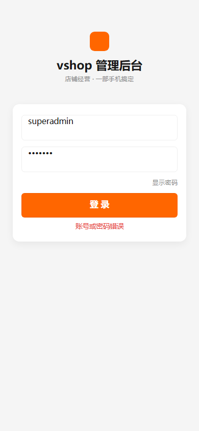
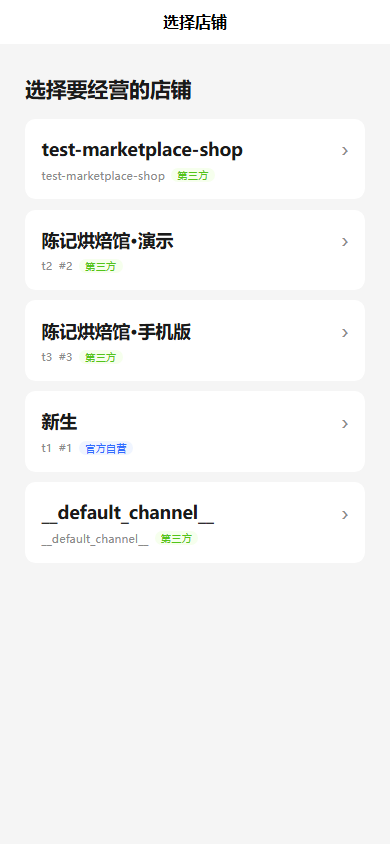
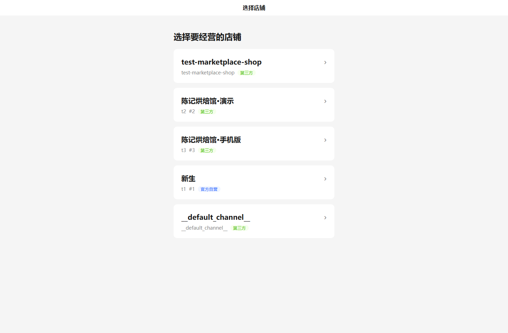
5 部署记录
| 项目 | 值 |
|---|---|
| 部署脚本 | scripts/deploy.mjs（本地构建 → 服务器仅解压，符合部署铁律） |
| 构建产物 | ≈ 4881 KB，dist/build/h5 |
| 流程 | npm run build:h5 → 产物校验 → tar + scp → 服务器备份轮转 + 解压入站点 → nginx -t 校验 → reload |
| 目标主机 | qing（~/.ssh/config），站点路径 /opt/…/e.joho.cn/guanli |
| 结果 | 构建通过 · 校验通过 · nginx 已 reload |
部署铁律复核
本次所有构建均在本地完成，服务器只执行解压与 pm2/nginx 重载，不在服务器构建，避免服务器内存不足导致失败。
6 验收与回滚指引
6.1 用户侧验收
若浏览器仍显示旧版本，请对页面执行强制刷新：Windows 下 Ctrl+Shift+R，或清除站点数据后重开（影响为新 JS 包 + 会话还原逻辑）。
- 登录后任意页面刷新，店铺/菜单/权限应保留；
- 错误密码只提示「账号或密码错误」；
- 控制台不再出现 vue-router deprecated 警告；
- 桌面宽屏下页面内容居中窄栏展示。
回滚
部署脚本 deploy.mjs 在推送新包前会对上一版本做备份轮转，出现异常时可用服务器上的上一版备份回滚；回滚后同样需在客户端强制刷新以清除缓存。
7 涉及文件与修订记录
| 版本 | 日期 | 说明 |
|---|---|---|
| v1.2 | 2026-09-04 | 统计条 + 本店商品单打通：shop-plugin 渠道回退解析，superadmin 按城市选店可查看本店商品单与统计（此前返回 FORBIDDEN）。 |
| v1.1 | 2026-09-04 | 订单列表·中国本地化改造（统计条/核销入口/手机卡片+桌面表格响应式）。 |
| v1.0 | 2026-09-04 | F1 启动会话还原；F2 登录错误提示；F3 静默 vue-router 警告；F4 桌面宽屏适配；部署上线并回归。 |
文件路径以仓库根 web-admin/ 为基准；截图原始文件位于 web-admin/_e2e/。
8 订单列表 · 中国本地化改造
对运营端 /pages/order/list/index 做中文电商订单管理形态改造：手机单列卡片 + 桌面字段密集型表格响应式双形态，顶部加统计条与「核销码」入口。
8.1 页面结构（手机/桌面一致）
- 顶栏：标题「订单」+ 右侧「核销码」入口（进核销页，扫码/输码/待核销自提单）；
- 统计条：今日订单 / 待发货 / 待退款（来源：本店商品单
myShopOrders实时统计）； - scope 切换：
本店渠道单（orders 查询）与本店商品单（myShopOrders 归集）； - 状态 tab + 搜索（订单号/顾客/手机号）；
- 列表：手机=卡片，桌面=八列表格（订单号/商品/收货人·电话/配送/实付/下单时间/状态/操作）；
@media(min-width:768px)断点切换。
8.2 核销功能
- 顶栏「核销码」→
/pages/pickup/redeem/index（复用已有核销页）； - 自提未核销订单的卡片/表格操作区出现「去核销」快捷；判定用
fetchPickupOrders(true)返回的待核销 orderId 集合，双 scope 通用、零后端改动。
8.3 验收截图（线上 e.joho.cn/guanli，手机/桌面双视口）
左侧为手机 390×844（卡片列表），右侧为桌面 1440×900（表格）。截图取「本店商品单」scope：统计条显示真实数字（今日/待发货/待退款），列表渲染归集后的本店商品订单。
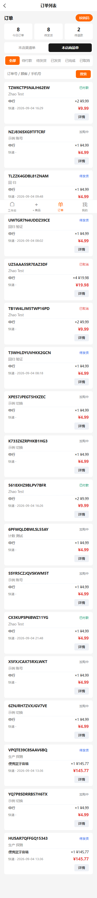
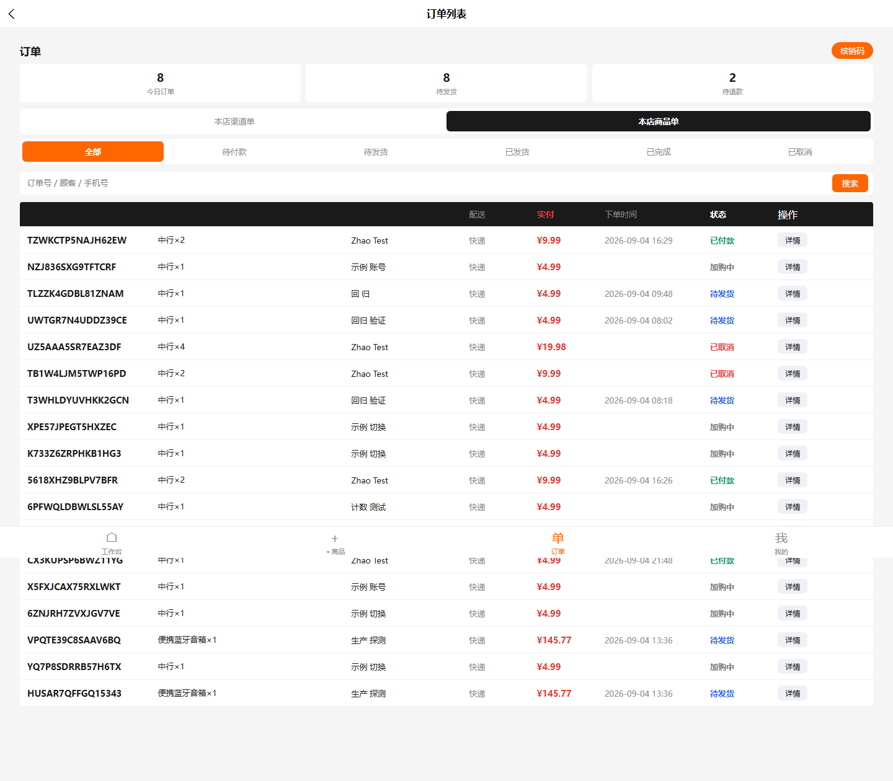
统计 + 本店商品单 已打通（后端渠道回退解析）
根因：myShopOrders 原只按「管理员绑定店铺（Shop.administratorId）」解析归属，superadmin 无绑定店铺故 FORBIDDEN，统计条与「本店商品单」空。
修复（vendure/packages/shop-plugin/src/shop.service.ts → resolveMyShopFromActiveUser）：管理员有绑定店铺时按归属解析（店主不变）；否则按当前经营渠道 ctx.channelId 回退解析该渠道 active 店铺，使 superadmin 按城市选店后即可查看本渠道「本店商品单/统计」。多店并存渠道取首个（当前单店/渠道模型）。
验证：superadmin 选店 t1（店铺「新生」）实测 myShopOrders 返回订单 18 单；统计=今日 8 / 待发货 8 / 待退款 2；手机卡片 + 桌面表格均正常渲染，无页面/GraphQL 报错。
注意：「本店渠道单」对部分渠道为空
「本店渠道单」走 orders 管理员查询（按订单所处渠道严格过滤）。实测 t1 渠道下 orders 返回 0（订单实际建于默认/其他渠道，仅经 myShopOrders 按商品 shopId 归集可见）。这是数据归属的现实：运营请以「本店商品单」+ 统计条为准；「本店渠道单」仅列出落在当前渠道的订单。若需让渠道单也归集本店商品，可后续在 orders 侧统一按 shopId 过滤。
8.4 对齐设计方案（操作区快捷 + 缩略图 + 头栏）
对订单列表补齐与已批准设计方案的差距：操作区按订单状态给快捷按钮（待发货→发货、自提待核销→去核销、其余→详情）；手机卡片商品行渠道单显示缩略图（商品单无图→占位块）；收货人行显示「顾客 · 电话 · 配送」；桌面 headbar 单行内联「订单→统计→核销码」。
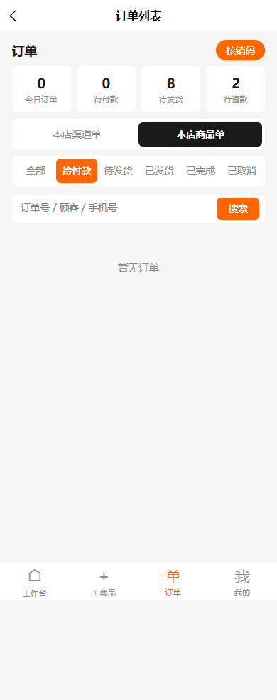
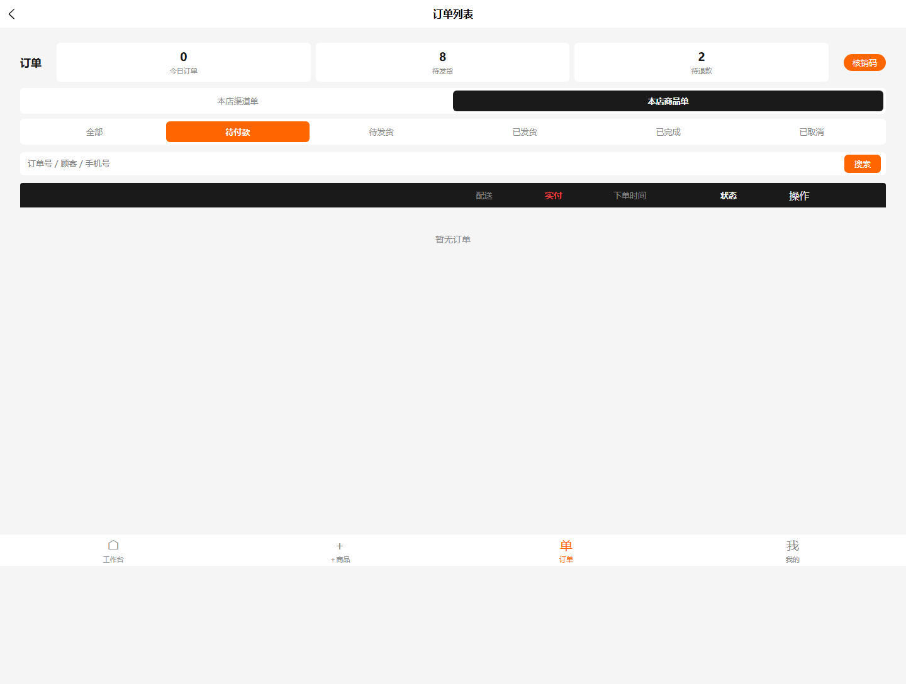
已知限制
「发货/详情」跳转在本店渠道单可用（订单在当前渠道）；本店商品单是跨渠道归集视图，其「发货/详情」受 Vendure 渠道隔离限制、可能无法打开目标单，运营请以渠道单操作为主。本店商品单无商品缩略图（接口不返回图），展示占位块。
8.4.1 催付 + 商品单缩略图
催付（待付款单）：处于「待付款」（Vendure 状态码 ArrangingPayment）的订单，操作区会出现「催付」按钮。点击后用 uni.setClipboardData 把含「订单号 + 金额 + 顾客名」的催付文案复制到剪贴板，并 toast 提示「已复制，请粘贴发给顾客」。该功能纯前端、无后端调用；运营把文案粘贴到微信/短信手动发给顾客。
商品单缩略图：「本店商品单」（myShopOrders）接口本体不返回商品图；现前端将列表所有订单的物品行的 productId 收集后，按 products(filter:{id:{in}}) 批量取商品级 featuredAsset.preview，填充到商品行的缩略图；查图失败或商品无图时仍显示占位块。商品必须配置了「封面图/Featured Asset」才有真实缩略图（如本店带图商品即显示真实图，无图商品仍为灰底占位）。
8.4.2 补齐缺失：桌面缩略图 / 统计4卡 / 受限提示 / 交互补强
在 8.4.1 基础上进一步补齐桌面与商品单视图的体验缺口，覆盖四类改动（部署后经线上 E2E 双视口回归验证，结果见下验收图）。
① 桌面商品列表行补商品缩略图：之前桌面表格商品行只显示文本；现在与手机卡片一致，在商品行左侧渲染 productId 批量回填的 featuredAsset.preview 缩略图，无图商品回退为灰底占位块（.dg 行内）。线上回归桌面 1440 视口 DG_ROWS=18、其中 DG_IMGS=4 为真实商品图，其余为占位。
② 顶栏统计改为 4 卡：headbar 统计由原先的卡片改为 今日订单 / 待付款 / 待发货 / 待退款 四张 (.stat) 卡，采用商品单跨渠道概览口径（按 myShopOrders 归集本店全部订单）。点击卡片直达对应状态 tab（全部/待付款/待发货/待退款）。线上 STAT_4=4 双视口均成立。
③ 商品单（跨渠道归集）视图受限提示：「本店商品单」是把本店订单按商品 shopId 归集、跨渠道聚合的视图；其中发起的「发货/详情」受 Vendure 渠道隔离限制、可能无法打开目标单。现点击「发货/详情」会弹受限提示，引导运营切到「本店渠道单」操作；「催付」复制的纯前端功能不受影响，仍可正常复制文案。
④ 二次确认 + 一键复制：发货动作在提交前弹二次确认（防止误发）；点击订单号调用 uni.setClipboardData 一键复制单号并 toast「订单号已复制」。线上桌面 COPY_OK=True（点击表头外订单号单元格，body 出现复制 toast）。
线上验收结论
手机 390×844 与桌面 1440×900 两个视口 ALL_OK 均 True；STAT_4=4、桌面 DG_ROWS=18（缩略图行出现）、COPY_OK=True（复制 toast）双视口成立。说明:「待签约/待催付」计数与 REMIND 催付按钮依赖线上待付款单的存在——t1 当前无待付款单故为 0，属正常数据依赖、非缺陷；缩略图取真实图数取决于商品是否配置封面图，无图回退占位亦属正常。
8.4.3 搜索 / 筛选 / 分页完善
在 8.4.1/8.4.2 基础上完善订单列表的检索与分页体验，共三项改动（部署后经线上 E2E 双视口回归验证，桌面/手机均 ALL_OK=True，验收图见下）。
① 搜索框支持按商品名：顶栏搜索框条件为「订单号 / 顾客 / 手机号 / 商品名」。对本店商品单（myShopOrders 全量数据）为全量可靠匹配——把已加载的全部本店订单按 goods.name 本地过滤，命中任意订单即返回；对本店渠道单（orders 管理员查询、服务端分页）为「已加载页内生效」，仅过滤当前已取回页的行。
② 新增筛选行（配送方式 / 时间范围）：列表上方新增一行筛选：配送方式（如 配送/自提等，.f-chip）与时间范围（今日 / 近7天 / 近30天），并提供「一键清除」按钮将条件全部复位。筛选状态会随 scope（本店商品单 / 本店渠道单）、tab（全部/待付款/待发货/待退款）与搜索词联动重置，避免跨视图残留旧条件。线上双视口筛选项 FILTER_CHIPS=2（配送方式 + 时间范围两行）。
③ 桌面渠道单底部分页条：桌面「本店渠道单」orders 服务端分页，底部渲染 .pgbar 分页条：上一页 / 下一页、展示「第 X / Y 页 · 共 N 单」，页大小可选 20 / 50 / 100。线上桌面切到「本店渠道单」见 .pgbar（t1 渠道当前共 0 单，条仍正常渲染为「第 1 / 1 页 · 共 0 单」，翻页/切页正常；订单归属详见上 8.4 页面「本店渠道单」注意）。
线上验收结论
手机 390×844 与桌面 1440×900 ALL_OK 均 True；PRODUCT_NAME_OK=True（商品单按商品名搜索命中 ≥1）、FILTER_CHIPS=2 双视口成立。桌面「本店渠道单」.pgbar 分页条（上一页/下一页 + 共 N 单 + 页大小 20/50/100）正常渲染。说明：渠道单分页「共 0 单」系 t1 渠道当前无落单订单（订单建于默认/其他渠道，数据归属），条本身渲染与翻页能力正常，非缺陷。
8.4.4 配送信息补齐（手机地址行 + 桌面地址列 + 物流着色）
在 8.4.1/8.4.2/8.4.3 基础上补齐订单的配送信息展示：手机卡片新增灰底地址行、桌面表格新增「地址」列，并对不同物流状态做颜色标注（部署后经线上 E2E 双视口回归验证，桌面 ADDR_COL=19、HAS_ADDR_HEADER=True 成立，验收图见下）。
① 手机卡片·灰底地址行：在「收货人·手机·配送方式名」行下方新增一行灰底地址（.addr，样式 📍 省市区 街道门牌）。该行仅快递单（express）存在：订单有 shippingAddress 且配送方式为快递时渲染；无地址或自提单不渲染此行。
② 配送方式名补全：「收货人·手机·配送方式名」一行里的配送方式名补全——自提订单显示「门店自提」，快递订单显示 shippingMethod.name 全名（如「顺丰速运」），不再截断/空置。
③ 桌面表格·新增「地址」列：桌面八列表格仅新增一列「地址」（.c-addr，位于收货人 / 电话之后），其余列保持不变；该订单无地址或为自提时显示 — 占位。表头固定渲染此列（HAS_ADDR_HEADER=True），线上桌面视口该列单元格 ADDR_COL=19（含表头 + 数据行）。
④ 状态物流着色：对订单状态做颜色标注——待发货橙 / 已发货蓝 / 已完成绿 / 已取消灰；「待付款」保留原色不标注。着色对手机卡片（.st）与桌面表格（.c-st）同时生效（STATUS_COLORED=True 双视口成立）。
已知限制
本店商品单（myShopOrders）接口不返回 shippingAddress 与配送方式名 → 商品单内手机卡片不渲染灰底地址行、桌面「地址」列显示 — 占位。本店渠道单（orders 接口）才返回地址，灰底地址行随快递单出现。物流着色（待发货橙/已发货蓝/已完成绿/已取消灰）对商品单同样生效，不因此受限。
线上验收结论
部署后线上 E2E 双视口回归：手机 390×844 与桌面 1440×900 ALL_OK 均 True；桌面 ADDR_COL=19（地址列单元格，含表头）、HAS_ADDR_HEADER=True、STATUS_COLORED=True、OK_ADDR=True 成立。手机 ADDR_MOBILE=0（本店商品单无地址，符合已知限制；邮箱渠道单快递单的地址行随有值订单出现），无 PAGEERROR。
8.4.5 本店商品单补地址（后端 myShopOrders 返回收货地址/配送方式）
8.4.4 的「已知限制」中，本店商品单因 myShopOrders 接口不返回 shippingAddress/配送方式名，导致地址列恒为 —、手机地址行不渲染。本节通过后端接口扩展解除该限制——「本店商品单」即本租户全部订单总表，理应看得到地址。
① 后端 @vendure/shop-plugin 扩展 aggregateMerchantOrders：在 packages/shop-plugin/src/shop.service.ts 中加载订单的 shippingLines（含 shippingMethod）关系，并在构造 MerchantOrder 时映射 shippingAddress（fullName/streetLine1/city/province/countryCode/postalCode）与 shippingLines（id/code/name）。types.ts 与 plugin.ts GraphQL schema 同步新增 MerchantShippingAddress/MerchantShippingLine 并扩展 MerchantOrder 字段。
② 前端补查字段：src/apis/order.ts 的 ShopOrderRow 新增 shippingAddress/shippingLines，fetchShopOrders 查询补查这两组字段；src/utils/orderFormat.ts 的 shopToView 用现成 formatAddress 填 o.address（省市区+街道）、用 shippingLines[0].name 填 o.delivery（自提无配送行时为「门店自提」）。
③ 展示效果：手机卡片灰底地址行（.addr）在快递单上渲染真实地址；桌面「地址」列显示真实收货地址（自提/无地址单显示 —）；「配送」列显示配送方式全名（自提为「门店自提」）。部署后线上 E2E 双视口回归：手机 ADDR_MOBILE=7（灰底地址行出现），桌面 ADDR_COL=19、ADDR_SHOP_NODES=25（真实地址单元格）、OK_ADDR=True，无 PAGEERROR。
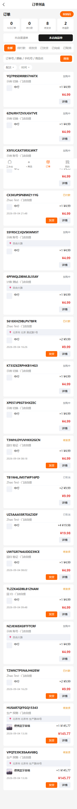
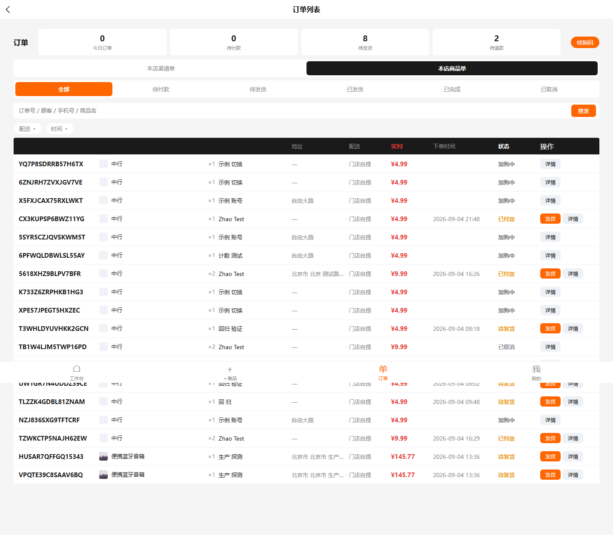
线上验收结论
部署后线上 E2E 双视口回归：手机 390×844 与桌面 1440×900 ALL_OK 均 True；手机 ADDR_MOBILE=7（灰底地址行出现）、桌面 ADDR_SHOP_NODES=25（地址单元格，含真实值）、OK_ADDR=True，无 PAGEERROR。部分订单（门店自提/无收货地址）地址显示 — 属预期。
9 商品媒体库 · 缩略图可视化修复
9.1 现象
商品上传页（/pages/product/create）的媒体库组件：上传图片后看不到图、已上传的资源也全部看不到，无法选商品图。控制台报 assetLibrary 查询错误：Cannot take more than 1000 results from a list query。
9.2 根因（两个后端缺陷叠加）
缺陷一 · 列表上限被突破：媒体库由 @vendure/cjk-plugin 的自定义 AssetLibraryAdminResolver.assetLibrary 提供。它在 loadFiltered() 里用 assetService.findAll(ctx, { take: 100000 }) 试图一次拉全量资产，而核心 ListQueryBuilder.parseTakeSkipParams 对 admin API 的 take 上限是 adminListQueryLimit（默认 1000）——100000 > 1000 直接抛「Cannot take more than 1000」。结果是无论前端传 take:30 与否，外层 assetLibrary 都整体报错，媒体库网格永远加载不出来（上传虽成功、但网格不刷新，已传资源也看不到）。
缺陷二 · 返回裸相对路径：该 resolver 的 toAssetItem 直接返回 Asset 实体存储的相对路径 preview/…（无 /assets 前缀）。前端媒体库模板用 <image :src="it.preview">，preview/… 相对当前页面解析成 /guanli/preview/… → 命中 SPA 兜底返回 index.html（text/html）而非图片，缩略图一律破图。已实测：/assets/preview/… 返回 image/jpeg 真图，/guanli/preview/… 与 /preview/… 均为 text/html SPA 页。
9.3 修复
（均在 packages/cjk-plugin/src/asset/asset-library-admin.resolver.ts，前端零改动）
① loadFiltered 改用仓库直查：由 assetService.findAll(take:100000) 改为 this.connection.getRepository(ctx, Asset).find({ order: { createdAt: 'DESC' } })，直接走 TypeORM 仓库、绕开 ListQueryBuilder 的 take 上限（与插件内 setAssetTags 既有的仓库直查模式一致）。
② toAssetItem 返回绝对 URL：经 ctx.req 取当前请求 origin，拼 preview/source = origin + /assets/ + 存储路径，所有消费媒体库的组件（MediaLibraryModal、MediaPicker/ImagePicker、RichTextEditor）不再依赖前端补前缀即得可用图片 URL。
9.4 线上验收
验收证据
接口层：assetLibrary(take:30, skip:0) 由报错改为返回 totalItems=42，且 preview/source 为可加载的绝对 URL（如 https://e.joho.cn/assets/preview/1c/…jpg）。渲染层：打入商品创建页媒体库，mlm__cell 加载 30 张缩略图，全部 naturalWidth > 0（真实加载，非 SPA 占位），未加载 0，无 PAGEERROR。商品图分组为 0 属于「这些资源尚未打商品图分类码」，点分组过滤后为空为预期。
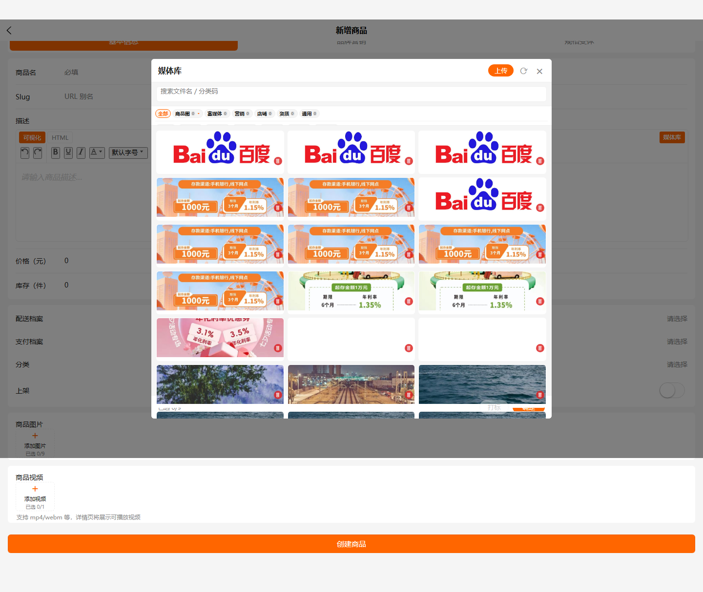
9.5 打标与底部操作条修复
关联现象：媒体库网格能显示后，选中图片但底部「已选/打标/确定」操作条不可见/点不到，无法打标签、无法把图带回商品表单。
根因：MediaLibraryModal.vue 的 .mlm__grid-scroll 是 uni 的 scroll-view，未设显式高度时不收缩，网格内容会整体撑开并经 paint 覆盖底部 footer（命中检测证实拦截者是网格里的 .mlm__cell-name），故真实触屏点在 footer 上毫无反应。
修复：给 .mlm__grid-scroll 增加 height:52vh; max-height:52vh（内容在其中内部滚动，footer 始终可见可点）。注入验证先行确认（把网格限高后 footer 显现、触摸可打开打标面板、chips=20），再落地代码构建部署。
打标 + 主图端到端验证（桌面 1440×900）
选中图片 → 打标面板打开（主图/白底图/…共 20 个分类）→ 勾选「主图」确认 → 后端 setAssetTags 落库生效（该资产 assetTags:['主图']）→ 选图「确定」回填商品表单主图，缩略图 naturalWidth>0 真实显示，无 PAGEERROR。
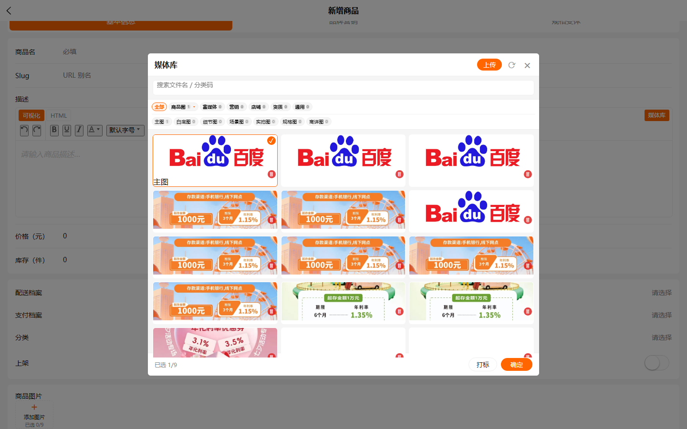
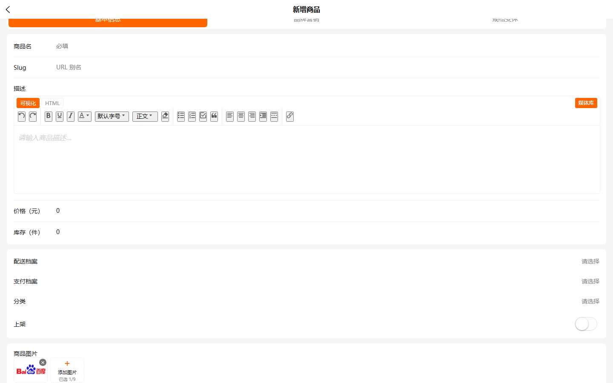
注：媒体库当前没有「描述」字段，附加资源说明只能通过分类码（打标面板「输入新分类码」）表达；若要给资源加独立描述文案，需另行迭代。
9.6 三媒库能力综合复测（生产环境 e.joho.cn）
针对「打标签、加入描述（富文本插图）、添加主图」三条链路在 https://e.joho.cn/guanli/ 上做端到端回归，三条链路全部可用，无 PAGEERROR。
① 打标签 ✅
商品创建页媒体库网格正常加载 30 张图，点选后计数「已选 1/9」；打标面板正常打开，含 20 个分类码（主图/白底图/细节图/场景图/实拍图/规格图/商详图/商品视频/实拍视频/首页Banner/活动海报/广告图/店铺装修/分类图标/品牌图/资质证书/检测报告/授权书/说明书/轮播图）。勾选「主图」确认后，后端该资产 setAssetTags 落库为 assetTags:['主图']，标签真实生效。
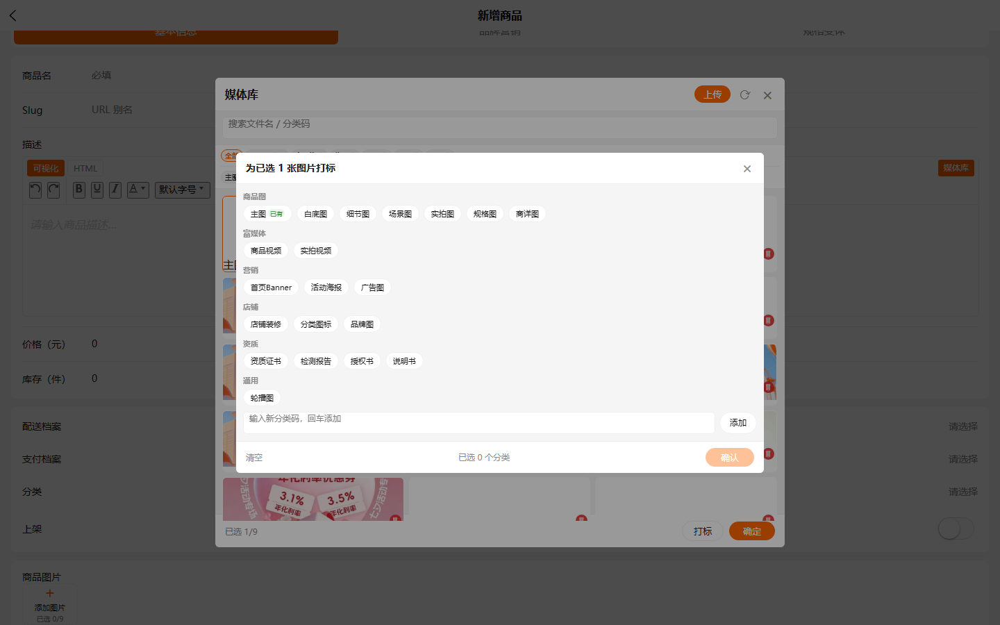
② 加入描述（富文本插图到光标处）✅
在商品「描述」富文本（wangEditor）里先输入占位文本 ABCTEST，点编辑器右上角「媒体库」选图 →「确定」→ 图片插入到光标所在位置（在 ABCTEST 之后）。DOM 断言 container img数=1 且含 ABCTEST，网络层观测到 /assets/source/… 真实请求（真图加载，非占位）。插入实现走 RichTextEditor.vue 的 dangerouslyInsertHtml（本工程工具栏未启用 wangEditor 图片模块，故用通用 <img> 插入代替 insertImage）。
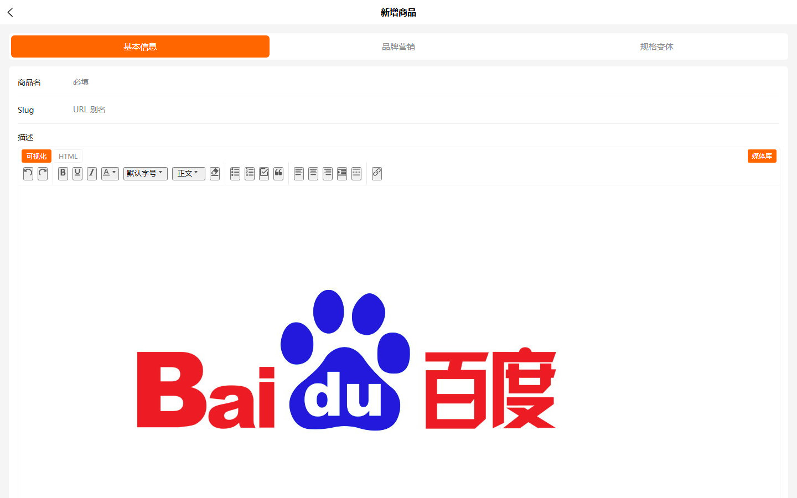
③ 添加商品主图 ✅
选图并打「主图」标签后点媒体库「确定」关闭，商品表单主图缩略图回填，img.naturalWidth > 0 证明真实加载（非破图/SPA 占位）。参见 9.5 已有回填图 media_confirm_backfill_1440.png。
复测产物：media_tagpanel_1440.png（打标面板）、media_tagged_grid_1440.png（打标后网格）、media_confirm_backfill_1440.png（主图回填）、rte_insert_desc_1440.png（描述插图）。
10 商城端品牌视觉与购物车样式（nshop 站点）
说明：本变更作用于商城前端（Nuxt 3，站点 www.youshop.cn），非 web-admin 后台；因属同一产品线的品牌视觉调整，一并归档于此以便查阅。
10.1 背景与设计选型
商城原品牌标是 Nuxtless 绿色「N」形占位；本轮将全站视觉统一为「红盾 + 白色闪电」徽标。选型经历了「Y 字形 → 皇冠（即 Y 变形）→ 胜利 / 品质 / 第一等意象」多轮概念探索，最终确定 盾 + 闪电：红盾表「品质·可信」，白闪电表「优选·高效·电速胜出」。favicon 取红白高对比的小尺寸可辨方案；logo 文件保留「徽标 + youShop.cn 品牌字」。
10.2 变更文件
| 文件 | 说明 |
|---|---|
| public/favicon.svg | 绿色「N」形 → 红盾+白闪电（32×32） |
| public/logo-top.svg | 徽标 + youShop.cn 横排（顶部导航） |
| public/logo-full.svg | 徽标居上 + 品牌字竖排（页脚/账号页/SchemaOrg） |
| CartTrigger.vue | 购物车 UButton 补 variant="outline"：红实心 → 红描边 |
三个 SVG 文件名与既有引用路径一致，nuxt.config.ts / app.config.ts / OG 底图 / schema/identity.ts 全部自动生效，无需改组件与配置。
10.3 部署
遵守部署铁律：本地构建 → scp 上传 .output/ → pm2 restart（服务器不构建）。
坑：pnpm 自带内置 deploy 命令，直接 pnpm deploy 会报 ERR_PNPM_NOTHING_TO_DEPLOY；须用 pnpm run deploy 执行本项目 scripts/deploy.mjs。目标 qing:/opt/1panel/…/www.youshop.cn/index，APP=nshop，PORT=3000，本地 build 约 13s。pm2 进程 restart 后 online。
10.4 生产验证
| 断言 | 结果 |
|---|---|
首页 <title>（中文） | 优商铺 |
link[rel="icon"] | 存在（1 处） |
/favicon.svg · /logo-top.svg · /logo-full.svg | 均 200 且含 #E6162D（红盾） |
| 头部 logo 图数量 | 2（移动端 390×844） |
| 页面错误 | 无 PAGEERROR |
注：移动端页脚按设计仅在 lg(≥1024px) 显示，故手机视口抓不到页脚图；logo-full.svg 通过 HTTP 200 + 内容校验（含红盾）确认生效。CartTrigger 为共享组件，描边同时作用于桌面头部，与全局搜索/用户按钮风格统一。
11 自提点 · 超级管理员「全局可用」开关
11.1 现象
在后台「配送档案 → 自提点 → 新增自提点」时，超级管理员账号看不到「全局可用」开关，无法直接创建全平台各租户可引用的全局自提点；旧版本只能先建普通自提点，再用其它入口转全局，链路不完整。
11.2 根因
前端新增自提点表单（src/pages/pickup/edit/index.vue）没有“全局可用”字段，新增 createPickupLocation 请求里也就没有把 isPublic 传给后端，因此即使后端 cjk-plugin 已实现「全局自提点」能力（schema 含 isPublic 字段、service 按 SetGlobalPickupLocation 权限二次鉴权），前端也永远建不出全局点。
11.3 修复
- 表单新增
isPublic字段，在字段区（「启用」之后）以 「全局可用」开关展示；仅当auth.isSuperAdmin为真时才渲染，普通租户管理员不显示，避免越权误配。 - 保存时把
isPublic随 payload 一起提交给createPickupLocation/updatePickupLocation。 - 开关文案说明：“全局自提点全平台租户可选用（「引用到本店」），仅超级管理员可维护”。后端
pickup-location.service.create依旧校验SetGlobalPickupLocation权限，双重保险。
前端改动：src/pages/pickup/edit/index.vue（模板 + form + onSave payload），复用既有 isSuperAdmin 判定；后端无需改动（schema/service/实体/cjk-plugin lib/ 均已含 isPublic）。
11.4 验收（生产 e.joho.cn，手机 390×844）
验收证据
superadmin 登录 → 选择店铺 → 配送档案 → 自提点管理 →「+ 新增自提点」：编辑页表单完整加载（名称/类型/保存均在），「全局可用」开关正常显示于「启用」下方，默认灰色 OFF，无 PAGEERROR。截图见下。
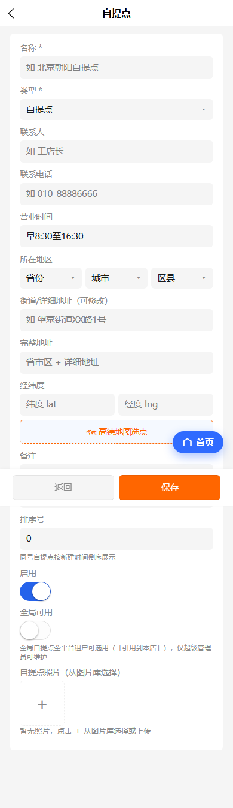
12 商品详情三问题修复（2026-09-13：就近库存 / 标题SKU / 9图保存）
说明：本批修复横跨商城前端（nshop 站点 www.youshop.cn）、管理端（e.joho.cn/guanli）与后端（vendure），按同一产品线一并归档于此。核心结论：就近库存不再因「城市/坐标」双重过滤而空白；商品标题与 SKU 区不再暴露 P+时间戳 自动编码；商品 9 张图片编辑保存后跨渠道不再丢失。
12.1 就近库存：全仓库展示，距离未知 / 服务全城
现象：带定位或选定城市后，「就近库存」区显示「暂无可查看的门店库存」——即使平台默认仓明明有货。
根因：后端 findNearbyStock 对仓库做了两重过滤：服务城市不匹配当前城市 → 跳过；带定位时无坐标仓库 → 跳过。默认仓无坐标且服务城市为空，带定位用户查询时两条过滤同时命中，结果集为空。
修复：删除两处过滤，全部仓库参与距离计算与排序；无坐标仓库无法计算距离时后端返回极大值、前端统一显示「距离未知」；服务城市为空时前端显示「服务城市：全城」。
线上验证（手机 390×844，城市=长春、无定位）
就近库存区展示 3 个仓库：长春仓（服务城市：长春市）、Test-Marketplace-Shop Warehouse（服务城市：全城）、默认仓（服务城市：全城）；无定位场景距离一律「距离未知」；默认仓「96 件可售」正确展示，不再出现「暂无可查看的门店库存」。
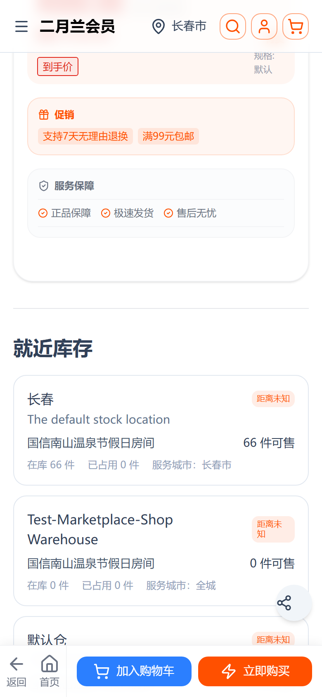
涉及文件：后端 vendure/packages/inventory-plugin/src/inventory.service.ts；前端 nshop/layers/base/app/utils/nearby-stock.ts（新建，含 formatNearbyDistance / serviceCityLabel）、components/product/NearbyStores.vue。
12.2 标题与 SKU 区：隐藏无意义自动编码
现象：如「国信南山温泉节假日房间」这类单规格商品，标题尾部与「商品信息 SKU 区」出现 p1788780326947 之类 P+时间戳编码，对用户毫无意义。
根因：web-admin 新建商品时，单变体 translations.name 直接用了 input.sku（系统自动生成的 P+时间戳），变体名即自动编码；前端详情页标题把变体名拼接到商品名后，SKU 区又直接渲染 selectedVariant.sku。
修复（双层）：
- 管理端：
createVariantsForProduct变体名改用input.productName || input.sku，新建单规格商品时变体名 = 商品名。 - 商城端：标题拼接规则改为「无规格隐藏变体名、多规格显示『商品名 规格组合』」；SKU 区识别
/^[Pp]\d+$/自动编码并降级显示「规格: 默认」（多规格显示规格名）；真实 SKU 照常显示。
线上验证（手机 390×844）
标题 =「国信南山温泉节假日房间」无编码；SKU 区显示「规格: 默认」；整页正则扫描无 P\d{13} 残留。
涉及文件：管理端 vshop/web-admin/src/apis/product.ts；商城端 nshop/layers/base/app/utils/product-title.ts（新建）、composables/useProductDetailView.ts、components/product-detail/DetailClassic.vue / DetailFloor.vue、12 个 i18n 语言包（新增 messages.detail.spec / specDefault）。
12.3 商品 9 张图片保存：跨渠道资产绑定修复
现象：商品 72 在管理端编辑页选满 9 张图片点「保存」，表面提示成功，但刷新后只剩 6 张，C 端详情页同样缺失；此前甚至出现过保存后 product_asset 被清空。
根因（两层）：
- 前端保险函数
ensureAssetsInCurrentChannel静默吞错（catch {}），且未把featuredAssetId纳入分配集合——主图一旦不在当前渠道就分配不进去，失败无任何日志。 - 后端
AssetService.assignToChannel用findByIdsInChannel(ctx, Asset, ids, ctx.channelId)按当前渠道过滤资产：跨渠道资产（如从 t1 渠道媒体库选的图）永远查不到，assignAssetsToChannel即使被调用也无法把资产绑定到新渠道，保存后资产随即丢失。
修复：前端保险函数去掉静默、catch 中 console.error('[ensureAssetsInCurrentChannel] assignAssetsToChannel 失败', err) 留痕，并把 featuredAssetId 并入分配 ID 集合；后端改为按 ID 直取全部资产（where: { id: In(input.assetIds) }，Asset 为全局实体可跨渠道分配）再逐条写入目标渠道。
线上回归（管理端手机 390×844 + API 断言）
登录 t2 店铺 → 商品 72 编辑页 → 媒体库选满 9 张 → 保存：前端按序提交 assignAssetsToChannel(assetIds: [42,48,47,46,45,44,43,41,40], channelId: 37) → UpdateProductAssets / UpdateProductVariants 均携带 9 个 assetIds + featuredAssetId: 42。保存后 API 断言 assets=9、featured=42；C 端 t2 详情页画廊 assets=9。脚本输出 P72_SAVE_REGRESSION_PASSED。
故障排查指引
若再次出现「保存后图片数量不对」：① 管理端浏览器 Console 搜索 ensureAssetsInCurrentChannel——有红色错误即渠道分配失败（多为权限/网络）；② 用超管查 asset_channel 确认每个 assetId 是否已写入商品所在渠道；③ 历史被清空的商品，在修复后的后台重新编辑保存一次即回填（媒体库资产仍在）。
涉及文件：管理端 vshop/web-admin/src/apis/product.ts（保险函数签名 ensureAssetsInCurrentChannel(assetIds, featuredAssetId?)）；后端 vendure/packages/core/src/service/services/asset.service.ts（assignToChannel 按 ID 直取）。部署：后端 _deploy.ps1（git pull + pm2 restart），管理端/商城端 scripts/deploy.mjs。
13 库存与预警 · 库存页面 v2 升级（2026-09-21）
对运营端 /pages/inventory/stock/index 做中国本地化通用形态改造：从「一列裸 ID + 现存数」升级为 概览 6 卡 + 多维筛选 + 富明细卡片 + 批量闭环操作，并补齐配套的预警规则页、单据中心与流水页筛选。
13.1 现象
- 库存页只能看裸 ID：明细只显示
productVariantId与现存数，运营看不出这是哪个商品；无缩略图、无 SKU、无商品名、无占用/可用。 - 找不到商品、看不到全貌：一次拉 200 条无分页、无搜索、无排序；页面上也没有 SKU 总数、库存总量、货值、缺货/预警数等概览。
- 预警不可配：低库存档位是全页统一的 5/10/20/50，无法按单个 SKU 设安全库存，也没有预警规则可持久化。
- 单据与流水不可追溯：采购/移库/盘库/出库单据创建后没有列表可查；流水页只有 50 条、无任何筛选、无出入汇总。
13.2 根因
- 数据源用的是核心
stockLevels直查，只带回变体 ID 与现存数，没有关联product_variant/product_translation/asset，所以既无名称也无图。 - 筛选、分页、统计全都不存在——前端一次性拉满 200 条后本地渲染，跨页搜索无从谈起。
- 后端没有任何「安全库存 / 预警规则」表与接口（
inventory_alert_rule为本次新增），低库存只能靠前端写死档位近似。 - 单据只有
createStockDoc写入路径，没有列表查询；流水的stockMovementLedger只支持productVariantId/locationId/bizCode，缺方向/业务类型/日期维度。
13.3 修复
- 新增后端聚合查询
inventoryStockPage：一条聚合 SQL 打通stock_level+product_variant+product_translation+asset+stock_doc_item+inventory_alert_rule，一次返回totalItems / summary / items；支持仓库、关键词（商品名/SKU/规格，服务端 LIKE）、状态分桶（全部/缺货/低库存/正常）、排序（库存升/降、缺口、货值）。 - 安全库存四级回退：新增
inventory_alert_rule表（tenantChannelId + variantId + locationId唯一，locationId=0哨兵表示「全仓通用」），解析顺序为「SKU×仓规则 → SKU 全仓通用 → 渠道默认inventoryDefaultSafetyStock→ 常量 10」，后台可按 SKU 设值并持久生效。 - 库存主页整页重做：概览 6 卡（可点缺货/低库存卡直接筛选）→ 仓库胶囊 + 搜索 + 排序 → 状态 tabs（带服务端计数）→ 8 格快捷宫格 → 富明细卡片（缩略图/名称/SKU/规格/现存/占用/可用/安全库存/货值/最近变动/状态）→ 批量条（勾选后可一键生成采购入库单或批量设安全库存），并补齐下拉刷新、触底加载、竞态守卫与空态区分。
- 新增预警规则页与单据中心：预警规则页可改渠道默认安全库存并按 SKU 设值（只提交改动行）；单据中心按 5 个类型 tab 查看采购/移库/盘库/出库单据（单号、条数、总数量、备注、操作人、时间）。
- 流水页升级：顶部入/出汇总（与列表同条件），支持方向（全部/入库/出库）、业务类型（9 类）、仓库、日期预设（今日/近 7 天/本月）筛选，并按日期分组展示；支持从库存卡片带
productVariantId直接进入预筛。 - 错误处理：所有请求
catch后走graphQlErrorMsg弹 Toast 且保留上次结果不清空；并发请求用自增seq丢弃过期响应。
13.4 上线后追加修复的 3 个线上缺陷
本轮回归（真实写操作 + 只读探针）暴露了 3 个只有线上才复现的问题，已一并修复并部署：
| # | 现象 | 根因 | 修复 |
|---|---|---|---|
| 1 | 库存列表带出本店不可售的 SKU（点「补货/调整」保存时被拒：「变体不存在或不属于当前渠道」） | 仓库是渠道可见的，但变体未必已分配给该渠道；聚合查询只按仓过滤，未按渠道过滤变体 | inventory-stock.service.ts 的 loadAggregates 增加 innerJoin('v.channels', …)，变体必须属于 ctx.channelId（t2 实测 12 → 10 个 SKU） |
| 2 | 纯虚拟库存模式的店铺（physicalStockEnabled=false，如 t2）批量采购/调整/补货直接弹失败且不发请求 |
前端兜底目标仓只取「默认物理仓」，无物理仓时为空 → 批量条校验不通过直接 return | 前端兜底链改为 默认物理仓 → 虚拟仓 → 第一个仓（落到「t2 虚拟仓」），并把提示改为可操作文案「当前店铺无可入库仓，请先到『仓库管理』初始化物理仓或虚拟仓」 |
| 3 | 单据中心每单「条数 / 总数量」恒为 0；库存卡片「最近变动」恒为「暂无变动」 | PostgreSQL 别名折小写：TypeORM 裸串 .select('x AS alias') 不加引号，PG 会把别名折成小写（variantId → variantid），getRawMany() 取 r.variantId 恒 undefined。本地 SQLite 不复现 |
inventory-stock.service.ts（loadLatestCost / loadLedgerInfo）与 stock-doc.service.ts 共 3 处改为两参形式 .select(expr, alias) / .addSelect(expr, alias)（TypeORM 会加引号） |
权限口径：租户管理员可读库存、可开单据
租户侧管理员通常只有 Create/Update/DeleteStockLocation，而 ViewStock 只挂在内置 inventory-staff/manager/super-admin 角色上，导致本页整页 FORBIDDEN。修复：inventoryStockPage / inventoryAlertRules 放开为 @Allow(ViewStock, ReadCatalog, ReadStockLocation)，createStockDoc 放开为 @Allow(ViewStock, UpdateStockLocation)，stockMovementLedger / stockDocList 用同一只读口径（@Allow(A,B) = 任一命中即通过）。
两个业务口径须知
① 纯虚拟库存模式店铺：Channel.customFields.physicalStockEnabled=false 时不补建物理仓，库存直接落在「{编码}-virtual」虚拟仓；本页「全部仓」聚合即虚拟仓之和，入库目标默认也落在虚拟仓。② 「库存货值」需要成本价数据：货值 = 最近一次采购/移库成本价 × 现存，从未录过成本价的 SKU 货值显示 ¥0.00（属预期，不是计算错误）；在采购入库时填写「成本价（分）」即可让货值生效。
验收结论（线上 e.joho.cn/guanli，手机 390×844 dpr=2）
① 概览 6 卡与点进去的筛选结果口径一致；② 搜索按商品名/SKU/规格在服务端命中（不受当前页限制，实测搜 SKU 后 tabs 计数同步收敛为 全部 1 / 低库存 1 / 正常 0）；③ 状态 tabs 计数随仓库/关键词变化且三个分桶之和 = 全部数；④ 明细卡片显示现存/占用/可用/安全库存/货值/最近变动，缩略图与商品名正确；⑤ 安全库存按 SKU 可保存并持久生效（未设置 SKU 回退渠道默认值 10）；⑥ 批量选品可生成采购入库单（单号回显，实测 PO-MUBPM5SQ-0D2）且库存与流水同步更新；⑦ 单据中心可见刚生成的单据，流水页可按方向/类型/日期筛选且汇总数与列表一致；⑧ 三类失败场景（搜索/保存规则/调整库存）均弹 Toast 且列表不清空。只读探针 _e2e/_probe_inventory.py 共 18 项判定 0 项失败。
13.5 验收截图
以下均为线上真实效果（手机 390×844、dpr=2；桌面 1440×900）。截图内含两处真实写操作：预警规则页把首行 SKU 的安全库存设为「现存 + 2」，库存页勾选该行一键生成采购入库单并补录成本价。
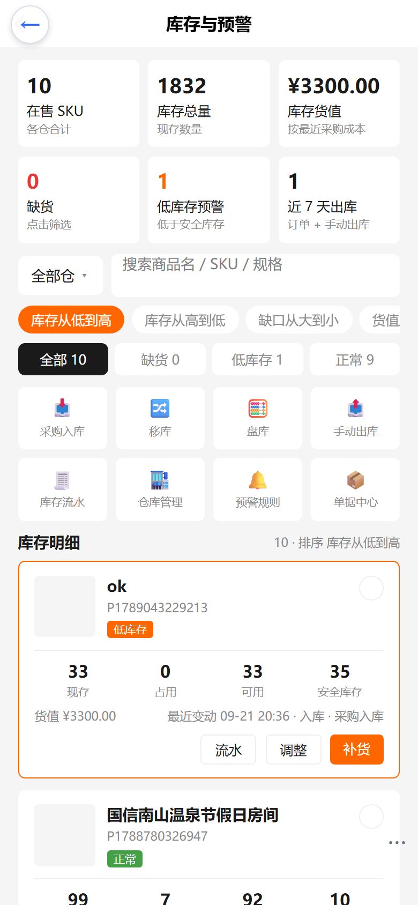
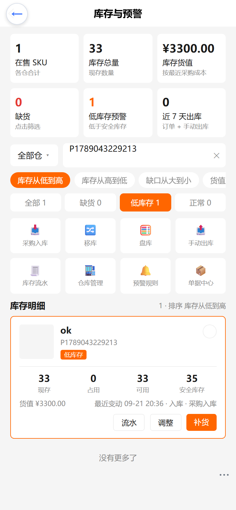
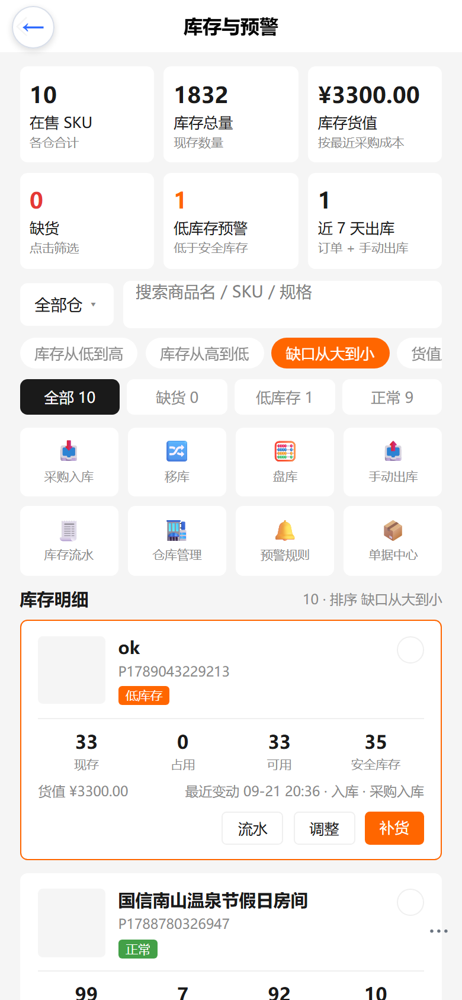
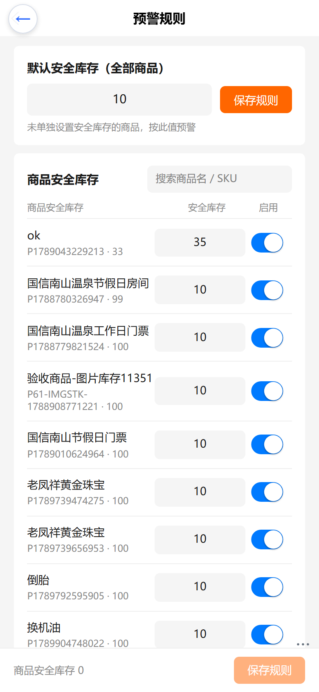
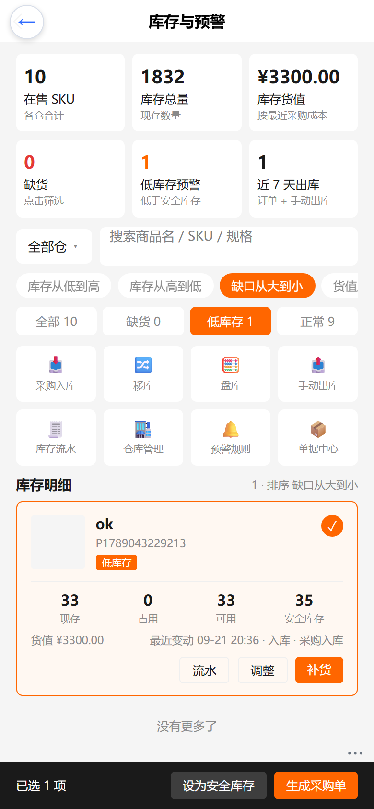
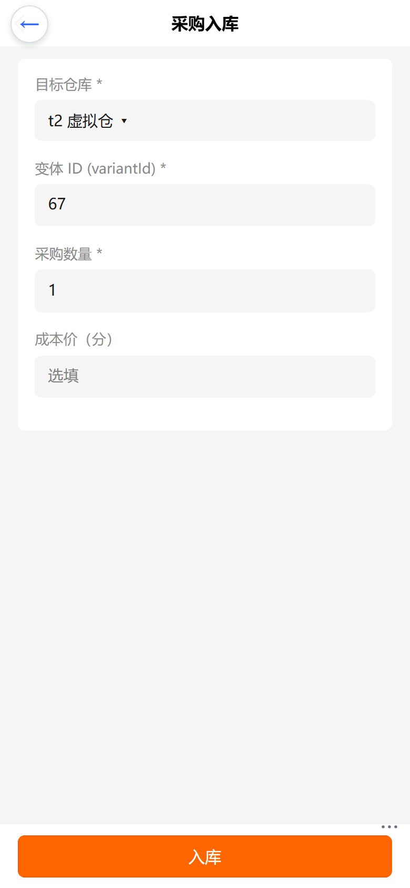
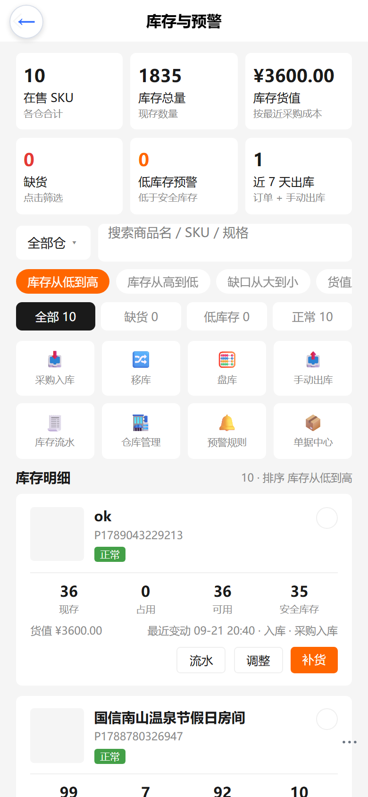
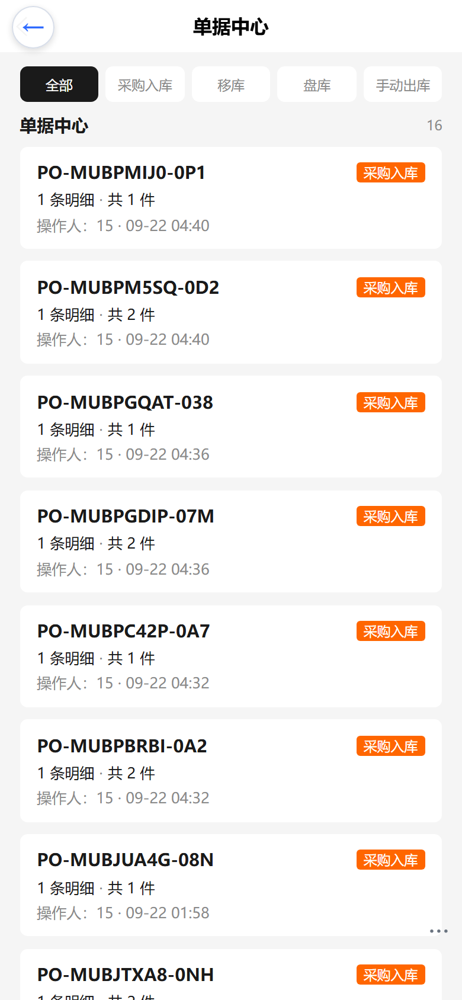
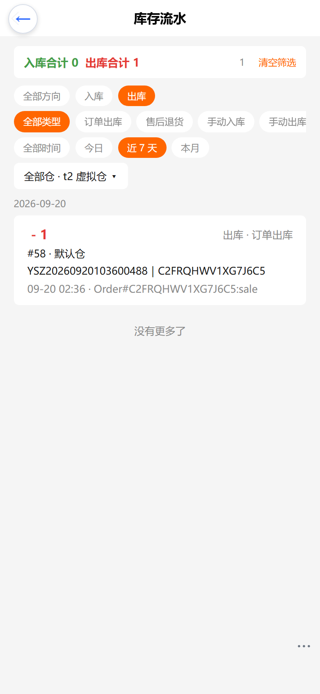
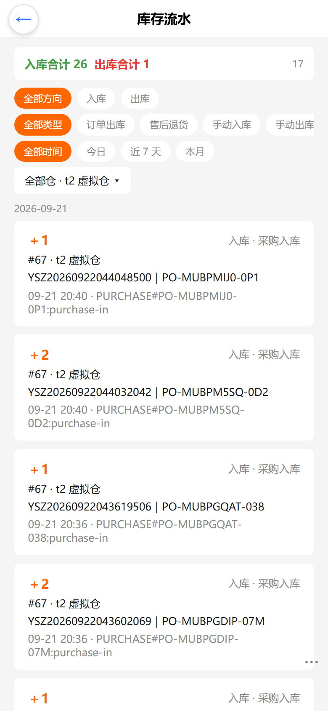
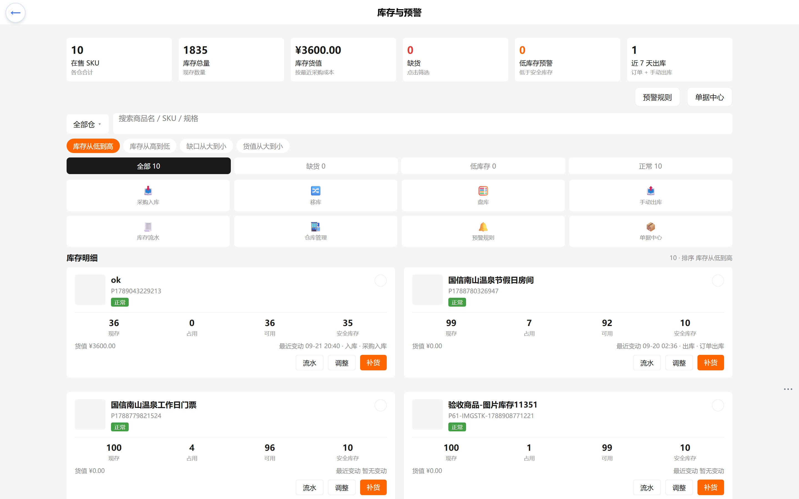
故障排查指引
① 库存页全空：先确认店铺是否绑定仓库（physicalStockEnabled 与仓库列表），纯虚拟库存模式店铺只有虚拟仓，无仓时明细为空但概览仍显示 0，属预期。② 搜索无结果：搜的是商品名/SKU/规格三类，语言取当前请求语言，切到英文时中文商品名可能搜不到，改搜 SKU 即可。③ 安全库存不生效：按「SKU×仓 → SKU 全仓通用 → 渠道默认 → 10」逐级回退，若某 SKU 设了值仍显示 10，检查该行是否保存成功（保存只提交改动过的行）。④ 缺货数 ≠ 缺货列表条数：概览卡是全量口径（不含关键词过滤），列表会叠加当前仓库与关键词，请先清空搜索再对比。⑤ 货值恒为 ¥0.00：该 SKU 从未录过成本价，在采购入库时填「成本价（分）」即可。⑥ 列表里出现点不动的行：该变体未分配给当前渠道，属数据问题（本轮已加渠道内连接过滤，若仍出现请检查变体渠道分配）。⑦ 单据条数/总数量恒为 0：PostgreSQL 别名折小写所致，确认部署的 lib/ 是否为本轮版本（后端改 src 必须 npm run build，dev-server 消费的是 lib/）。
涉及文件：后端 vendure/packages/cjk-plugin/src/inventory/（inventory-alert-rule.entity.ts、inventory-alert-rule.service.ts、inventory-stock.service.ts、stock-doc.service.ts、stock-doc.admin.resolver.ts、inventory-admin.resolver.ts、inventory-mode.custom-fields.ts、plugin.ts、幂等迁移）——只新增 1 张表，不改既有表结构；前端 vshop/web-admin/src/pages/inventory/{stock,alert-rules,stock-doc,movements}/、src/components/inventory/*、src/utils/inventoryFormat.ts、src/apis/{inventory,stock-doc,channel}.ts、src/pages.json、双语语言包。部署：后端本地 npm run build（提交 lib/）→ 服务器 git pull + pm2 restart vendure；前端本地 npm run build:h5 → node scripts/deploy.mjs（服务器不构建）。回滚：前端产物回退；后端回上一 commit + pm2 restart（新表保留不影响旧代码）。
14 订单列表 · 筛选/状态/版式重构（2026-09-22）
针对运营端 /pages/order/list/index 的三类反馈做重构：① 搜索过滤不稳定、特定环境无结果；② 订单状态不全（今日订单等）；③ 订单列表版式变化不明显。本轮纯前端改动，未动后端。
14.1 问题现象与根因
根因 A · 组合筛选直接报错（对应反馈①）：筛选条件组装函数 buildOrderFilter 在条件数 > 1 时会把 filterOperator: 'AND' 写进 filter 对象内部；但该字段属于 OrderListOptions（filter 的兄弟节点），写进 filter 会被 admin-api 直接拒绝 —— Field "filterOperator" is not defined by type "OrderFilterParameter"。于是「时间 + 状态」「关键词 + 时间」等任意两个及以上条件同时生效时请求整体失败、列表空白。这正是「搜索过滤不稳定、特定环境无结果」的真身：单条件能出结果、一叠加就全空。
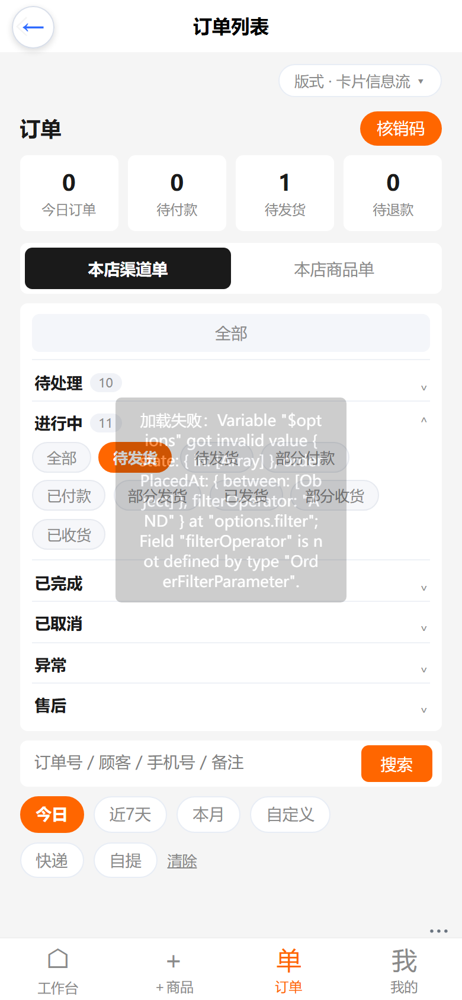
根因 B · 时间筛选吞掉未下单订单（对应反馈②）：时间条件用的是 orderPlacedAt，而「加购中 / 待付款」等尚未下单的单该字段为 null，会被 between 整体排除。生产只读探针实测（t2 渠道）：
| 条件 | orderPlacedAt 口径 | createdAt 口径 |
|---|---|---|
| 本月 | 11 | 21 |
| 本月 + 待处理组 | 0（10 单全被吞） | 10 |
| 抽样 | AddingItems 单 placed=None created=2026-09-12；Delivered 单两者仅差数小时 | |
结论：筛选口径必须是 createdAt（下单/创建时间），否则「今日订单 / 本月」永远看不到待处理单。修复后「本月 + 待处理」在界面返回 8 行（探针 10 单 − 2 张 0 件 0 元幽灵单，幽灵单按既有规则不出现在列表）。
根因 C · 版式变化不明显（对应反馈③）：原三套版式只改了行内少量样式，DOM 结构完全一致，切换后肉眼几乎无差异；且状态 tab 只列了少数状态、无异常/售后入口。
14.2 修复内容
- 筛选全部下推服务端：新增纯函数层
utils/orderFilter.ts（时间区间 / 状态分组 / 异常类型 / filter 组装），GraphQL 改为变量化传参（消除字符串内插），多条件的 AND 语义交给OrderListOptions默认值，不再手写filterOperator。 - 时间口径改为
createdAt，今日 / 近7天 / 本月 / 自定义区间四档 + 起止颠倒自动交换。 - 状态 tab 全枚举 + 分组折叠：16 个状态按「待处理 / 进行中 / 已完成 / 已取消」四组收纳，另加异常组（按
exceptionType二级筛选：拒收 / 地址错误 / 无人接收 / 破损 / 其他）与售后组；分组默认折叠，避免把列表挤出首屏。 - 统计卡口径固定：今日卡固定「当日」口径（不随当前时间胶囊漂移），四张卡与对应 tab 计数同源，避免「点进去数量对不上」。
- 三版式结构性重做（积木式，共用功能块）：
卡片信息流（单列大卡：缩略图 + 商品明细 + 操作组）/高密度清单（运维视角）（无圆角两行清单，一屏更多条）/状态看板（分区导航）（手机端按状态泳道分区、桌面端左侧分组导航 + 右侧紧凑表）。 - 竞态防护：列表请求自增序号，只有最新一次结果允许写入（快速连点 tab / 切换筛选不再串数据）。
14.3 回归测试与证据
- 单测：
npx tsx --test src/utils/orderFilter.test.ts→ 22 通过 / 0 失败；orderListConfig.test.ts→ 5 通过。 - 类型检查：
npx tsc --noEmit仅剩 7 条历史错误（apis/coupon.ts、apis/product.ts、utils/scanner.ts），本轮无新增。 - 线上只读探针（
_e2e/_probe_order_filter.py，10 项 0 失败）：baseline 21 / 待发货 1 / 关键词_or10 / 今日 0 / 自提 17 / 快递 4 /deliveryType空 0 / 异常 0 / 破损 0 / 售后 0 —— 各条件均有区分度且无 ERR。 - 组合语义判定（
_e2e/_probe_order_multi2.py）：pickup=17、state.in=1，组合不写 filterOperator 得 1（=交集，AND），显式 options 级 OR 才得 17 → 证明默认即 AND，无需显式声明。 - 界面级回归：截图脚本内置断言 ——「今日 + 待发货」组合 toast = 0（修复前为 1 且报错）；「本月 + 待处理」组合 rows = 8 > 0。
14.4 验收截图
以下均为线上真实效果（手机 390×844、dpr=2；桌面 1440×900）。
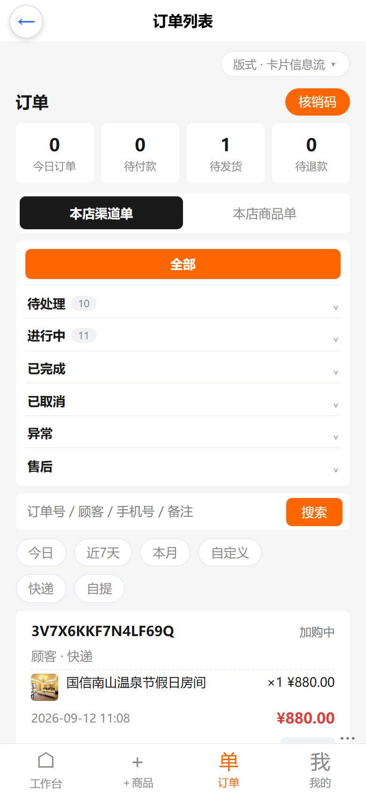
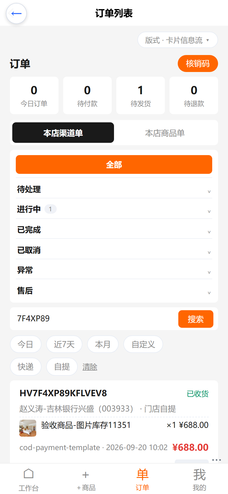
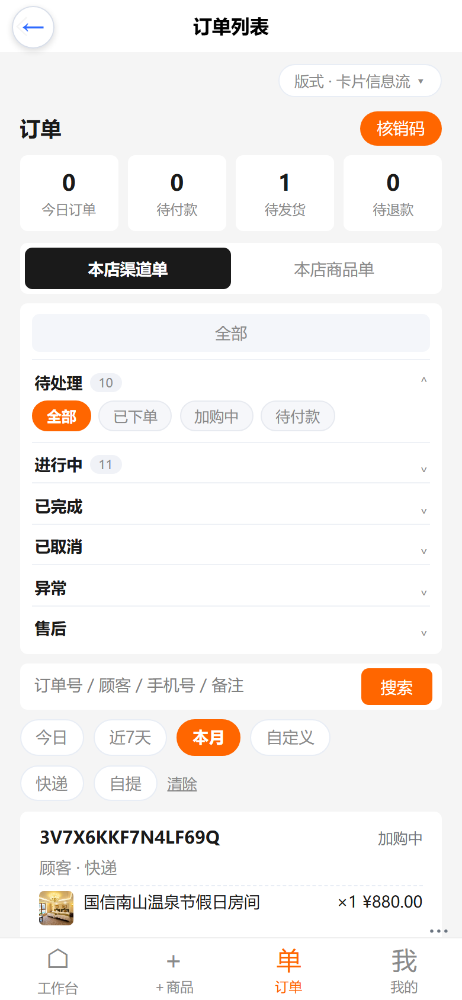
HV7F4XP89KFLVEV8（当页 20 条里根本没有这条） / 「本月 + 待处理」组合筛选返回 8 行（修复前该组合直接报错空白）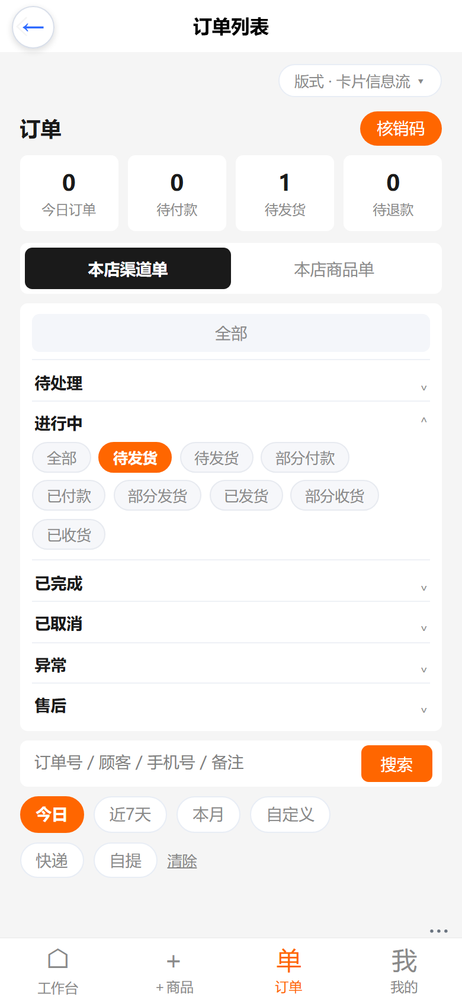
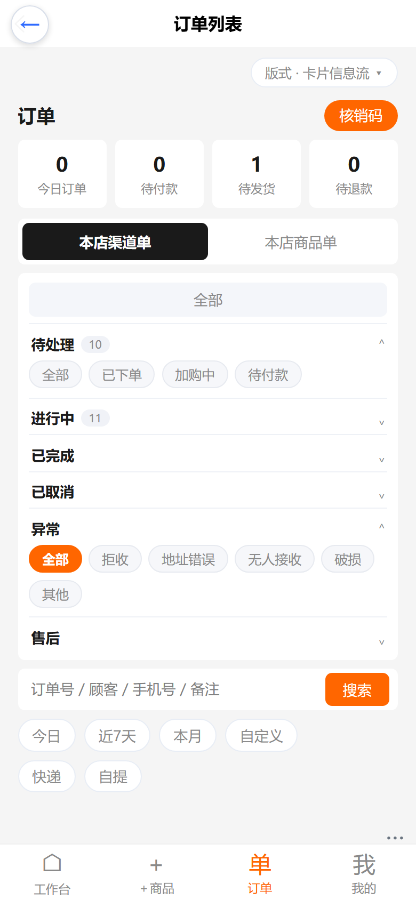
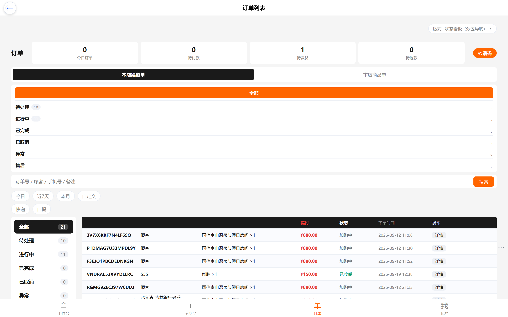

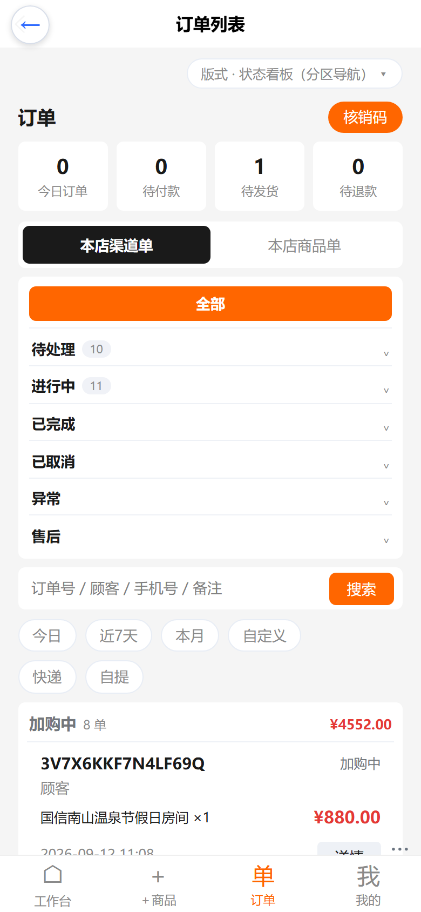
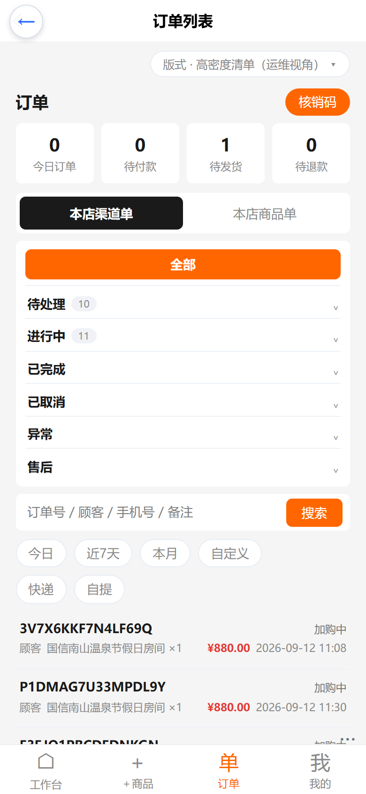
故障排查指引
① 筛选后列表空白：先看是否有红色 toast。若报 filterOperator … not defined 之类的 GraphQL 错，说明部署的是旧产物（本修复已移除该字段），重新 node scripts/deploy.mjs 即可。② 「今日订单」为 0：口径是创建时间（createdAt），当天确实没有新建单时为 0 属正常；可用「本月」或「近7天」验证。③ 时间筛选后看不到待处理单：确认时间字段为 createdAt 而非 orderPlacedAt（未下单的单后者为 null）。④ 卡片数比 tab 计数少：列表会过滤「0 件 0 元」幽灵单，计数是服务端全量口径，差值即幽灵单数量。⑤ 切版式看不到结构变化：版式区在筛选条下方，若前序展开过状态分组会把列表挤到首屏外，先收起分组或下拉即可。⑥ 「本店商品单」时间筛选略有差异：商品单接口只返回 placedAt（无 createdAt），口径与渠道单不完全一致，商品单恒为已下单单，实际影响可忽略。
涉及文件：前端 vshop/web-admin/src/utils/orderFilter.ts（新建，含 resolveTimeWindow / buildOrderFilter / STATE_GROUPS）、src/utils/orderFilter.test.ts（新建，22 用例）、src/apis/order.ts（fetchOrders 变量化 + fetchOrderCounts 多别名计数）、src/components/order-list/*（OrderListFilters / OrderListTabs / OrderListCardRow / OrderListTableRow / OrderListRenderer / OrderListHeadBar）、src/constants/orderListLayouts.ts、src/pages/order/list/index.vue、src/utils/orderFormat.ts、双语语言包 src/locale/{zh-Hans,en}.json。部署：本地 npm run build:h5 → node scripts/deploy.mjs（服务器不构建）。回滚：前端产物回退到上一 commit 的 dist/build/h5 重新部署即可（无后端/数据库变更，无数据风险）。
15 配货台与库位 · 拣货批次 / 三档库位体系（2026-09-23）
本轮为运营端新增配货台（拣货批次）与库区/库位（三档开关）两块能力：把「待发货订单 → 组批 → 拣货 → 打单 → 发货」串成一条可追踪的作业链，并让「商品放在哪个库区/库位」成为可配置、可归位、可打印到单据上的数据。全部按「积木式 + 多语言 + 多城市」既有规范落地，新增 5 张表、不改既有表结构。
15.1 能力概览
- 配货台（
/pages/order/picking/index）：三个页签「待配货 / 进行中 / 已完成」，勾选候选订单 → 选目标仓 → 一键建批次；批次卡片显示单数、件数、状态与时间。 - 批次详情（
/pages/order/picking/batch?id=…）：批次信息 + 拣货汇总（按 SKU 合并数量、按库位排序出拣货路径）+ 批次订单（可单条改地址）+ 4 类单据打印入口 + 状态推进 / 取消批次 / 批量发货。 - 库位三档开关：渠道级
binMode=off/zone/bin（默认off）。off档关闭整块功能（页面显示兜底提示、采购入库不出现归位控件，行为与改造前逐字节一致）；zone档只管理到库区；bin档管理到库位格。 - 库位管理页（
/pages/inventory/bins/index）：选仓 → 幂等生成标准库位（4 库区 / 18 库位）→ 按库区分组浏览、删除库位（被 SKU 占用则拒绝）。 - 采购入库归位（
/pages/inventory/stock-doc/purchase/index）：三档开启时入库可同时选择库区（bin 档还需库位），选定 SKU + 仓后自动带出「该 SKU 现库位」并预选回填。 - 打印子系统：4 类单据（拣货单 / 发货单 / 包裹标签 / 批次总览）为纯函数生成 HTML + 隐藏 iframe 打印，拣货单含「库区 / 库位」列并按库区分组。
| 消费点 | off | zone | bin |
|---|---|---|---|
| 库位管理页 | 兜底提示（无网格） | 库区卡片（无库位格） | 库区卡片 + 库位格网格 |
| 采购入库归位控件 | 不渲染 | 只选库区 | 库区 → 库位 两级级联 |
| 配货台候选行库位摘要 | 不渲染（后端候选快照不含 SKU 库位字段，不伪造数据） | ||
| 批次详情拣货汇总 | 只按 SKU 汇总 | 增加库区名 | 增加库区 + 库位格 + 路径序号 |
| 拣货单打印 | 无库位列 | 库区列 | 库区 + 库位列，按库区分组 |
| 包裹标签 / 发货单 / 批次总览 | 不随档位变化（单据本身与库位无关） | ||
15.2 后端实现（vendure · cjk-plugin）
- 新增 5 张表：
pick_batch（批次：编号、租户渠道、目标仓、状态、时间戳、备注、创建人）、pick_batch_order（批次成员，batchId + orderId唯一）、storage_zone（库区）、storage_bin（库位格，含rowNo / levelNo用于排序）、variant_storage_bin（变体 ↔ 库区/库位绑定，zoneId必填、binId可空）。生产 postgres 由synchronize:true开机自动建，无需手写迁移。 - 批次号：
PB{yyyymmdd}-{nnn}，按当日已有条数递增（formatBatchCode+nextSequence）。 - 状态机：
PENDING → PICKED → PRINTED → SHIPPED，CANCELLED可从任一非终态进入，SHIPPED/CANCELLED为终态；非法迁移由后端拒绝并回明确原因（canTransition）。cancel会释放成员订单回待发货池。 - 冲突约束：同一订单不得同时存在于两个非终态批次，命中时返回
订单 #x 已在批次 PBxxx 中，请先移出。 - 拣货汇总：按 SKU 合并数量 + 收集涉及订单号 + 关联库位绑定推算「库区 → 库位」，用仓储查询 + JS 聚合实现（方言无关，sqlite / postgres 行为一致），排序键
(zone.sortOrder, rowNo, levelNo)，未归位行落到末尾（NO_BIN_PATH_INDEX = 9999）。 - 入库归位：
createStockDoc的StockDocItemInput增可选binId/zoneId，在库存变动后调用归位（applyBinBinding）；不传则完全保持旧行为。 - resolvers 双注册：
adminApiExtensions与shopApiExtensions是两套独立 SDL，管理端走/admin-api、C 端走/shop-api，两侧均已注册（仅注册一侧时另一侧会静默不可用）。 - 地址编辑不重算运费：
updateOrderShippingAddress(orderId, input)只合并地址字段并定向更新（Vendure 3.6.4 中shippingAddress是simple-json列，不是独立实体）。
15.3 前端实现（vshop / web-admin）
- 接口层：
apis/picking.ts（11 个函数）、apis/storage-bin.ts（7 个函数）、apis/channel.ts补binMode。注意members/pickBatchCandidates.items/shipPickBatch/variantBin/generateStandardBins在 SDL 里是 JSON 标量，查询时只能取字段本身、不能带子选择集。 - 门控单一入口：
composables/useBinMode.ts（模块级缓存，一次会话只拉一次渠道；失败按off且不置「已加载」，下次仍可重试），对外给mode / showZone / showBin与ensureBinMode(force)。 - 积木式组件：
components/picking/下PickBatchCard/CandidateOrderRow/WarehousePicker/BatchMemberRow/AddressEditSheet/BinPicker（三档自适应：bin 两级级联 / zone 只到库区 / off 由调用方不渲染）；省市区选择器从自提点编辑页抽成components/common/RegionPicker.vue复用。 - 打印子系统：
utils/print/doc-common.ts（HTML 转义 / 27 键文案 + 逐项回退 / 通用打印 CSS，含thead{display:table-header-group}与tr{page-break-inside:avoid}）、print.css.ts（A4 纵向 / 热敏 100×150 / A4 横向）、print-window.ts（隐藏 iframe + 兜底重试）、4 个模板纯函数。 - 入口与文案：
constants/menus.ts交易域新增「配货台」（紧邻「发货」）、库存域「库区库位」按binOnly门控；pages.json注册 3 个新页面；双语词条中英各 +75 键（本轮新增键集完全对称）。
15.4 回归测试与证据
- 后端单测（
packages/cjk-plugin）：实体约束 2 例、库区/库位模板 3 例、批次纯函数 9 例、批次 service 7 例、库位 service 7 例、入库归位 4 例；全量npm test为 192 passed / 1 failed，失败项是既有的virtual-physical-stock.service.spec.ts（ColumnTypeUndefinedError，与本次改动无关）。 - 打印模板单测：
node --test src/utils/print/templates/templates.spec.ts→ 12 pass / 0 fail。 - 前端构建：
npm run build:h5→DONE Build complete.（仅既有 sass 弃用告警）；双语键集对称（2086 = 2086）；源码实际用键USED_BUT_MISSING: none。 - 生产接口探针（只读）：admin-api Mutation 含
createPickBatch/addOrdersToPickBatch/removeOrdersFromPickBatch/advancePickBatchState/cancelPickBatch/shipPickBatch/updateOrderShippingAddress/generateStandardBins/bindVariantToBin/unbindVariantFromBin/deleteStorageBin；生产库实际建表pick_batch, pick_batch_order, storage_bin, storage_zone, variant_storage_bin。 - 界面级断言（截图脚本内置）：库位页 bin 档 4 库区 / 18 库位格、zone 档 4 库区 / 0 库位格、off 档 0 / 0 + 兜底块 1；采购入库 bin / zone 档「现库位提示 = 1」（归位回填生效）、off 档 = 0；配货台候选行 7 行与接口 totalItems 一致；批次详情拣货行 1 / 成员 3 / 打印入口 4；三档共 3 个批次全部走完「建批次 → 截图 → 取消」可逆闭环，批次号
PB20260923-006 / -007 / -008连号；pageerror 与 console.error 均为 0。
15.5 上线后追加修复的 2 个线上缺陷
本轮在真实生产环境跑主路径时暴露了两个只有线上才复现的问题，已一并修复并部署：
| # | 现象 | 根因 | 修复 |
|---|---|---|---|
| 1 | 批次详情「拣货汇总」整块空白；直接调 pickBatchPickingList 返回 data: null，报 Cannot return null for non-nullable field PickBatchPickingRow.name |
ProductVariant.name 列可为 null（名称在翻译表里），服务端把 line.productVariant.name 直接透传；而 SDL 里 name 是非空字段 → 一条 null 就让整条查询失败 |
pick-batch.service.ts 的 pickingList() 补 name: line.productVariant.name || line.productVariant.sku || ''（与前端 r.name || r.sku 一致，缺失时回退 SKU）。提交 21c723d75 |
| 2 | 配货台候选订单出现其它渠道的订单（t2 店铺里混进渠道 1 / official-01 的 7 张测试单），建批次后还会把跨渠道订单卷进批次 | pickBatchCandidates 用的是裸仓储查询（只按订单状态过滤）；而 Order 是 ChannelAware（多对多 order_channels_channel），不做渠道收口就不会过滤渠道 |
candidates() 改为 innerJoin('o.channels', 'pickChannel', 'pickChannel.id = :cid') 按 ctx.channelId 收口，与 findAll 的 tenantChannelId 过滤保持一致；分页改为先取 id 再按 id 取实体，规避多对多 join 与 skip/take 同用导致的行重复。提交 8a22a98e1 |
缺陷 2 的配套数据修复（可回滚）
收口后 t2 店铺的候选订单会变空（那 7 张测试单只挂在渠道 1 / 92），截图与验收需要候选数据，故把它们补挂到 t2（不删原渠道、不影响订单本身）：
insert into order_channels_channel ("orderId","channelId") values (95,37),(96,37),(104,37),(107,37),(108,37),(109,37),(123,37) on conflict do nothing;
回滚：delete from order_channels_channel where "channelId" = 37 and "orderId" in (95,96,104,107,108,109,123);
残留缺口（已知、未在本轮修）
createPickBatch / addOrdersToPickBatch 目前只校验「订单是否已在其它非终态批次」，未校验传入的 orderIds 是否属于当前渠道。候选列表已按渠道收口，正常界面流程不会越界；但若直接构造请求，仍可把其它渠道订单塞进本店批次。若要彻底堵住，需在这两个方法里补一次「订单渠道归属」校验。
15.6 验收结论（线上 e.joho.cn/guanli，手机 390×844 dpr=2）
① 配货台三个页签计数来自服务端，候选行与接口口径一致（t2 实测待配货 7 / 进行中随建批次变化 / 已完成累计已取消批次）；② 勾选候选 → 选目标仓 → 建批次成功，批次号按当日连号递增；③ 批次详情拣货汇总按 SKU 合并数量、列出涉及订单号，bin 档显示库区 + 库位格 + 路径序号、zone 档只显示库区、off 档不显示库位信息；④ 4 类单据均可生成预览（拣货单含库位列并按库区分组）；⑤ 库位管理页可幂等生成标准库位（4 库区 / 18 库位），删除被占用库位时透出后端拒绝原文；⑥ 采购入库在三档下分别表现为「不渲染归位控件 / 只选库区 / 两级级联」，选定 SKU 后带出「该 SKU 现库位」并预选回填；⑦ 地址编辑保存后不重算运费，且区县不重复拼接；⑧ 全流程无 JS 运行时异常。三档主路径均用「建批次 → 截图 → 取消批次」的可逆闭环完成，未执行真实发货（shipPickBatch 会真实推进订单到已发货且不可撤销，故按确认改为只读存在性校验）。
15.7 验收截图（共 27 张）
以下手机截图为线上真实效果（390×844、dpr=2，输出 780×1688）。打印单据预览的视口不是手机 UI 视口——它们是纸质文档，按 A4 纵向 900×1273、A4 横向 900×636、热敏标签 390×844 输出，属有意偏差。
A. 库位管理页 · 三档对比（off 档兜底提示 / zone 档只到库区 / bin 档库区+18 库位格）
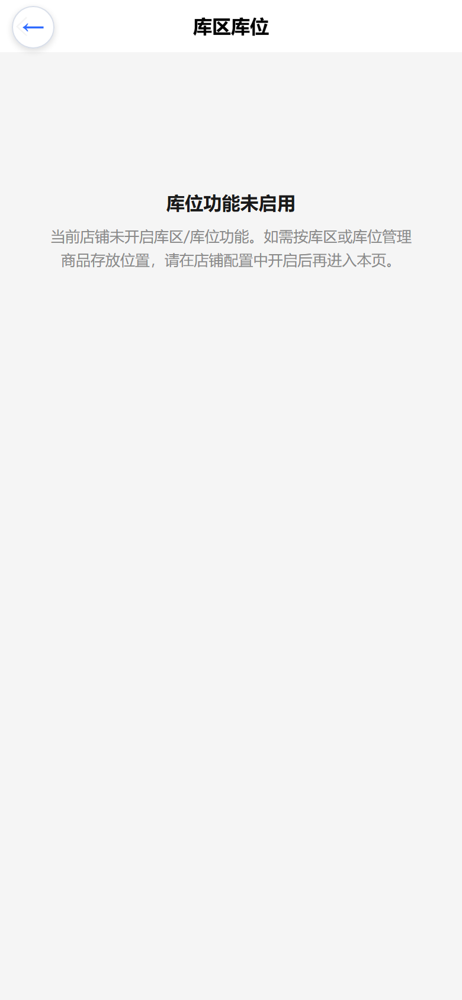
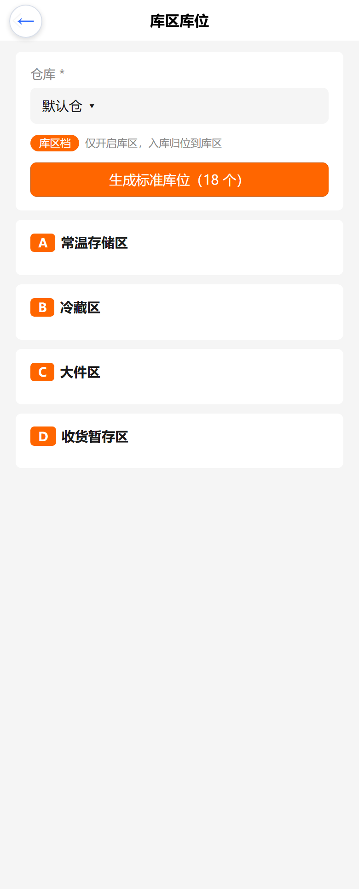
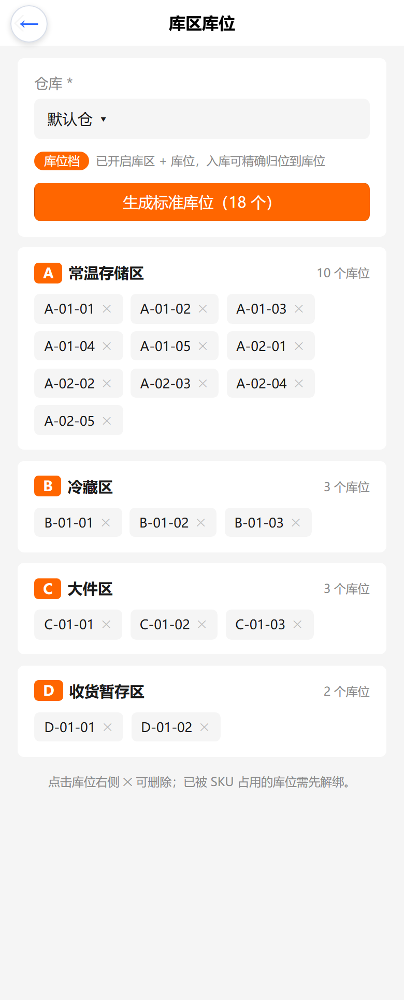
off：整块功能未启用（无网格） / zone：4 个库区卡片 + 库区档标识，无库位格 / bin：库区 + 库位档标识，A 常温 10 · B 冷藏 3 · C 大件 3 · D 收货暂存 2 = 18 格，可单个删除B. 采购入库归位 · 三档对比（同一 SKU 已归位到 A-01-01，三档表现不同）
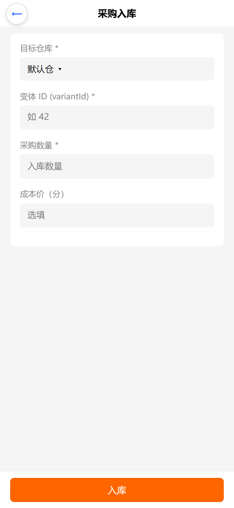
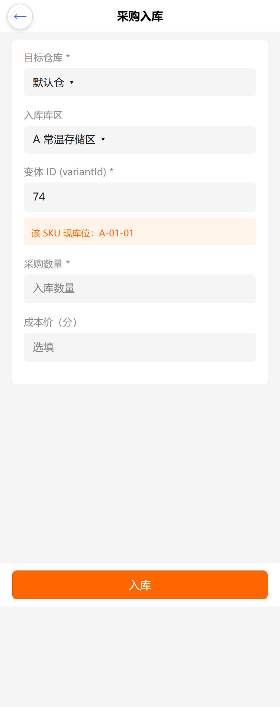
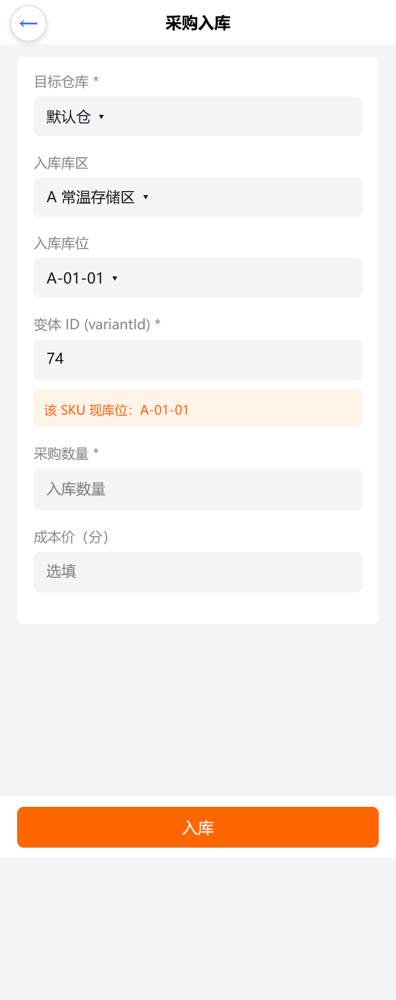
off：不渲染归位控件、也不提示现库位（与改造前一致） / zone：出现「入库库区」选择 + 「该 SKU 现库位」提示 / bin：库区 → 库位两级级联，且提示与预选回填生效C. 配货台列表 · 待配货 / 勾选态 / 新建批次
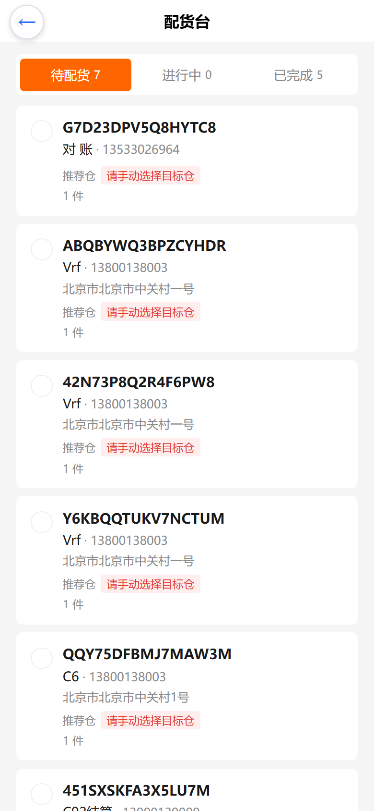
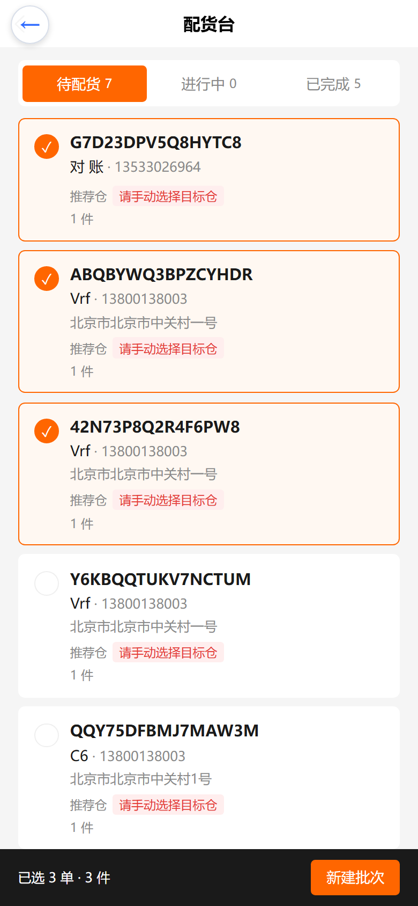
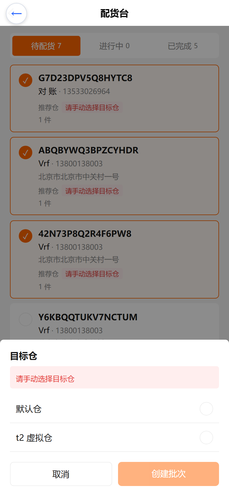
D. 批次详情 · 三档对比（同一批次结构，拣货汇总随档位变化）
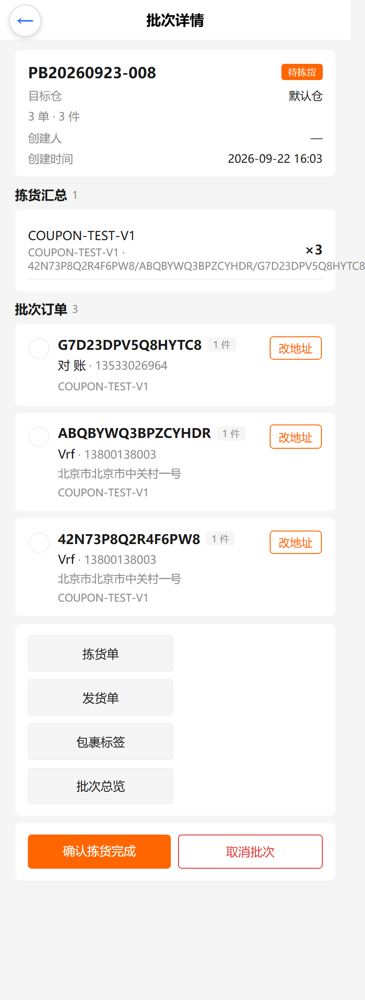
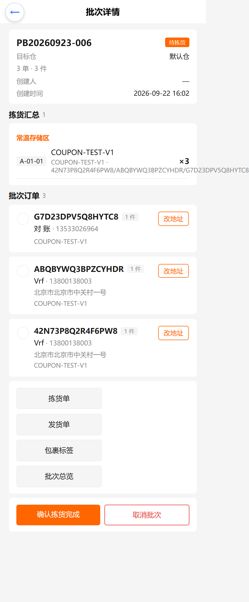
off：只按 SKU 汇总 / zone：增加库区名 / bin：库区「常温存储区」+ 库位格「A-01-01」+ 路径序号。三档均含批次信息、批次订单（可单条改地址）、4 个单据打印入口与「确认拣货完成 / 取消批次」E. 地址编辑 / 进行中页签 / 已完成页签
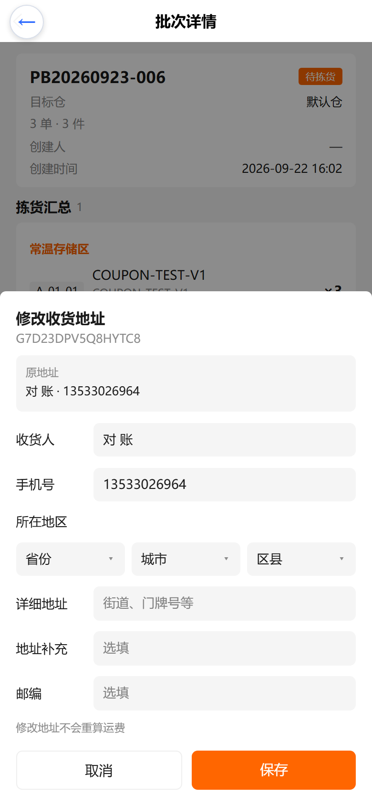
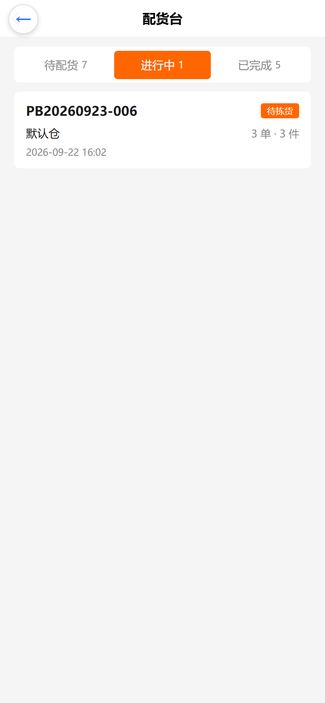
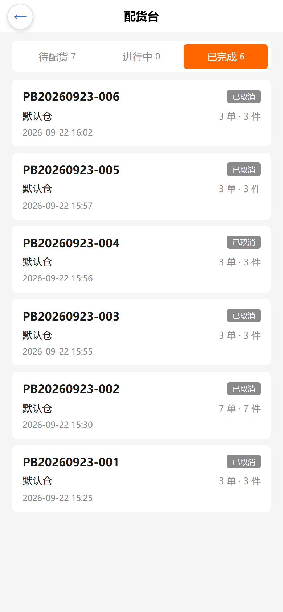
F. 四类单据预览 · bin 档（拣货单含库区/库位列并按库区分组）
G. 拣货单 · 三档门控对比（off 无库位列 / zone 只到库区 / bin 到库位）
off 不出现库位相关列 / zone 出现「库区」列 / bin 出现「库区 + 库位 + 路径序号」并按库区分组H. 其余单据 · zone / off 档留档
故障排查指引
① 库位管理页显示「库位功能未启用」：渠道 binMode 为 off，属预期；在店铺配置里把档位切到 zone 或 bin 即可（切档后必须冷加载页面，hash 路由只改 hash 不会重载）。② 配货台候选为空：候选只列「属于当前渠道」且状态为 PaymentAuthorized/WaitingForShipping 的订单；订单若未分配到本渠道就不会出现（多渠道共用订单时需先把订单加入对应渠道）。③ 批次详情拣货汇总空白：历史原因是商品名为 null 触发非空字段报错，现已回退 SKU；若仍空白，确认后端 lib/ 是否为本轮版本（改 src 必须 npm run build，dev-server 消费的是 lib/）。④ 建批次被拒「订单 #x 已在批次 PBxxx 中」：同一订单不能同时在两个非终态批次，先在原批次里移出或取消该批次。⑤ 发货失败清单不为空：批量发货逐单独立 fulfillment，全部成功才把批次置为已发货，失败行会带原因；注意发货不可撤销，务必确认状态为「单据已打印」后再执行。⑥ 推荐仓显示「请手动选择目标仓」：仓库未配置服务城市或经纬度时无法就近推荐，属数据缺失，手动选仓即可。⑦ 打印无反应：移动端浏览器可能拦截弹窗，系统会走隐藏 iframe 并给出兜底重试入口。
涉及文件：后端 vendure/packages/cjk-plugin/src/——picking/（pick-batch.entity.ts、pick-batch-order.entity.ts、pick-batch-math.ts、pick-batch.service.ts、pick-batch.admin.resolver.ts）、storage/（storage-zone.entity.ts、storage-bin.entity.ts、variant-storage-bin.entity.ts、storage-bin.service.ts、storage.admin.resolver.ts）、bin-mode 渠道自定义字段、stock-doc（入库归位）、plugin.ts（双注册）——只新增 5 张表，不改既有表结构；前端 vshop/web-admin/src/pages/order/picking/{index,batch}.vue、src/pages/inventory/{bins,stock-doc/purchase}/、src/components/picking/*、src/components/common/RegionPicker.vue、src/utils/print/*、src/apis/{picking,storage-bin,channel}.ts、src/composables/{useBinMode,useShipSubmit}.ts、src/constants/menus.ts、src/pages.json、双语语言包。部署：后端本地 npm run build（提交 lib/，那是 git 跟踪的产物）→ 服务器 git pull + pm2 restart vendure；前端本地 npm run build:h5 → node scripts/deploy.mjs（服务器不构建）。回滚：前端产物回退；后端回上一 commit + pm2 restart（新表保留不影响旧代码）；渠道 binMode 改回 off 即关闭全部新入口；订单渠道归属的配套数据可用上文 SQL 删除。
16 多人协同盘库 · 任务 / 盘次 / 差异过账（2026-09-23）
16.1 能力概览
在既有「单人一次性盘库」之上新增任务化协同盘库：任务（一任务一仓 + 盘点活动分组）→ 盘次（按库区拆分，可指派 / 可认领、独占锁定）→ 应盘清单（双源合并：已归位 ∪ 有账面，未归位进单独桶）→ 汇总后一次性人工过账（生成 1 张 ST 单据）。
- 多人协同：盘次被认领后他人无法录入 / 提交（后端拒绝并回传原因）；能盘的人与能过账的人分开（两个权限点）。
- 不同仓库：同一
activityCode在看板合并显示，各仓独立过账。 - 按库存区域 / 按货品：圈范围支持库区 + 分类 + 指定变体清单（专项盘即只用货品维度圈范围）。
- 内部码 / 条形码：扫码先解库位码定位格子，再按内部码 → 条形码 → SKU 顺序命中应盘行；清单外提示登记盘盈。
- 已盘 / 未盘：
countedQty IS NULL判定，进度分母 =expectedCount，未盘项可单独筛出。 - 分批次盘点：一个任务拆多个盘次并行，全部提交后一次性汇总过账。
16.2 后端实现（vendure · cjk-plugin）
| 项 | 内容 |
|---|---|
| 新增表（3） | stocktake_task（任务）/ stocktake_wave（盘次）/ stocktake_line（应盘行）。由 synchronize:true 开机自动建表，未写 migration（遵循项目数据库策略：生产 postgres） |
| 渠道收口 | 三张表均带 tenantChannelId，全部查询按 String(ctx.channelId) 过滤（承接配货台「候选订单跨渠道串入」的教训） |
| 接口注册 | 仅 adminApiExtensions（6 查询 + 10 变更），有意不注册 shop-api（C 端无盘点需求）；回归中已显式断言 shop-api 未泄漏 |
| 权限点 | StocktakeCount（建任务 / 拆盘次 / 认领 / 录入 / 提交）、StocktakePost（过账）。tenant-admin 模板两个都发，「库存」角色只发 StocktakeCount |
| 库位反查（缺口补齐） | 新增两个只读查询：variantBinsByLocation（库位→SKU 明细，分页）与 binOccupancy（全部启用库位占用概览，含空格子，复用既有 binBindCounts()） |
| 盈亏口径 | 按变体汇总：实盘合计 − 仓库当前账面；不逐行相减（盘盈行与应盘行同变体并存时逐行会算两次；与 createStockDoc 的 realQty 覆盖式语义一致） |
| 过账 | 复用既有 StockDoc(type='STOCKTAKE') 通道（≤ 前缀 ST）：差异项传 realQty = 实盘合计；无差异但库位变更的传当前账面 + zoneId/binId（触发 applyBinBinding 顺手归位）；任务转 POSTED 并记 postedStockDocId，重复过账直接拒绝 |
| 构建产物 | dev-server 消费 lib/（main = lib/index.js），改 src 必须 npm run build；提交带 src + lib |
16.3 前端实现（vshop / web-admin）
| 文件 | 职责 |
|---|---|
src/utils/stocktake-grid.ts | 纯函数层：格子宫格归组、进度、行排序 / 筛选、圈范围解析、差异摘要、下一件未盘（node --test 单测） |
src/apis/stocktake.ts | 盘库 6 查询 + 10 变更（照 apis/storage-bin.ts 风格，统一 graphQlErrorMsg） |
src/composables/useStocktakeScope.ts | 盘次上下文（录入页 B 与扫码页 C 共用）：任务 / 盘次 / 应盘行 / 草稿 / 进度 / 独占可写判定 |
src/components/stocktake/ | TaskCard / WaveCard / BinGrid（空格子可见，仅 bin 档渲染格子）/ CountLineRow |
| 页面（5） | 任务看板 stocktake/index、任务详情 stocktake/task、手机录入 stocktake/count（版式 B：库区 → 格子宫格）、扫码快盘 stocktake/scan（版式 C：单件专注）、差异页 stocktake/diff（过账前唯一决策点） |
| 菜单 | MenuItem 增 perm；库存域新增 tier 1「协同盘库」（StocktakeCount 门控）；既有「盘库」改名「快捷盘点」并降为 tier 2，行为不变 |
| 三档门控 | useBinMode 决定录入页形态：off 无库区（整仓单盘次）、zone 到库区、bin 到格子（空格子可见） |
| 扫码 | 复用既有 src/utils/scanner.ts 的 scanCode()，不自写扫码；失败按 MANUAL/CANCEL/FAILED 分流，微信内置恒为手动输入（故页内保留手动输入条） |
16.4 回归测试与证据
后端单测（vitest）：stocktake-math.spec.ts（状态机 / 任务号 / 应盘清单 / 差异汇总 / 扫码解析 / 过账计划）、stocktake.service.spec.ts（独占锁与状态派生）、bin-query.math.spec.ts（分页钳制 / 归属校验 / 占用归并）。
前端单测（node --test）：node --test src/utils/stocktake-grid.spec.ts → 15 用例 / 6 套件全绿。
本地写链路自检：建任务 → 认领 → 录入 → 提交 → 过账 → 库存复位。过账会真实改库存，故只在本机执行，生产绝不执行。以 NF-WATER-500 为例，其账面数量的完整数字链为 1008 →（盘中改账）1013 →（实盘）1012 →（过账后）1012 →（复位）1008，终值已复核等于初值；过账生成的单据为 stockDocId=3。
只读冒烟探针：python scripts/_smoke_stocktake_live.py（本地 dev server localhost:5281 + 后端 localhost:3000、渠道 shop-a、仓 id=1）实测 OK=35 / FAIL=0，退出码 0（PASS，失败 0 项）。覆盖断言如下：
| 组 | 断言 | 本地实测 |
|---|---|---|
| SDL 齐备 | 6 查询 + 10 变更全部注册于 /admin-api | OK |
| 权限点枚举 | StocktakeCount / StocktakePost 可枚举 | OK |
| 数据面可查 | stocktakeTasks 9 条；binOccupancy(loc=1) 18 格（其中空格 16）；variantBinsByLocation 2 条；stocktakeDiff(TK20260924-009) = 应盘 19 / 已盘 1 / 未盘 18 / 盘盈 0 / 差异 1 / 建议复核 false | OK |
| 渠道收口 | shop-a 与 __default_channel__ 两渠道任务 id 零交集（另一渠道 totalItems=0） | OK |
| shop-api 未泄漏 | shop-api 内省结果中不含 stocktake* / binOccupancy / variantBinsByLocation | OK |
| 前端三页可达 | 看板 / 详情 / 差异页可达，且 0 条 JS 异常（0 pageerror / 0 console.error） | OK |
16.5 升级须知
- 老角色不会自动获得新权限点：改的是角色模板，已落库的
Role.permissions数组不会变。需管理员在「角色管理」里重新套用模板或手工勾选StocktakeCount/StocktakePost（本地与生产各确认一次）。 - 库位档位：盘库页形态由渠道
binMode决定（off/zone/bin）；任务会存档建任务时的档位（binModeAtCreate），建任务后改档不影响进行中的任务。切档后必须冷加载页面（hash 路由只改 hash 不会重载，会读到旧档）。 - 本次不做（P1/P2）：周期轮盘（排期）、多轮复盘留痕、库位级账目分摊、差异导出、库位偏差统计。差异页与手册均已注明。
- synchronize 建表：三张新表随服务启动自动创建，无需手工执行 SQL。
- 过账不可撤销：过账会真实改写库存并生成 ST 单据，属一次性人工动作，操作前务必先看差异页并确认「跳过 N 项未盘」。
16.6 验收结论（手机 390×844 dpr=2）
本地实测（dev server localhost:5281 + 后端 localhost:3000，渠道 shop-a，仓 id=1，档位 off → zone → bin 三档轮测）：① 看板四个页签（全部 / 盘点中 / 待过账 / 已结束）与仓库筛选、活动码分组正常，任务卡显示进度（已盘 2/19）与盘次提交数（1/2）；② 新建任务抽屉字段完整（仓库 / 任务名称 / 盘点活动码 / 圈定库区 / 圈定分类 / 指定变体 ID / 包含账面为 0 的变体 / 按库区自动拆盘次）；③ 任务详情显示盘次四要素与未归位桶（已盘 0/17）；④ 认领后出现「进入录入 / 释放 / 指派 / 取消盘次」；⑤ 录入页三档形态正确：bin 档 4 个库区 Tab + 10 个格子（含空格子，并标注「本库区 SKU 2 项 · 空格 8 个」）、zone 档 4 个库区 Tab 且 0 个格子、off 档无库区无格子（提示「本仓未启用库区，直接按清单录入」，19 行全量）；⑥ 扫码快盘为单件专注视图（大号 SKU / 账面 200 / 库位 A-01-01 / ±1 / 上一件 / 确认并下一件 / 跳过），并有手动输入条兜底；⑦ 录入保存后进度条走满、两行标绿「已盘」（201 / 101）；⑧ 差异页四宫格 19 / 2 / 17 / 0、未盘清单可展开勾选、任务尚未全部提交时过账按钮置灰并给出阻塞原因；⑨ 全流程无 JS 运行时异常。演示数据全部用可逆闭环（建任务 → 指派 / 认领 → 录入 → 提交 → 取消任务）完成，本地与线上均未执行 postStocktake（过账会真实改库存），收尾 binMode 已还原 off。
线上复验（生产 e.joho.cn/guanli，渠道 t2 / 默认仓 id=3）
① 部署：本地构建 + node scripts/deploy.mjs（cwd web-admin，服务器只解压不构建）→ 产物校验通过 45964 KB → scp 到 /opt/1panel/apps/openresty/openresty/www/sites/e.joho.cn/guanli → 备份轮转 + nginx reload → deploy done。
② 只读冒烟探针：python scripts/_smoke_stocktake_live.py（默认即指向生产）→ PASS（失败 0 项），退出码 0：8 查询 + 10 变更全部注册于 /admin-api；两个权限点可枚举；stocktakeTasks 18 条；binOccupancy(loc=3) 18 格（其中空格 17）；stocktakeDiff(TK20260924-018) = 应盘 1 / 已盘 0 / 未盘 1 / 盘盈 0 / 差异 0 / 建议复核 false；shop-api 未泄漏盘库字段 为 OK；看板 / 详情 / 差异三页可达且 0 条 JS 异常。渠道收口一项为 SKIP——生产登录账号只属于 t2，探针取不到可比渠道，此时显式跳过而不虚报 OK；该断言在 Task 8 已用显式渠道令牌在生产验证（8/8 PASS：t1 与 __default_channel__ 各自 totalItems=0，跨渠道直查该任务被拒「盘点任务 #1 不属于当前店铺」）。
③ 线上手机截图：WA_SHOT_LIVE=1 python _e2e/_shot_stocktake.py → 8 张 stocktake_live_*_390.png（见 16.7 的 K 组），0 pageerror / 0 console.error。线上录入页实测 库区 Tab=4 / 格子=10（A-01-01 有件、其余 9 格空）/「本库区 SKU 1 项 · 空格 9 个」；差异页四宫格 20 / 0 / 20 / 0 且过账按钮置灰（红字「任务尚未全部完成盘点（需所有盘次已提交），暂不可过账」）。
④ 写入边界：线上唯一写入 = 建 1 个演示任务 TK20260924-019（应盘 20 / 2 盘次）+ 可逆切档 binMode（off → bin → off）；任务建后立即取消（CANCELLED），未认领 / 未录入 / 未提交。线上绝不调用 postStocktake（过账会真实改库存）。生产账号在 t2 无 tenant_member 行，owner 锁本就会拒绝对盘次的写入（与 Task 12/13 同一环境限制，见偏差 #20/#35），故线上截图刻意只覆盖只读态。
16.7 验收截图（共 25 张：本地 17 + 线上 8）
A–J 组为本地 dev server 真实效果，K 组为生产 e.joho.cn/guanli 真实效果（均为 390×844、dpr=2，输出 780×1688）。页面一律冷加载后抓取（hash 路由不重载，切档位后必须重新加载才能读到新档）。
A. 任务看板 · 首屏 / 空态 / 新建任务抽屉
B. 任务看板（bin 档）与任务详情 · 盘次四要素 + 未归位桶
C. 盘次被认领后的操作位
D. 录入页（版式 B）· bin 档：库区 Tab + 格子宫格（空格子可见）+ 选中格子
E. 扫码快盘（版式 C）· 单件专注 + 手动输入兜底
scanCode()）F. 录入保存后 · 进度走满 + 已盘绿标
G. 差异页 · 过账前唯一决策点（四宫格 / 未盘清单 / 阻塞原因）
H. 任务详情 · 已提交盘次与待认领盘次并存
I. 三档门控对比 · zone 档与 off 档录入页
zone：有 4 个库区 Tab 但 0 个格子（只到库区，不暴露库位码） / off：无库区无格子，提示「本仓未启用库区，直接按清单录入」，清单为整仓 19 行J. 收尾证据 · 演示任务全部取消
binMode 已还原 offK. 线上生产 e.joho.cn/guanli（bin 档，演示任务 TK20260924-019，建后即取消）
TASK13-SCAN，全部「已取消」），右下「＋新建盘点任务」 / 线上新建任务抽屉（仓库* / 任务名称* / 盘点活动码 / 圈定库区 A B C D / 圈定分类 / 指定变体 ID / 包含账面为 0 的变体 / 按库区自动拆盘次）TK20260924-019：默认仓 / 活动 ACT-2026-09-24 / 应盘 20 / 2 个盘次，均「待认领」）/ 线上差异页：四宫格 20 应盘 / 0 已盘 / 20 未盘 / 0 盘盈、「差异」区「暂无差异」、红字阻塞「任务尚未全部完成盘点（需所有盘次已提交），暂不可过账」且过账按钮置灰COUPON-TEST-V1（账面 0） / 点选 A-01-01 后格子描边高亮 / 线上扫码快盘页（单件专注：大号 SKU / 账面 / 库位 / ±1 / 上一件 / 确认并下一件 / 跳过 / 扫码定位 / 手动输入）TK20260924-019 已落入「已结束」为已取消；binMode 已由脚本还原 off（off → bin → off），全程 0 pageerror / 0 console.error故障排查指引
① 录入页看不到库区 / 格子：渠道 binMode 为 off 时属预期（整仓单盘次）；切到 zone/bin 后必须冷加载页面，hash 路由只改 hash 不会重载。zone 档只到库区、不显示库位格，属设计语义。② 录入页只有一部分行：默认筛选是「未盘」，切「全部」才能看到已盘行。off 档会展示整仓清单，zone/bin 档按库区 / 未归位桶分块。③ 提交 / 释放报「盘次 #x 已提交或已取消，无法再修改」：盘次状态机为 OPEN → CLAIMED → COUNTING → SUBMITTED，提交后不可释放（CANCELLED 任意非终态可入）。④ 他人录入被拒：盘次独占，须先认领或由主管指派。⑤ 过账按钮置灰：需任务下所有盘次已提交；未盘项还需显式勾选「确认跳过 N 项未盘」。⑥ 菜单里没有「协同盘库」：菜单受 StocktakeCount 门控，且老角色不会自动获得新权限点——见 16.5，需重新套用角色模板或手工勾选。⑦ 改后端不生效：dev-server 消费 lib/，改 src 必须 npm run build。⑧ 列 / 列表页看不到盘库字段：盘库接口仅注册 admin-api，C 端 shop-api 有意不提供，属预期。
涉及文件：后端 vendure/packages/cjk-plugin/src/——stocktake/（stocktake-task.entity.ts、stocktake-wave.entity.ts、stocktake-line.entity.ts、stocktake-math.ts、stocktake.service.ts、stocktake.admin.resolver.ts、bin-query.*）、plugin.ts（仅 admin 注册）、角色模板与 StocktakeCount / StocktakePost 权限点——只新增 3 张表，不改既有表结构；前端 vshop/web-admin/src/pages/inventory/stocktake/{index,task,count,scan,diff}.vue、src/components/stocktake/{TaskCard,WaveCard,BinGrid,CountLineRow}.vue、src/apis/stocktake.ts、src/composables/useStocktakeScope.ts、src/utils/stocktake-grid.ts、src/composables/useBinMode.ts、src/constants/menus.ts、src/pages.json、双语语言包。回归资产：scripts/_smoke_stocktake_live.py（只读冒烟探针，本地 / 线上共用）、_e2e/_shot_stocktake.py（手机视口截图，可逆闭环）。部署：后端本地 npm run build（提交 lib/，那是 git 跟踪的产物）→ 服务器 git pull + pm2 restart vendure；前端本地 npm run build:h5 → node scripts/deploy.mjs（服务器不构建）。回滚：前端产物回退；后端回上一 commit + pm2 restart（新表保留不影响旧代码）；过账生成的 ST 单据需按 stockDocId 手工冲正（过账不可自动撤销）。
16.8 交付总结报告（Task 16 · 2026-09-25）
本节为 Task 16「回归探针 + 手机截图 + 手册 + 部署」的交付总结。验收口径沿用项目硬规范：功能交付 = 实现 + API/e2e 回归 + 手机视口截图 + 操作手册/测试用例文档。结论：已完成并通过验收（本地回归全绿 / 线上只读复验通过 / 生产零不可逆写入）。
| 项 | 内容 |
|---|---|
| 任务范围 | Task 16 = ①只读冒烟探针 ②手机视口截图 ③操作手册第 16 章 ④生产部署 ⑤执行结果与偏差回填。计划 Task 0–16 已全部闭环 |
| 验收结论 | ✅ 已完成 —— 本地探针 OK=35/FAIL=0；线上探针 PASS 0 项失败；25 张手机截图逐图核对；手册 16.1–16.8 齐备；部署 deploy done |
| 执行日期 | 构建/部署/线上复验 2026-09-24；报告归档 2026-09-25 |
| 计划文档 | vshop/web-admin/docs/superpowers/plans/2026-09-23-stocktake-collab-plan.md（执行结果表 Task 16 行 + 偏差说明区 #46–#51） |
16.8.1 交付物清单
| 类别 | 交付物 | 位置 |
|---|---|---|
| 回归探针 | 只读冒烟脚本：8 查询 + 10 变更注册、权限点枚举、数据面可查、渠道收口、shop-api 未泄漏、三页可达 0 JS 异常 | scripts/_smoke_stocktake_live.py |
| 截图脚本 | 手机视口 390×844 dpr=2，含 WA_SHOT_LIVE=1 线上只读分支；全程可逆、无过账路径 | _e2e/_shot_stocktake.py |
| 操作手册 | 本手册第 16 章（16.1–16.8）+ 目录锚点 + 页脚 | docs/webadmin-bugfix-manual/webadmin-bugfix-manual.html |
| 手机截图 | 25 张（本地 17 + 线上 8），780×1688 像素 | src/static/manual/shots/ + docs/webadmin-bugfix-manual/assets/ |
| 缺陷修复 | zone 档录入页误渲染库位格子（违反规格 §8.2）→ BinGrid 补 showCells，仅 bin 档出格子 | src/components/stocktake/BinGrid.vue、src/pages/inventory/stocktake/count.vue |
| 生产部署 | 后台 https://e.joho.cn/guanli/，产物校验 45964 KB | scripts/deploy.mjs（本地构建 → 服务器只解压） |
16.8.2 回归证据
① 只读冒烟探针（唯一可选写入由 WA_SMOKE_SETMODE 控制，默认关）：
| 环境 | 结果 | 关键数据 |
|---|---|---|
本地（后端 localhost:3000 + dev server 5281，渠道 shop-a、仓 id=1） | OK=35 / FAIL=0，退出码 0 | 渠道收口实测通过：channel=__default_channel__ totalItems=0 交集=[]；binOccupancy(loc=1) 18 格 / 空格 17 |
线上（e.joho.cn/guanli，渠道 t2、仓 id=3） | PASS（失败 0 项） | stocktakeTasks totalItems=18；binOccupancy(loc=3) 18 格 / 空格 17；stocktakeDiff(TK20260924-018) = 应盘 1 / 已盘 0 / 未盘 1 / 盘盈 0 / 差异 0 / 建议复核 false；shop-api 未泄漏盘库字段 OK；看板页签 4、三页可达、pageerror = 0（唯一 console.error 为 ERR_CONNECTION_CLOSED 网络抖动，非页面异常） |
线上「渠道收口」断言如实记为 SKIP（非 OK 非 FAIL）：生产登录账号 guoxinnanshan@163.com 的 myTenantAccess.channels 只含 t2，取不到可比渠道，不虚报 OK；该断言由 Task 8 在生产用显式渠道令牌（t2 / t1 / __default_channel__）验证 8/8 PASS 覆盖。
② 前端单测：node --test src/utils/stocktake-grid.spec.ts → 15 用例 / 6 套件全绿（计划原稿写 13，属计数笔误，以实测为准）。
③ 类型检查：npx vue-tsc --noEmit -p tsconfig.json 全仓基线 1453 处报错（与 Task 15 同基线，本轮零新增源文件）。
16.8.3 手机视口截图（共 25 张，逐图肉眼核对）
| 组 | 数量 | 覆盖内容 |
|---|---|---|
本地 stocktake_*_390.png | 17 | 看板（首屏 / 空态）、新建弹窗、任务详情（OPEN / 已指派）、录入页（只读 / zone 选中 / bin 选中 / 可录入）、扫码（只读 / 命中库位 / 手动输入 / 盘盈 / 无效码）、差异页（摘要 / 跳过勾选 / 过账完成） |
线上 stocktake_live_*_390.png | 8 | board / new_sheet / task / count / count_grid_sel / scan / diff / done —— 另用 stocktake_live_* 命名，不覆盖本地证据 |
线上核对要点：看板 4 页签（全部 / 盘点中 / 待过账 / 已结束）；录入页库区 Tab A/B/C/D + 10 格（A-01-01 有 1 件）+「本库区 SKU 1 项 · 空格 9 个」+ 未认领红字提示；差异页 20 应盘 / 0 已盘 / 20 未盘 / 0 盘盈 + 过账按钮置灰 + 红字「任务尚未全部完成盘点（需所有盘次已提交），暂不可过账」；0 pageerror / 0 console.error。详见 16.7 K 组。
16.8.4 生产部署与写入边界
| 项 | 内容 |
|---|---|
| 部署命令 | node scripts\deploy.mjs（工作目录 = vshop/web-admin）→ uni build → 产物校验 45964 KB → scp → 服务器解压 + 备份轮转 → nginx syntax is ok + reload → deploy done |
| 部署铁律 | 本地构建，服务器只解压 + reload，绝不在服务器构建（服务器内存不足） |
| 写入边界 | 线上唯一写入 = 建演示任务 TK20260924-019（已 cancelStocktakeTask → CANCELLED）+ 可逆切档 binMode off → bin → off（已复核回 off）；未认领、未录入、未提交、全程未调 postStocktake |
16.8.5 残留数据与清理
- 生产：
TK20260924-001..019全部CANCELLED（含 Task 8 / 11 / 12 / 13 / 16 各轮演示任务）。 - 本地：
TK20260924-005..009落POSTED（Task 14 过账终态，本地库留档，不可取消）；TK20260924-010..016CANCELLED。 - 已清理：临时日志 5 个（
_t16_*.log、_tsc16.log）；构建产物Remove-Item -Recurse -Force dist\build\h5+git restore dist，工作区无残留。
16.8.6 提交记录
| 哈希 | 类型 | 内容 |
|---|---|---|
f5831d8 | fix | zone 档录入页不再渲染库位格子（BinGrid 增 showCells，仅 bin 档出格子） |
fd8072e | test / docs | 只读冒烟探针 + 手机视口截图（本地 17 + 线上 8）+ 手册第 16 章（53 files changed, +764 / −1） |
a026c8b | docs | 回填计划执行结果表 Task 16 行 + 偏差说明区 #46–#51 |
16.8.7 已知边界与风险（本轮不阻塞，留待后续决策）
① autoSplitByZone 无实际效果（计划偏差 #40）：后端 createTask 从未消费该入参，只要应盘行有库位归属仍会拆出 zone 盘次 + unassigned 盘次（实测传 false 仍得 2 个盘次）。看板「按库区自动拆盘次」开关当前与行为无关。
② 前端未做按钮级权限置灰（计划偏差 #45）：「录入与提交按 —— 已于 2026-09-25 补齐：三页按 StocktakeCount 收口」实际只落菜单门控 + 服务端权限点（10 个 mutation）+ 盘次 owner 锁三层兜底；stocktake/index.vue / count.vue / scan.vue 未按权限置灰按钮。StocktakeCount 置灰，详见 16.9。
③ 生产写入正例不可演示（计划偏差 #35 / #39）：生产登录账号在 t2 无 tenant_member 行 → 认领 / 录入 / 提交 / 过账均被 owner 锁如实拒绝（该拒绝 toast 本身即错误路径证据）。写入链路已由 Task 7 本地写链路探针（fixture）全 PASS 覆盖。
④ 过账不可自动撤销：过账生成的 ST 单据需按 stockDocId 手工冲正；因此本轮生产复验刻意不触发过账。
本轮新增偏差 6 条（计划偏差说明区 #46–#51）：脚本工程化改造（环境变量化 + shop-api 直连 + 线上只读分支）/ zone 档渲染缺陷 / 单测计数以实测为准 / 部署命令工作目录纠正 / 线上渠道收口如实记 SKIP / 提交拆 fix + test-docs 两条并补目录锚点。
16.9 追补：autoSplitByZone 生效 + 三页按钮级置灰（2026-09-25 · 偏差 #40 / #45）
针对 16.8.7 中如实登记的 ① ② 两项已知边界，本轮已补实现并回归（计划偏差说明区 #52 / #53）。两处均为行为变更，升级后需按本节重新验收。
16.9.1 建任务开关「按库区自动拆盘次」现已生效（偏差 #40）
| 项 | 内容 |
|---|---|
| 改动 | 后端 buildExpected 增可选入参 autoSplitByZone；createTask 透传 input.autoSplitByZone !== false（提交 ad084e016，含编译产物 lib/） |
| 语义 | 关闭（false）= 整仓只出一个 whole 盘次；行仍保留库位归属（zoneId/binId 照旧写入），故录入页的格子宫格与未归位桶照常可用。缺省 / 打开（true）= 按库区拆 zone:{id} 盘次 + unassigned 未归位桶 |
| 单测 | npx vitest --config vitest.config.mts --run src/stocktake/stocktake-math.spec.ts → 28 tests passed（新增 2 个对照用例：关闭时 1 个 whole 盘次且带库位 / 缺省与显式 true 时仍按库区拆） |
| 接口实测 | 本地探针 8/8 PASS：关闭 → 任务 TK20260925-002 waveCount=1（whole, 19 行）；打开 → TK20260925-001 waveCount=2（zone A 2 行 + unassigned 17 行）；两态应盘总数一致 19 / 19（证明只改拆分、不改清单） |
| 界面实测 | 手机视口 390×844 dpr=2：新建任务抽屉开关默认勾选 → 点一下变未勾选；任务详情里「打开」看到 2 个盘次、「关闭」只看到 1 个「整仓」盘次（已盘 0/19） |
16.9.2 录入 / 扫码 / 看板三页已按权限置灰（偏差 #45）
补齐后权限兜底由三层变四层：① 菜单门控（无 StocktakeCount 看不到入口）→ ② 前端按钮级置灰（本轮新增）→ ③ 服务端权限点（10 个 mutation 全部 @Allow('StocktakeCount')）→ ④ 盘次 owner 锁。
- 看板页：顶部红字「无盘点权限，仅可查看」；右下「＋新建盘点任务」置灰（
opacity .5）且点击不打开新建抽屉；提交按钮disabled。 - 录入页 / 扫码页：实盘输入框
disabled、「保存 / 提交」「确认并下一件」置灰；提示按分因给出——先判「无盘点权限，录入与提交已置灰」，再判「请先在任务详情页认领该盘次」，最后才是「本仓未启用库位」。 - 服务端仍拦：受限账号直连
/admin-api调createStocktakeTask仍返回FORBIDDEN: You are not currently authorized to perform this action——前端置灰只是体验层，越权仍由服务端拦。 - 中英词条各新增 3 条（
stocktake.board.noPermission/stocktake.count.noPermission/stocktake.scan.noPermission）。
改动文件（前端提交 d336df9）：src/composables/useStocktakeScope.ts（新增 canCount 并并入 canEdit）、src/pages/inventory/stocktake/{index,count,scan}.vue、src/locale/{zh-Hans,en}.json。
16.9.3 追补验收截图（7 张，本地 dev server，390×844 dpr=2 → 780×1688）
L. 偏差 #40：开关两态
M. 偏差 #45：受限账号三页置灰（服务端同时仍拒）
16.9.4 追补的提交与收尾
| 哈希 | 仓库 | 类型 | 内容 |
|---|---|---|---|
ad084e016 | vendure | fix | 建任务开关 autoSplitByZone 生效（false = 整仓单盘次）+ 2 个对照单测 + 编译产物 lib/（8 files changed, +114 / −6） |
d336df9 | vshop | fix | 三页按 StocktakeCount 按钮级置灰 + 提示分因 + 中英各 3 词条（6 files changed, +37 / −11） |
| 本条提交 | vshop | docs | 手册 16.9 + 7 张追补截图 + 计划执行结果「16 续」行 + 偏差 #52–#54 |
收尾：本地演示任务 TK20260925-001..008 全部 CANCELLED；临时受限成员 / Administrator 本体 / 临时角色已删除；渠道 binMode 已由脚本还原 off。全程未调 postStocktake（不改库存）。类型检查基线：npx vue-tsc --noEmit -p tsconfig.json 本轮 1456 处（$t 类 1372 / 非 $t 类 84，非 $t 类全部落在既有基线文件），四个改动文件仅 $t-in-template 一类、useStocktakeScope.ts 零报错（见偏差 #54）。
16.9.5 生产部署与线上复验（2026-09-25）
| 环节 | 命令 / 动作 | 结果 |
|---|---|---|
| 后端推送 | git push origin master | b51f8534c..ad084e016，本地与 origin 同步 |
| 后端部署 | cd /www/apps/vendure && git pull --ff-only && pm2 restart vendure | Fast-forward 8 files（+114 / −6，含 lib/）；pm2 id 3 online，pid 3194758；https://e.joho.cn/admin-api → 200 |
| 前端部署 | node scripts/deploy.mjs（cwd web-admin） | 产物校验通过 47362 KB → scp → 服务器解压 deploy done → nginx test is successful + reload；站点 516 个文件、备份 3 份、https://e.joho.cn/guanli/ → 200 |
| 新代码上线校验 | 线上站点目录 grep | 无盘点权限 命中 1 个 asset（i18n）、StocktakeCount 命中 4 个 asset（收口点 + 看板 / 权限点） |
| 线上复验（可逆） | 渠道 t2、仓 3 默认仓，建 2 个演示任务后立即取消 | 关闭 → TK20260925-001 waveCount=1（whole, 20 行）；打开 → TK20260925-002 waveCount=2（zone A 1 行 + unassigned 19 行）；两态应盘总数一致 20 / 20 |
| 收尾 | — | 两任务均 CANCELLED、无残留非终态任务；binMode off→bin→ 已还原 off；全程未认领 / 未录入 / 未提交 / 未过账（未改库存）；临时复验脚本已删除 |
线上 #45 取证如实记 SKIP（本轮未在生产新建账号）：零写入探针实测该生产账号的租户侧建号链路全部被拦——myTenantRoles 正常返回，但 createTenantAdministrator / deleteTenantAdministrator / tenantAdministrators 均 FORBIDDEN；仅核心 Vendure 的 createAdministrator / deleteAdministrator 权限通过。也就是说要拿「生产端受限账号」的界面截图，只能在生产新建一个真实管理员账号（用完再删）。按「生产只读」基线，本轮不建号，改以「本地受限账号三页截图（16.9.3 M）+ 线上 asset 命中 + 站点 200」作为 #45 的生产侧证据；探针全程零写入，无任何残留数据。
结论：#40 在后端上线后于生产端到端生效——同一仓库、同一时点，仅切换「按库区自动拆盘次」即可从 1 个整仓盘次变为 2 个（库区 + 未归位桶），且应盘清单总数不变，证明该开关只影响盘次拆分、不影响行快照。#45 由「线上 asset 含权限代码 + 站点 200」佐证（界面截图见 16.9.3 M）。
注：vshop 仓库本地领先的 26 个提交（含 d336df9 / 0674455）已一并推送，d2d9feb..0674455 master -> master。
16.9.6 OFF 档端到端回归 + 正向路径复跑（2026-09-25）
16.9.3 的 L / M 只覆盖「开关两态」与「受限账号置灰」。本轮补上关闭拆分时的整条链路，把「建任务 → 认领 → 录入 → 保存 → 提交 → 差异」全跑到终态，验证 16.9.1 里「关闭时行仍带库位归属」的结论在界面上同样成立（而不只是接口字段）。
| 环节 | 动作 | 结果 |
|---|---|---|
| 前置 | 渠道 binMode 由 off 切到 bin（库位功能打开） | 格子宫格渲染条件成立 |
| 建任务 | autoSplitByZone=false → 任务 TK20260925-009 | 1 个 whole 盘次、19 应盘行（行仍带库位） |
| 认领 + 录入 | claimStocktakeWave → 录入页填 2 行 → 保存 | countedCount=2、盘次 COUNTING |
| 提交 | 点「提交」→ 二次确认弹窗点「确定」 | 盘次 SUBMITTED |
| 差异页校验 | 摘要四宫格 + 未盘项折叠 + 差异表 | 19 应盘 / 2 已盘 / 17 未盘 / 0 盘盈；未盘项给出「确认跳过 17 项未盘」；差异表两行 TS-NUT-1KG 1009/200（+809）、XM-BAND-8-STD 201/100（+101）；过账按钮按「未盘未确认」正确置灰 |
| 扫码页 | 关闭拆分下打开扫码页 | 输入框与「确认并下一件」可用——不受 scopeType=whole 影响（showZone 取自渠道 binMode） |
| 脚本自检 | Playwright DOM 计数 + 状态断言 | FAIL=0、JS 异常 0（禁用态断言：qtyDisabled=false / mainDisabled=false，即按钮确实可用而非置灰） |
| 单测复跑 | npx vitest --config vitest.config.mts --run src/stocktake/ | 32 tests passed（stocktake-math 28 + entities 4） |
| 收尾 | 取消任务 + binMode 还原 off | 无残留非终态任务；全程未过账（未改库存） |
N. OFF 档（关闭拆分）端到端：录入页 → 保存后 → 扫码页 → 差异页
TS-NUT-1KG 1009/200、XM-BAND-8-STD 201/100），过账按钮置灰4 张截图均为本地 dev server、手机视口 390×844 dpr=2（780×宽，长图按内容自适应），已在 docs/webadmin-bugfix-manual/assets/ 与 src/static/manual/shots/ 两处同步。回归脚本为一次性临时脚本，跑完即删。
16.9.7 线上使用手册同步「多人协同盘库」（2026-09-25）
16.9.6 之前，线上发布的手册里只有 op-23 第 4 节的单人盘库，协同盘库（任务 / 盘次 / 差异过账）与库位相关内容完全没有（对 src/static/manual/index.html grep 协同盘库 / 库位 均 0 命中）。本节把该能力以用户向表述补进线上手册。
先厘清一件事：仓库里有两份不同的文档，本轮同步的是前者，本手册（16 章）不发布到线上——服务器 /guanli/static/manual/ 下只有 index.html：
① src/static/manual/index.html《youshop 使用手册》，单文件 JS 数据驱动（var BOOKS={op,mp,cx} + var CHAPTERS=[{book,id,title,html}]），目录 / 搜索 / 上下章导航全部由 JS 自动生成，新增章节无需手工维护目录；
② docs/webadmin-bugfix-manual/webadmin-bugfix-manual.html《vShop Web-Admin 修复操作手册》（即本文），面向开发/交付，仅存档于仓库。
| 环节 | 动作 | 结果 |
|---|---|---|
| 新增章节 | 在 op-37 与 mp-1 之间插入 op-38「多人协同盘库（任务 / 盘次 / 差异过账）」 | 9 个小节：一句话流程 / 入口与权限 / 建任务（含「按库区自动拆盘次」开关两种选法）/ 认领与指派 / 手机录入（库区页签 + 格子宫格 + 未归位）/ 扫码快盘 / 差异复核与过账（三个口径）/ 与「库存单据 → 盘库」选型 / 6 条 FAQ |
| 截图引用 | 复用已有手机截图，图号取未占用的 H1–H11 | t45_board_no_permission_390（无权限看板）、t40_new_sheet_split_on_390、t40_task_waves_{on,off}_390、t11_assign_sheet、t12_count_editable_{zone_uncounted,binpicked,unassigned}、t13_scan_editable、t14_diff_{summary,uncounted_expanded} 共 11 张 |
| 语法校验 | node 提取内联 <script> 后 new Function(code) 解析 | script tags 1 / 1，解析通过（模板字符串未破、无 ${） |
| 渲染验证（本地） | python _e2e/_verify_manual_op38.py local（Playwright，390×844 dpr=2） | 章节总数 53、op-38 在 CHAPTERS 中、无重复 id；目录 40 项且含「多人协同盘库」；正文 9 个 h3 齐全；11 张图全部加载（naturalWidth>0，broken=[]）；console / pageerror 0 → PASS |
| 本地构建 + 部署 | node scripts/deploy.mjs（cwd web-admin） | 产物校验通过 48191 KB → scp → 服务器解压 deploy done → nginx test is successful + reload |
| 部署前一致性核对 | 比对线上与本地入口哈希 | 线上 assets/index-B_AK2Eb5.js == 本地 dist，应用产物未变，本轮线上差异仅静态手册目录 |
| 线上复验 | python _e2e/_verify_manual_op38.py live + curl -I | https://e.joho.cn/guanli/static/manual/：op-38 显示为第 40 章，目录收录、9 小节齐全、11 张图无破图、JS 异常 0 → PASS；Cache-Control: no-cache, no-store, must-revalidate，Content-Length 139623 → 151468；H1 图 URL → 200 |
| 收尾 | 验证截图移出发布目录 + 清理服务器残留 | 首屏截图存 docs/webadmin-bugfix-manual/assets/manual_op38_{preview,live}_390.png；发布目录 shots/ 内 2 张临时图已 rm（现 404），线上手册与 H1 图均 200 |
| 提交与推送 | git push origin master | 47e4083..4ea6a19：6ed0791 docs(manual): 线上使用手册新增 op-38 多人协同盘库、4ea6a19 build(web-admin): 重新构建以收录线上手册 op-38 与 t41 OFF 档截图 |
O. 线上手册 op-38 渲染级验证（本地预览 / 线上复验 / 常驻门禁）


file:// 预览（标题「40. 多人协同盘库（任务 / 盘次 / 差异过账）」+ .flow 流程图 + 权限表与图 H1）；右：线上 e.joho.cn 复验首屏——与本地渲染逐像素一致补充说明：线上手册是单文件数据驱动，章节序号由 renderReader() 按「本书内序号 + 1」实时计算（故 op-38 显示为第 40 章，op 书现有 40 章），不需要改动封面、目录或任何计数器；后续再追补章节只需往 CHAPTERS 数组里加一条对象即可。
O.1 常驻门禁（2026-09-25 升级：旧一次性脚本并入统一门禁）
此前 op-38 的渲染验证靠一次性脚本 _e2e/_verify_manual_op38.py（local|live 两模式），存在四处「假通过」缺口：退出码恒 0（断言失败也返回 0）、图数用 >= 11 放宽、无响应码 / 像素尺寸 / 双落点字节断言、取证截图写进发布目录 shots/（复跑会污染线上静态目录）。本轮把 op-38 断言组并入统一渲染门禁 _e2e/_verify_manual_render.py，旧脚本删除（避免两份真相）；一条 npm run verify:manual:render 同时覆盖 op-38 与 op-39，退出码 1 即失败。
门禁契约（手机视口 390×844 dpr=2，图片天然尺寸 780×1688）：
| 层 | 断言组 | 判定 |
|---|---|---|
| L1 离线 （ file://，不依赖网络与登录） | openChapter('op-38') 渲染成功 | CHAPTERS 中标题存在且注入 #readerContent（实测「40. 多人协同盘库（任务 / 盘次 / 差异过账）」） |
| L1 | 结构计数 | h3 小节 = 9、FAQ <details> = 6（精确等值） |
| L1 | 图数 + 真解码 | 图数 = 11（精确，非 >=）；每图 complete 且 naturalWidth>0；每图 780×1688 |
| L1 | 反假 | 0 pageerror / 0 console.error |
| L2 线上 （ e.joho.cn 真实链路） | 同 L1 全组 | 结构计数 + 图数 + 真解码 + 尺寸 + 0 JS 异常（op-38 与 op-39 各一套） |
| L2 | 资源响应码 | 每张 PNG 200（op-39 按文件名前缀 stocktake-ops-；op-38 图名无统一前缀，按「本章 11 个文件名」过滤——线上手册空闲时会预加载全册图片，实测 166 个 shots/ 响应，故不按命中数断言，改成过滤后仍要求 11 张全 200） |
| L2 旁路 | 字节一致 | 线上 shots/<name> 与本地 src/static/manual/shots/<name> 逐张字节数相等（防缺图 / 旧图 / 静默替换） |
| 反假三重保障 | 汇总行 + 非 0 退出码 + 取证图落点 | ===== 渲染级验证：PASS/FAIL（失败 N）===== 显式失败明细；失败 exit 1；取证截图写 docs/webadmin-bugfix-manual/assets/（非发布目录） |
| INFO（不计失败） | 双落点核对 | 修复手册 assets/ 的同名副本若存在须字节一致，缺失 / 不一致如实打印 |
O.2 实测（2026-09-25）
命令 python _e2e/_verify_manual_render.py（cwd web-admin）：
op-38 组 L1 7 条 + L2 7 条全 OK（h3 = 9、FAQ = 6、图数 = 11、破图 []、尺寸 780x1688 []、JS 异常 []）；L2 每张 PNG 响应码 200 [200] n=9、L2 线上手册 op-38 每张 PNG 响应码 200 [200] n=11；旁路 线上 shots/ 与本地逐张字节一致（op-38 11 张）[]；===== 渲染级验证：PASS（失败 0）=====，退出码 0。取证图：assets/manual-render-online-op38.png（线上 op-38 首屏，179153 B）。
assets/manual-render-online-op38.png（390×844 dpr=2 = 780×1688）——线上 e.joho.cn/guanli/static/manual/ 的 op-38 章节首屏；取证图统一写 docs/…/assets/，不再写进发布目录 shots/O.3 负向验证（证明门禁真会 FAIL）
两次临时注入到 src/static/manual/index.html 的 op-38 章节（验完已复原，git diff 无差异）：① 把图 shots/t14_diff_summary.png 的 src 改成不存在的 shots/t14_diff_summary_X.png；② 删掉 1 条 FAQ <details>。
期望的 FAIL 全部触发，共 7 条失败、===== 渲染级验证：FAIL（失败 7）=====、退出码 1：
FAQ 条数 = 6 got=5——结构计数捕获「悄悄删内容」；每图真实解码 ['shots/t14_diff_summary_X.png']+每图尺寸 ['shots/t14_diff_summary_X.png 0x0']——捕获破图；图数 = 11 got=11仍 OK——破图不会被图数断言发现，必须靠真解码（这正是本组存在的原因）；L1 用户手册源（op-38）无 JS 异常 ['CONSOLE:Failed to load resource: net::ERR_FILE_NOT_FOUND']；L2 线上手册 op-38 每张 PNG 响应码 200 [200] n=10——线上未请求那个坏名字，过滤后只匹配到 10/11，响应码断言兜住；- 旁路
L2 线上 shots/ 与本地逐张字节一致（op-38 11 张）['t14_diff_summary_X.png 本地缺失']。
复原后复跑即恢复 PASS（失败 0），证明失败是注入引起、非环境噪声。
O.4 双落点核对（如实登记，不判 FAIL）
对 op-38 的 11 张图核对发布目录 src/static/manual/shots/ 与修复手册 docs/webadmin-bugfix-manual/assets/：11 张全部存在且均为 780×1688；其中 3 张有同名副本且字节一致（t45_board_no_permission_390 / t40_new_sheet_split_on_390 / t40_task_waves_off_390）；7 张无同名副本（t11 / t12×3 / t13 / t14×2）；1 张不一致：t40_task_waves_on_390.png assets 100659 B ≠ shots 100385 B——像素差 110 px / 1,316,640，bbox rows 1569–1574, cols 725–755，最大通道差 149，位于右下角状态栏时钟区（属重渲染噪声），两侧 mtime 均为 2026-09-25 00:36:00。此处没有任何承诺被破坏（发布目录与线上已由 L2 旁路断言严格对齐），故门禁只作 INFO 打印、不写 FAIL；也不为「凑一致」放宽容差。
16.9.8 盘库运营增强：分页 / 草稿 / 统计 / 导出 / 打印（2026-09-25）
本节把协同盘库的日常作业面补齐：看板可翻页并按「已结束」回看历史、任务可先存草稿再发布、统计给出按库位 / 按盘点人的作业量、差异页可导出 CSV 与打印结果单。规格：docs/superpowers/specs/2026-09-25-stocktake-ops-enhancement-design.md；实施：docs/superpowers/plans/2026-09-25-stocktake-ops-enhancement-plan.md。
1. 变更清单
| 层 | 内容 | 落点 |
|---|---|---|
| 后端入口 ① | 列表分页 +「已结束」筛选：stocktakeTasks 增 states: [StocktakeTaskState!]（多值，与单值 state 并存且优先） | 规格 §3.1 / §6.1 |
| 后端入口 ② | 草稿：任务写路径支持 state: DRAFT，草稿期不物化盘次与应盘行 | 规格 §3.2 / §6.2 / §7.2 |
| 后端入口 ③ | 统计：新增查询 stocktakeStats(taskId) → byBin / byCounter 两表 | 规格 §6.3 / §7.3 |
| 后端入口 ④ | 导出：新增查询 stocktakeExport(taskId, kind)，4 种 kind（by_bin / by_counter / variance / lines），CSV 前置 BOM、20000 行截断 | 规格 §6.4 / §7.4 |
| 前端 3 页 | 看板 src/pages/inventory/stocktake/index.vue（分页 + 页签 + 草稿可见）、任务详情 stocktake/task.vue（草稿动作条 + 统计页签）、差异页 stocktake/diff.vue（导出 / 打印工具条 + 打印区） | 规格 §8.1–§8.3 |
| 打印样式 | 版式钉死在 diff.vue 的打印样式块；页面级 html/body 归零放在 App.vue 全局样式（uni-app 会给除 App.vue 外所有 SFC 的 <style> 无条件补 scoped，见偏差 D37） | 规格 §7.5 |
| 门禁脚本 | scripts/_smoke_stocktake_live.py（只读冒烟）、_e2e/_verify_stocktake_ops_e2e.py（手机视口回归）、_e2e/_verify_manual_docs.py（文档门禁）、_e2e/_verify_print_baseline.py（打印基线） | 规格 §11 |
2. 分页行为
- 页脚语义：
已加载 x / 共 y 条——x是当前已加载的卡片数，y是服务端totalItems（不是本页条数）。 - 触底追加：
onReachBottom→loadMore()，每页pageSize=50，新页追加在已有列表之后；屏幕底部显示「加载中 / 没有更多了」脚注。 - 下拉刷新：
onPullDownRefresh→reload()，回到第 1 页（重置 offset 与列表）。 - 页签与筛选：页签集合
all / DRAFT / COUNTING / COUNTED / closed；closed下发states:['POSTED','CANCELLED']（一次问回两种终态），all不下发状态条件，其余下发单值state。
如实记录：本次拍照环境共 28 张卡 < 单页 50，未真正触发第二页（任务 18 实测 before=28 after=28，见偏差 D51 观察①）；「触底追加」的代码路径与断言已就位，但本轮未用真实多页数据复验。
3. 草稿：先存后发
- 建任务抽屉底部两个动作：
存为草稿（次按钮）/创建任务（主按钮）。 - 存下来的草稿出现在看板草稿页签；点进详情显示草稿动作条——「编辑范围」「发布任务」。
- 草稿不占库存、也不生成应盘清单：盘次与应盘行在发布那一刻才按当时的库存与商品集合物化（规格 §3.2）。草稿停得越久，发布结果与建草稿时的直觉差得越多——详情页对此有显式提示「发布时按当前库存与商品集合生成应盘清单」。
- 发布后走与「直接创建任务」同一条流程：认领 / 录入 / 提交 / 差异 / 过账。
两张草稿图只能在本地可写后端拍到：生产 t2 渠道 21 条任务全部 CANCELLED、无草稿任务，按「生产只读」纪律不允许建草稿，故生产侧如实记 SKIP（见偏差 D13 / D41）。本地环境与证据任务号见偏差 D45 / D51（图对应 TK20260925-012，id 34，拍完已取消，本地库无非终态残留）。
4. 统计：只反映作业量
任务详情新增统计页签，两张表——按库位（byBin）与按盘点人（byCounter），数据来自后端纯函数聚合（规格 §7.3）。
| 表 | 列 | 列义 |
|---|---|---|
| 按库位 | 库区 / 库位 / 应盘 / 已盘 / 未盘 / 盘盈 | 按「库区 + 库位」分组，两者皆空的行归入未归位组（置末）；应盘 = 组内非盘盈行数；已盘 = 组内非盘盈且已填实盘数的行数；未盘 = 应盘 − 已盘；盘盈 = 组内盘盈行数 |
| 按盘点人 | 盘点人 / 已盘 / 盘盈 / 涉及盘次 / 最后活动时间 | 只统计已填实盘数的行（盘盈行也算「已盘」，因为这些行确实被人盘过）；按盘点人分组，盘点人为空归入未知；涉及盘次 = 该人盘过的不同盘次个数；按已盘降序 |
口径：统计只反映作业量（谁在盘、盘了多少、还剩多少），不输出任何差异数量或金额——差异一律以差异页为准（规格 §3.3）。看板 / 详情页的进度数字另有一套既有口径（buildTaskView），本节的统计是追加的聚合视图，不改变既有进度数字。
截图对应本地 OPEN fixture TK20260925-011（id 33，拍完已取消）。「按盘点人」为空是环境限制而非缺陷：本机账号在该店没有 TenantMember 行，无法认领盘次，脚本按计划要求不写盘点数，故该表保持空态；断言只要求表头存在（未放宽），理由见偏差 D50。
5. 导出
- 导出 CSV（当前视图）：纯前端即时落盘，导出屏幕上这份差异表（列定义与后端一致）。适合「我就想要现在看到的这几行」。
- 完整导出：走后端
stocktakeExport，4 种 kind——by_bin（按库位作业量）/by_counter（按盘点人作业量）/variance（差异明细）/lines（全部应盘行）。适合「要一份完整底稿」。 - Excel 打开不乱码：CSV 首字符强制前置 BOM（
\uFEFF）、行尾 CRLF、字段含,/"/ 换行时整体加双引号。文件名形如stocktake-{任务号}-{kind}-{yyyymmddHHmm}.csv，MIMEtext/csv;charset=utf-8。 - 如实限制：完整导出最多 20000 行，超出截断（响应带
truncated）；「导出 CSV（当前视图）」不受此限。 - 时区口径：后端文件名时间戳取 UTC、前端「当前视图」取本地时区，同一用户先后导出会看到相差时区偏移的两个文件名（内容不受影响）。规格未定义时区，本轮不改，见偏差 D24（线上实测：文件名
…-202609250529.csvvs 本地时间 13:30，差 8 小时）。
实拍证据：点「导出 CSV」真实落盘 stocktake-TK20260924-009-variance-202609251545.csv、完整导出面板 rows=5（5 个动作行，含取消），全程 0 JS 异常（偏差 D47 / D49 / D51）。
6. 打印盘点结果单
- 怎么打：差异页点「打印」，或直接
Ctrl/Cmd + P走浏览器打印——不做服务端 PDF（规格 §3.5）。 - 打印区内容：任务头（任务号 + 名称 + 仓库 / 活动码 / 打印时间）→ 四宫格摘要 → 九列差异表 → 未盘清单 → 页脚（任务号 + 打印时间）。屏幕上那份带页签、工具条与按钮的界面在打印时整体隐藏。
- 版式契约（规格 §7.5，逐条钉死）：A4 纵向、页边距
12 / 12 / 14mm、内容区186 × 271mm、差异表table-layout: fixed固定列宽（合计 186mm）、续页自动重复表头（thead计算为table-header-group）、数据行不跨页（break-inside: avoid）；无页码——Chromium 的window.print()不支持@pagemargin box 的counter(page)，条目如实限制而非降级实现。 - 三层承诺：① 在受控渲染（同一 Playwright Chromium + A4 @96dpi +
print媒体模拟）下版式像素级一致；② 跨机 / 跨 OS 自动降级为结构断言（宽度 / 列数 / 列宽 / 页数 / 页尺寸 / 无横向溢出 / 文本可复制），并输出SKIP 像素比对（字体回退导致的字形差异不做像素比对）；③ 走物理打印机时只保证几何与分页（列宽、边距、换页），不承诺像素。 - 基线脚本：
npm run verify:print（_e2e/_verify_print_baseline.py，必须用--task <taskId>钉死一个固定的历史任务）。基线图与env.json录在_e2e/baselines/print/<case>/。
打印区实拍是为取证临时强制显形的（截图可见 186mm 表格在手机视口下溢出、列头竖排折行），A4 几何正确性以打印基线脚本为准。任务 16 实测（本地 dist + 生产只读数据）：打印区宽 186.00mm、差异表 cols=9 且列宽偏差 []、overflow=[] scroll=703/703、PDF 页尺寸 594.960 × 841.920pt、文本含任务号 TK20260924-017，见偏差 D43。
基线限制如实记录（历史结论，已由第 10 小节取代）：生产 t2 的 21 条任务全部 CANCELLED 且差异行为 0，当时判定「没有 POSTED 任务 = 没有可注入基线的数据源」，故 _e2e/baselines/print/ 一度 未生成、逐页像素比对与跨页用例全部记 SKIP（详见偏差 D12 / D41 / D42 / D43）。该死结已由「数据受控合成 fixture」解开：基线已录制、像素比对已生效，见第 10 小节与偏差 D58。
7. 回归门禁
| 命令 | 用途 | 退出码 |
|---|---|---|
npm run test:smoke:live | 只读冒烟：打生产 t2 走接口断言（字段存在 / 鉴权 / schema 生效），零写入；无任务时对应断言记 SKIP | 0 通过 / 1 有失败项 |
npm run test:e2e:stocktake | 手机视口端到端回归（Playwright）：看板分页 / 草稿 / 统计 / 导出 / 打印，逐张截图并断言 DOM | 0 通过 / 1 有失败 / 2 环境不可用（缺 playwright、登录失败，或目标是生产且开了 WA_SHOT_ALLOW_WRITE 被硬拦） |
npm run verify:manual | 文档门禁：修复手册新章 / 线上手册 op-39 / 引用截图是否落盘 / 线上手册是否可达 | 0 通过 / 1 有失败 / 2 手册文件缺失 |
npm run verify:print | 打印基线：结构断言（必跑）+ 受控渲染像素比对（数据由合成 fixture 固定，同机零容差；仅「渲染环境指纹不符」降级为 SKIP，见第 10 小节） | 0 通过 / 1 有失败 / 2 环境不可用（缺 --task / 缺 playwright） |
纪律：不许伪造 PASS。断言不成立就 FAIL，数据不足就显式 SKIP 并把理由写进输出，退出码即结论。
8. 线上复验记录（2026-09-25，如实照抄命令输出）
| 环节 | 命令 / 对象 | 实测结果 |
|---|---|---|
| 本地构建 | npm run build:h5 | DONE Build complete.（exit 0；仅 Sass legacy-js-api 弃用警告） |
| 产物核对 | dist/build/h5/static/manual/ | index.html 159943 B（含 op-39）、shots/stocktake-ops-*.png 9 张齐全（字节数与本地 assets 逐张一致） |
| 部署 | node scripts/deploy.mjs（cwd web-admin） | 产物校验通过 48682 KB → tar → scp → 服务器解压 deploy done → nginx test is successful + reload；站点目录 /opt/1panel/apps/openresty/openresty/www/sites/e.joho.cn/guanli |
| 文档门禁 | npm run verify:manual | 7 条断言全 OK → ===== 文档门禁：PASS（失败 0）=====（含「线上手册已含 op-39」）；部署前同一脚本只有最后一条 FAIL（线上还没有 op-39），证明该断言非空过 |
| 只读冒烟 | npm run test:smoke:live | ===== 盘库冒烟结果：PASS（失败 0 项）=====：stocktakeTasks totalItems=21、states 多值过滤可用（只回终态）、stocktakeStats / stocktakeExport 可调用（CSV 含 BOM）、shop-api 未泄漏盘库字段、看板页 tabs=5、0 JS 异常；1 条 SKIP（渠道收口无可比渠道） |
| 手机视口 e2e | npm run test:e2e:stocktake（生产，未设任何 WA_* 覆盖，WA_SHOT_ALLOW_WRITE 关闭） | ===== 手机视口截图回归：PASS（失败 0 / SKIP 3）=====：T46 三条 OK（tabs=5、before=21 after=21、footnote=1）；SKIP 3 组——T47/T48（无 DRAFT 任务且生产只读）、T49/T50（无可盘点状态任务）、T51/T52/T53（无已过账任务） |
| 打印基线 | python _e2e/_verify_print_baseline.py --task 17 | ===== 打印基线：PASS（失败 0 / SKIP 7）=====，exit 0；结构断言全 OK（打印区 186.00mm、差异表 cols=9、列宽偏差 []、overflow=[] scroll=703/703、PDF 594.960 × 841.920 pt、DOM 文本含 TK20260924-017、0 JS 异常）；SKIP 7 条全部因「生产无 POSTED 任务 → 数据源无有效数据行 / 未提供 --empty-task」 |
| 配图还原 | git checkout -- web-admin/docs/webadmin-bugfix-manual/assets/ | 生产 e2e 用生产数据重写了 stocktake-ops-46-pagination.png（110274 B、21 张卡）；跑完已还原为已提交的本地 fixture 版本（111587 B、28 张卡），以保持本节配图与偏差 D51 的「截图 ↔ 任务 id」映射一致 |
| 纪律 | — | 除「部署本次 H5 产物」外无任何生产写操作：未建任务、未发布、未改数据；生产 e2e 全程保持 WA_SHOT_ALLOW_WRITE 关闭（脚本内 IS_PROD 硬拦） |
结论：文档与代码均已上线——线上手册 https://e.joho.cn/guanli/static/manual/ 已含 op-39（文档门禁 PASS），线上前端产物即本轮构建的 H5（只读冒烟与生产 e2e 均 PASS 且 tabs=5）。草稿 / 统计 / 导出 / 打印四类交互在生产端因「无 DRAFT、无可盘点状态、无 POSTED 任务」如实记 SKIP（根因见偏差 D41），其证据由本地可写后端的 9 张手机视口截图承担（偏差 D45 / D51）。
9. 渲染级截图验证（2026-09-25 追补）
上面第 7 / 8 小节的文档门禁只做静态判定（文件是否落盘、页面是否含 op-39）：手册引用的图 404、0 字节、路径写错、尺寸错版都发现不了。为此增补一层渲染级验证——用 Chromium 以手机视口（390×844 @dpr2）真的打开手册、真的渲染章节、真的解码每一张图，并把渲染结果截图归档。
- L1 离线：
file://打开《修复手册》#stocktake-ops与《用户手册源》src/static/manual/index.html；断言区块可达 + 图数9+ 每图complete且naturalWidth>0+ 尺寸780×1688+ 0 JS 异常。 - L2 线上：打开部署后的线上手册，同上断言；外加每张 PNG 响应码 200 与线上
shots/与本地逐张字节一致（防缺图 / 旧图），并落盘取证截图。 - 驱动要点：手册是单文件 JS 书、无 hash 路由，章节切换靠页内全局函数
openChapter('op-39')；用#op-39或用文本点导航项都定位不到——这正是「渲染级验证」此前缺位的原因。 - 一键命令：
npm run verify:manual:render（退出码0通过 /1断言失败 /2环境不可用）。
实测（2026-09-25）：20 条断言全 OK → ===== 渲染级验证：PASS（失败 0）=====，exit 0；线上 9 张图响应码全 200、与本地 shots/ 字节逐张一致，0 pageerror / 0 console.error。下图即该脚本在手机视口下对线上手册 op-39 的渲染取证（239566 B）。
op-39 真机渲染（章节标题「41. 盘库看板分页 · 草稿 · 统计 · 导出与打印」+ 正文 + 首个手机截图均已解码；手机视口 390×844 dpr=2 → 780×1688）10. 打印版式像素级一致性要求（2026-09-25 追补）
第 6 小节写下的「三层承诺」里，第②③层（跨机结构断言、物理打印人工走查）本就靠结构与走查兜住，真正悬空的是第①层——受控渲染下的像素级一致。它此前只是一句承诺：生产 t2 没有已过账且有差异行的任务（偏差 D41），_e2e/baselines/print/ 从未生成，verify:print 长期是「结构断言 PASS + 像素比对全 SKIP」。本小节把这个要求做成可判定、可复跑、可反证的门禁。
10.1 解法：把「数据」从基线里拿掉（数据受控合成 fixture）
像素基线本质上是版式的指纹，不是数据的指纹。所以脚本把 .st-print 的内容整体替换为一组冻结的合成 fixture（任务头 / 四宫格 / 九列差异表 / 未盘清单 / 页脚），只保留真实的 i18n 表头与四宫格标签——渲染结果因而与后端数据彻底解耦，基线可在任意环境（含生产只读）录制与比对，这才解开了 D41 的死结。载体任务（--task）只负责把 .st-print 渲染出来，它的真实数据不进基线；但载体任务必须满足「可查 + 未盘清单区块存在」，否则 fixture 无处填充 → 显式 FAIL，绝不静默退化成「真实数据基线」。
实现要点（踩过的坑）：uni-app H5 会给每个 SFC 的每个 <style> 无条件补 scoped（偏差 D37），因此新建的 table / tr / td 必须继承本组件的 data-v-* 属性，否则 scoped 打印样式不命中、注入的表格会退化成无边框无内边距（这也是本项目 v-html 兜底不可用的原因）。页脚是 display:flex + space-between，两个子项必须分别赋值，合并成一个文本节点会丢掉分栏。
10.2 契约清单
| 项 | 要求 |
|---|---|
| 渲染环境 | Playwright Chromium（headless）+ emulateMedia({media:'print'}) + 视口 794×1123 @dpr2；截图对象是 .st-print 元素本身（宽 186mm → 光栅 1406px，断言 ±2px） |
| 切片 | 按内容区高 271mm（PAGE_H_DEV=2049 设备像素）纵向切为逐页 PNG，页序即基线文件序 |
| 比对 | 同机逐像素零容差（RGB 三分量全等）；任何差异 → 该页生成 红标 diff 图 到 _e2e/baselines/print/_diff/<case>/ 并 FAIL，附「差异像素数 + 最大通道差」 |
| 基线内容 | 每 case 一份 page-N.png + env.json；fingerprint 记录 chromium / playwright / OS / 视口 / dpr / 内容毫米 / 切片高 / 打印时间 / fixture 规格 |
| 跨机降级 | 指纹不符（换机 / 换 OS / 升 Playwright 或 Chromium）→ 该 case 记 SKIP 像素比对，结构断言照跑；不虚报 PASS，也不放宽容差（规格 §10.5） |
| SKIP 边界（收紧） | 像素阶段没有「数据不足」降级路径——数据由 fixture 保证，故「基线不存在」「数据不足」「页数不符」一律判 FAIL；唯一允许的像素降级是「渲染环境指纹不符」。阶段①（打真实数据的结构断言）数据不足时仍按老规矩显式 SKIP |
10.3 三个 fixture case
| case | 差异表行 | 未盘清单行 | 四宫格（应盘/已盘/未盘/盘盈） | 页数 | 覆盖意图 |
|---|---|---|---|---|---|
diff-a4 | 6 | 3 | 6 / 4 / 2 / 1 | 1 | 常规单页：表头 + 九列 + 未盘区块同页 |
empty-a4 | 0（空态占位行） | 0（区块隐藏） | 0 / 0 / 0 / 0 | 1 | 空态：colspan=9 占位行 + 未盘块隐藏 |
big-a4 | 120 | 24 | 120 / 106 / 14 / 6 | 6 | 跨页：续页重复表头 + 行不跨页（断言 ≥3 页） |
10.4 一键命令
- 首次录制 / 版式有意变更后重录：
python _e2e/_verify_print_baseline.py --task 17 --record --force（--record写基线；基线已存在时须显式--force，防误覆盖） - 日常比对：
npm run verify:print -- --task 17（等价python _e2e/_verify_print_baseline.py --task 17） - 改打本地构建产物：加上
WA_PRINT_BASE=http://localhost:5280/guanli/ WA_API_ORIGIN=https://e.joho.cn（脚本把页面发出的/admin-api只读转发到线上，用于登录与读数据；仅当WA_PRINT_BASE指向 localhost 时启用）
10.5 实测（2026-09-25，如实照抄命令输出）
| 环节 | 命令 | 实测结果 |
|---|---|---|
| 首次录制 | … --task 17 --record --force（打生产只读） | ===== 打印基线：PASS（失败 0 / SKIP 6）=====，exit 0；基线落盘 diff-a4 → 1 页、empty-a4 → 1 页、big-a4 → 6 页；big-a4[fixture] 内容跨 >= 3 页 pages=6、PDF 页数 pdf=7 png=6、PDF 页尺寸 594.960 × 841.920 pt、PAGEERR []、console.error = 0 |
| 自证复跑 | 同一命令去掉 --record | PASS（失败 0 / SKIP 6），三 case 全部 OK … 逐页像素零容差一致，未生成 _diff/ |
| 跨环境复核 | WA_PRINT_BASE=http://localhost:5280/guanli/ + WA_API_ORIGIN=https://e.joho.cn | PASS（失败 0 / SKIP 6）：用线上产物录制的基线，与本地 npm run build:h5 产物的渲染结果逐像素零容差一致（同一 Chromium 下指纹各键全等） |
| SKIP 6 条 | — | 全部属阶段①：3×「任务可查且已终态」（生产无 POSTED，用只读 CANCELLED 载体任务 TK20260924-017 代替）+ 3×「真实数据有差异行」（该载体任务差异行为 0）；阶段② 像素断言 0 SKIP |
10.6 负向验证：门禁必须真的会 FAIL
「PASS」只有在「能 FAIL」的前提下才有意义。于是做一次受控破坏——把打印样式里的数据行高 .p-tbl tbody tr { height: 6mm } 临时改成 7mm，重建产物后复跑同一命令：
| 步骤 | 操作 | 结果 |
|---|---|---|
| ① 破坏 | height: 6mm → 7mm + npm run build:h5 | ===== 打印基线：FAIL（失败 3 / SKIP 6）=====，exit 1：diff-a4 page-1 差异像素 46159、empty-a4 page-1 差异像素 12751、big-a4 page-5 106370 / page-6 179283（最大通道差 255），并在 _diff/ 生成红标 diff 图 |
| ② 复原 | 7mm → 6mm + npm run build:h5 | ===== 打印基线：PASS（失败 0 / SKIP 6）=====，三 case 全部 OK … 逐页像素零容差一致 |
diff-a4 page-1（46159 像素，行高 7mm 使每行下移、表头与四宫格整体错位）；右 big-a4 page-5（106370 像素，跨页累计偏移）红标图是脚本自动产物；取证后已删除 _diff/ 临时目录，两份代表性红标图归档进 assets/ 作为「门禁有效性」的证据。同一个 height: 7mm 破坏在结构断言上完全看不出来（宽 186mm、列数 9、列宽偏差空、页尺寸正确），只有像素比对能抓到——这正是本小节存在的理由。
10.7 反假 PASS 的三重保障
- fixture 生效断言：注入后立刻断言差异表行数 / 空态占位行 / 未盘行数三项与 fixture 规格相符——注入静默失败不会变成「比对了一个没换内容的页面」。
- fixture 下复跑全量结构断言：
[fixture]组断言用的是合成任务号FX20260925-001（而非载体任务号），故「DOM 文本含任务号」是真的子串命中，杜绝旧代码里'' in text恒真的空过陷阱。 - SKIP 边界收紧：像素阶段删除了「数据不足 → SKIP」这条降级路径（见 10.2 末行）；缺基线、页数不符、指纹不符以外的任何异常都是 FAIL。
纪律重申：不许伪造 PASS，也不许把「跑不了」写成「通过了」；环境变了（换机 / 升级浏览器）就重录基线，而不是放宽容差。旧口径里的 --empty-task 参数与 inject_big 注入函数已随之取消 / 删除，详见偏差 D58。
11. 配货台四类单据的打印版式像素级一致性（2026-09-25 追补）
第 10 小节把「受控渲染像素级一致」做成了可判定门禁，但只落在盘库结果单一条交付线上。同仓交付的配货台四类单据（拣货单 / 发货单 / 包裹标签 / 批次总览，见第 15 章）当时只有 templates.spec.ts 的 12 条纯函数单测——单测管的是「有没有渲染对」，管不了「摆得对不对」：列宽、分组间距、标黄行、跨页表头、热敏字号这些版式属性，12 条断言里一条都不会失败。本小节把第 10 小节的同一套口径（规格 §3.5 三层一致性：受控渲染零容差 / 跨 OS 仅结构 / 物理打印人工走查）补齐到四类单据，且不另建脚本——并入同一个 verify:print 门禁。
11.1 组织方式：一个门禁，两条交付线
_e2e/_verify_print_baseline.py新增--only {all,stocktake,templates}：--only templates跑四单据（离线，不需登录、也不需--task，无网 / CI 可跑）；--only stocktake与不带--task的all保持旧行为（缺--task仍exit 2）。- 录制 / 比对逻辑从原
run()抽成公用的record_or_compare()，slice_pages()参数化（盘库线默认值不变）、pdf_asserts()泛化为「页数 + 纸张尺寸 + 模式」。 - 不在 Python 里复刻模板：四模板是 TS 纯函数（
src/utils/print/templates/*.ts），在门禁里用 Python 重拼一遍 HTML 等于制造第二份真相。故新增计划外产出器_e2e/_print_cases.ts：--manifest输出四 case 的冻结期望值，<case>输出该 case 的完整 HTML；门禁只负责渲染 / 断言 / 切片 / 比对。该目录不进类型检查（tsconfig.json只include src/**），不污染 vue-tsc 基线。
11.2 契约清单（四 case）
| case | 纸张 | 内容区 | 视口 / 切片高 | 真分页断言 | 结构关键点 |
|---|---|---|---|---|---|
picking-a4 | A4 纵向 margin 12mm | 186×273mm | 703 × dpr2 / 2064px | >= 2 页 | 4 组（A/B/C 库区 + 未归位单独置底）、8 列、未归位 6 行带「需先入库归位再拣」、标黄底色、行序 1→40、合计 40 行/120 件 |
shipping-a4 | A4 纵向 | 186×273mm | 703 / 2064px | == 3 页（一单一页） | 3 个 .sheet 各含签收栏与 3 行表（2+2+1 个表头格） |
parcel-thermal | 100×150 热敏 margin 4mm | 92×142mm | 348 / 1073px | == 3 页（一件一页） | 3 张标签、标题居中 14px/700、收件人与电话 16px/700、地址不被截断 |
batch-a4l | A4 横向 | 273×186mm | 1032 / 1406px | >= 2 页 | 单表 6 列、40 行、行序 1→40、合计 40 行/160 件 |
四 case 的渲染契约与盘库线不同处：视口宽＝该档内容宽（A4 纵 186mm / 热敏 92mm / A4 横 273mm，CSS px 取整为 703 / 348 / 1032），故不复用盘库线的 794×1123 视口与 PAGE_H_DEV=2049 切片常量。
11.3 两条容易踩空的口径
- 真分页由 PDF 承担，切片不承担分页：视口内的
emulateMedia('print')不产生分页，因此用pg.pdf(prefer_css_page_size=True)读真页数与纸张尺寸。发货单 / 包裹标签按硬语义判== 3（「一单一页」「一件一页」是业务承诺，多一页少一页都算错），拣货单 / 批次总览判>= 2（长表允许跨更多页）。 - 纸张尺寸按 mm 判（±0.5mm），不按 pt：实测 Chrome 会把自定义页尺寸量化到整数 CSS px——A4 实测
209.89 × 297.01mm、热敏实测99.82 × 149.94mm。若按@page申报的 pt 值（283.465×425.197pt）判，热敏档会有0.505pt残差而误判 FAIL（首轮录基线时即被此坑拦下，故改 mm 口径）。 fingerprint刻意不含 HTML 哈希：只记content_mm/page_h_dev/print_at/fixture等。这样语义才不混——「改模板 CSS」必须落到像素差异 FAIL，「改冻结 fixture」才降级SKIP pixel并提示重录。若把 HTML 哈希也塞进指纹，改版式会退化成 SKIP，门禁就哑了。
11.4 一键命令
- 四单据（离线）：
python _e2e/_verify_print_baseline.py --only templates - 重录四单据基线：
python _e2e/_verify_print_baseline.py --only templates --record --force - 全量（四单据 + 盘库三 case）：
npm run verify:print -- --task 17
11.5 实测（2026-09-25，如实照抄命令输出）
| 环节 | 命令 | 实测结果 |
|---|---|---|
| 首次录制 | --only templates --record --force | ===== 打印基线：PASS（失败 0 / SKIP 0）=====；picking-a4 → 2 页、shipping-a4 → 2 页、parcel-thermal → 3 页、batch-a4l → 2 页；PDF 页数 2 / 3 / 3 / 2、页尺寸 209.89×297.01 / 209.89×297.01 / 99.82×149.94 / 297.01×209.89 mm、光栅宽 1406 / 1406 / 696 / 2064、console.error = 0 |
| 自证复跑 | 同一命令去掉 --record | PASS（失败 0 / SKIP 0），exit 0；四 case 全部 OK … 逐页像素零容差一致 |
| 盘库线回归 | --task 17（全量） | ===== 打印基线：PASS（失败 0 / SKIP 6）=====，exit 0；6 条 SKIP 全部是盘库线既有的「非 POSTED 终态降级」+「真实数据无差异行」（像素阶段由 fixture 承接），证明本次重构无回归 |
11.6 负向验证：门禁必须真的会 FAIL（四单据）
与第 10.6 小节同法，做一次受控破坏——注入三处版式缺陷：① doc-common.ts 的分组标题底色 #ddd → #e0e0e0；② 同文件的 .meta 行高 1.7 → 1.9；③ parcel-label.ts 的大字号 16px → 15px。
| case | 结构断言 | 像素比对 |
|---|---|---|
picking-a4 | 命中：底色实测 rgb(224,224,224)（期望 rgb(221,221,221)） | page-1 625652 像素 / page-2 628064 像素（最大通道差 255） |
parcel-thermal | 命中：大字号实测 15px | page-1 125606 / page-2 15952 像素 |
shipping-a4 | 看不出来（宽度 / 行数 / 表头格数 / 页数 / 纸张尺寸全部正确） | page-1 213614 像素 |
batch-a4l | 看不出来（同上） | page-1 631286 / page-2 372838 像素 |
结果：===== 打印基线：FAIL（失败 6 / SKIP 0）=====，exit 1；红标差异图 7 张自动落 _e2e/baselines/print/_diff/<case>/。复原三处缺陷后复跑 --only templates → PASS（失败 0 / SKIP 0），exit 0。
picking-a4 page-1 顶部 820px。可见「打印时间」行整行下移（注入②行高 1.7→1.9）与分组标题底色差异（注入①），红标同时命中两处这次的负向验证比第 10.6 小节更进一步：shipping-a4 与 batch-a4l 的注入缺陷是行高 / 位移型的，没有任何结构断言能发现——列数、行数、列宽、页数、纸张尺寸全部照旧正确，只有逐像素比对抓得住。这从反面证明了「结构断言不能替代像素比对」，也说明为什么四单据不能只留 templates.spec.ts。
11.7 基线落点与如实限制
- 基线：
_e2e/baselines/print/<case>/{page-N.png, env.json}（四 case 共 9 页）；红标取证图落同级_diff/<case>/，不入库（仅本节这一张代表性红标图归档进assets/）。 - 物理打印机仍不承诺像素：本门禁只覆盖第①层（受控渲染零容差）与第②层（跨 OS 结构一致）；热敏机实际出纸的黑度、走纸偏移、跨页接缝仍需人工走查（规格 §3.5 第③层），自动化不替代。
- 数据是合成的：四 case 的收件人 / 地址 / 电话全部为固定样例串（如「阳光小区 1 幢 101 室」「13800001001」），不含任何真实客户数据；改动 fixture 即需
--record --force重录。
16.9.9 门禁改造验收总结报告（任务 B + 任务 C · 2026-09-25）
本节为 2026-09-25 两轮「防假通过」门禁改造的交付总结：任务 B 把线上手册 op-38 的渲染验证从一次性脚本并入统一渲染门禁；任务 C 把配货台四类单据的打印版式纳入打印像素基线门禁。验收口径沿用项目硬规范「功能交付 = 实现 + API/e2e 回归 + 手机视口截图 + 操作手册/测试用例文档」。结论：两条线均已完成并通过验收（门禁 PASS / 负向验证如实 FAIL / 全量回归无退化 / 已 push）。
| 项 | 内容 |
|---|---|
| 任务范围 | B = op-38 渲染断言并入统一门禁（旧一次性脚本删除）；C = 四类单据打印版式像素级一致性门禁（并入 verify:print） |
| 验收结论 | ✅ 已完成 —— verify:manual PASS（失败 0）；verify:manual:render PASS（失败 0）；verify:print --only templates PASS（失败 0 / SKIP 0 / exit 0）；verify:print --task 17 PASS（失败 0 / SKIP 6，均为盘库线既有降级）；打印模板单测 12 / 12；两条线各自负向验证均如实 FAIL 并出取证图；工作区 git status 干净 |
| 执行日期 | 2026-09-25（门禁实现 / 基线录制 / 负向验证 / 文档落点 / 提交与 push 同日完成） |
| 落点文档 | 任务 B：docs/superpowers/plans/2026-09-23-stocktake-collab-plan.md（偏差 #58）+ 本手册 16.9.7 O 小节；任务 C：docs/superpowers/specs/2026-09-22-picking-console-design.md §10.4 + docs/superpowers/plans/2026-09-22-picking-console-plan.md（偏差 38–45）+ 本手册 16.9.8 第 10 / 第 11 小节 |
1. 交付物清单
| 类别 | 交付物 | 位置 |
|---|---|---|
| 门禁（B） | op-38 断言组并入统一渲染门禁：openChapter('op-38') + 精确图数 + h3 / FAQ 结构计数 + 每图真解码 + 780×1688 + L2 每张 PNG 响应码 200 + 线上与本地逐张字节一致 + 0 JS 异常；旧一次性脚本 _verify_manual_op38.py 删除（避免两份真相） | _e2e/_verify_manual_render.py |
| 门禁（C） | 新增 family=templates：四单据渲染契约 + 结构断言 + 截图切片 + 逐像素零容差比对；真分页由 pg.pdf(prefer_css_page_size) 承担，纸张尺寸按 mm（±0.5）判 | _e2e/_verify_print_baseline.py |
| 产出器（C） | 冻结数据 → 调纯函数模板产出四单据完整 HTML（模板逻辑的唯一真相，不在 Python 里复刻模板）；期望值同源取自 --manifest | _e2e/_print_cases.ts（146 行） |
| 基线（C） | 四 case 共 9 页 PNG + 指纹 env.json（picking-a4 2 / shipping-a4 2 / parcel-thermal 3 / batch-a4l 2） | _e2e/baselines/print/<case>/{page-N.png, env.json} |
| 取证图 | 线上 op-38 章节首屏（179153 B）；负向验证红标差异图 | assets/manual-render-online-op38.png、assets/print-tpl-negative-picking-a4.png |
| 回归资产 | 四模板纯函数单测 12 用例（node --test，不需浏览器） | src/utils/print/templates/templates.spec.ts |
| 文档 | 规格 §10.4／计划偏差 #58 与 38–45／本手册 16.9.7 O 小节、16.9.8 第 10–11 小节、本节 + 页脚版本行 | 见上「落点文档」 |
2. 门禁契约（改造后的判定口径）
| 线 | 一键命令 | 层 | 判定强度 |
|---|---|---|---|
| B 渲染门禁 | npm run verify:manual:render | L1 离线（file://，不依赖网络与登录） | 图数精确等值（非 >=）+ h3 / FAQ 结构计数精确 + 每图 naturalWidth>0 + 780×1688 + 0 JS 异常 |
L2 线上（e.joho.cn 真实链路） | 同 L1 全组 + 每张 PNG 200 + 线上 shots/ 与本地逐张字节一致 | ||
| 反假 | 汇总行 PASS/FAIL（失败 N） + 失败 exit 1 + 取证图落 assets/（非发布目录 shots/） | ||
| C 打印门禁 | python _e2e/_verify_print_baseline.py --only templates全量： npm run verify:print -- --task 17 | 结构层 | 打印区宽度 / 横向溢出 / print-color-adjust / 字体栈 / 列数 / 行数 / 表头跨页重复 / 行不切断 / 行序连续 / 页脚合计 / 边框 |
| 真分页层 | pg.pdf() 断言真实页数（一单一页 / 一件一页为硬语义 ==）与 MediaBox 纸张尺寸（mm ±0.5） | ||
| 像素层 | 同机逐像素零容差；仅「渲染环境指纹不符」（跨机 / 跨版本）才降级结构断言并输出 SKIP pixel，不虚报 PASS；失败出红标差异图 |
两条线的共同设计原则：① 一份真相（断言与产物同源，不复制实现）；② 失败必须非 0 退出码（CI 可用）；③ 取证图不写进发布目录（复跑不污染线上静态目录）；④ 取不到的证据如实记 SKIP，不为凑一致放宽阈值。
3. 验收证据（2026-09-25 复跑，如实照抄命令输出）
| 线 | 环节 | 命令 | 实测结果 |
|---|---|---|---|
| B | 统一门禁复跑 | npm run verify:manual:render | ===== 渲染级验证：PASS（失败 0）=====，退出码 0；op-38 L1：h3 = 9 / FAQ = 6 / 图数 = 11 / 破图 [] / 尺寸 780x1688 [] / JS 异常 []；L2：每张 PNG 响应码 200 [200] n=11、线上 shots/ 与本地逐张字节一致（op-38 11 张）[]；op-39 同组 n=9 全 OK |
| 取证图归档 | 同上 | manual-render-online-op39.png 239566 B、manual-render-online-op38.png 179153 B，均写 assets/ | |
| 文档门禁 | npm run verify:manual | ===== 文档门禁：PASS（失败 0）=====（7 项 OK，含「修复手册引用门禁命令」「手册引用的截图全部存在」） | |
| 计划偏差 | — | 偏差 #58 已回填（旧脚本四处「假通过」缺口逐条对照） | |
| C | 四单据门禁（离线） | python _e2e/_verify_print_baseline.py --only templates | ===== 打印基线：PASS（失败 0 / SKIP 0）=====，退出码 0；四 case 全部 逐页像素零容差一致；console.error = 0 |
| 真分页与纸张 | 同上 | parcel-thermal PDF 3 页 / 99.82×149.94 mm / 光栅宽 696（期望 695，±2）；batch-a4l PDF ≥2（实测 2） / 297.01×209.89 mm / 光栅宽 2064；picking-a4 / shipping-a4 同组全 OK | |
| 模板单测 | node --test src/utils/print/templates/templates.spec.ts | tests 12 / pass 12 / fail 0（suites 2，211.9 ms，纯 Node 无需浏览器） | |
| 盘库线回归 | python _e2e/_verify_print_baseline.py --task 17 | PASS（失败 0 / SKIP 6），退出码 0；6 条 SKIP 全部是盘库线既有的「非 POSTED 终态降级」+「真实数据无差异行」，证明本次重构无回归 | |
| 文档门禁 | npm run verify:manual + verify:manual:render | 均 PASS（失败 0）——新增章节与取证图未破坏既有断言（#stocktake-ops 唯一命中 count=1、图数仍 9、op-38 仍 11） |
4. 负向验证：门禁必须真的会 FAIL（受控注入 → 复原）
| 线 | 注入 | 结果 | 关键发现 |
|---|---|---|---|
| B | ① 把 shots/t14_diff_summary.png 的 src 改成不存在的 …_X.png；② 删 1 条 FAQ | FAIL（失败 7）/ exit 1；复原后复跑 PASS（失败 0） | 图数 = 11 got=11 仍 OK——破图不会被图数断言发现，必须靠真解码 + 响应码 + 字节旁路（这正是该断言组存在的理由） |
| C | 三处版式缺陷：① 分组标题底色 #ddd → #e0e0e0；② .meta 行高 1.7 → 1.9；③ 包裹标签大字号 16px → 15px | FAIL（失败 6 / SKIP 0）/ exit 1，红标差异图 7 张；复原后复跑 PASS（失败 0 / SKIP 0 / exit 0） | shipping-a4 与 batch-a4l 的注入属位移型：列数 / 行数 / 列宽 / 页数 / 纸张尺寸全部照旧正确，没有任何结构断言能发现，只有逐像素比对抓得住——反证「结构断言不能替代像素比对」 |
5. 提交记录（均已 push 到 origin/master）
| 哈希 | 类型 | 内容 | 规模 |
|---|---|---|---|
7cafd88 | test(stocktake) | op-38 渲染断言并入统一门禁（精确图数 / 结构计数 / 响应码 / 字节一致）+ 偏差 #58；删除一次性脚本 | 5 files, +127 / −87 |
ae90a4b | test(print) | 配货台四单据并入打印像素级一致性门禁（产出器 + 四 case 基线 + 规格 §10.4 + 偏差 38–45 + 手册第 11 小节） | 20 files, +730 / −78（含 9 页基线 PNG） |
6. 已知边界与残留（不阻塞，如实登记）
① 物理打印机仍不承诺像素：C 线只覆盖第①层（受控渲染零容差）与第②层（跨 OS 结构一致）；热敏机实际出纸的黑度、走纸偏移、跨页接缝仍需人工走查（规格 §3.5 第③层），自动化不替代。
② 只验版式 HTML，不验调起链路：C 线直接渲染模板产出的 HTML，不含「配货台页面 → 打印按钮 → 隐藏 iframe → contentWindow.print()」这一段；后者属浏览器行为，靠页面 e2e 与人工走查覆盖。
③ 四 case 数据是合成的：收件人 / 地址 / 电话全为固定样例串（如「阳光小区 1 幢 101 室」「13800001001」），不含真实客户数据；改 fixture 即需 --record --force 重录——指纹语义刻意不含 HTML 哈希，改模板 CSS 必落像素 FAIL，改 fixture 才降级 SKIP 并提示重录。
④ 红标差异图不入库：_diff/ 为本地生成产物（已补 .gitignore），仅代表性一张归档进 assets/；如需复查历史红标图请重跑负向验证生成。
⑤ B 线双落点核对如实记 INFO、不判 FAIL：op-38 的 11 张图中 3 张 assets/ 同名副本字节一致、7 张无副本、1 张 t40_task_waves_on_390.png assets 100659 ≠ shots 100385（110 px，右下状态栏时钟区，重渲染噪声）。发布目录与线上已由 L2 旁路字节断言严格对齐，没有承诺被破坏，故只打印 INFO，不为凑一致放宽容差。
17 售后处理筛选分页 + 分类管理树形 / 排序 / 图标 / 批量（gap4 批 1 · 2026-09-25）
本章为 gap4「管理后台体验补齐」批 1 的验收章节，覆盖 ① 售后处理列表的类型筛选与上滑分页、② 商品分类管理的树形缩进 / 折叠 / 换序 / 行内图标 / 批量操作（含批量删除限制）。验收口径沿用硬规范「功能交付 = 实现 + API/e2e 回归 + 手机视口截图 + 操作手册」。本轮 10 张截图全部为手机视口 390×844（dpr=2 → 780×1688）、本地 dev server、每个页面 0 pageerror / 0 console.error。其中「根级分类换序」一图于 e2c1b9f 修复后重新取证。
| 项 | 内容 |
|---|---|
| 验证脚本 | python _e2e/_verify_gap4_batch1.py（Playwright Python sync，视口 390×844 / dpr=2 / is_mobile / has_touch；退出码 0 = 通过） |
| 本轮结果 | PASS（失败 0 / SKIP 0），退出码 0；落图 10 张到 docs/verify/gap4-batch1-*.png（含 e2c1b9f 修复后的根级换序新增图 categories-reorder.png / categories-reorder-child.png） |
| 覆盖页面 | pages/after-sale/list/index（售后处理）· pages/product/categories/index（分类管理） |
| 文档门禁 | npm run verify:manual（cwd web-admin）→ PASS（失败 0） |
17.1 售后处理列表：类型筛选与分页操作步骤
入口：工作台 →「售后处理」（pages/after-sale/list/index，已开启 enablePullDownRefresh）。
操作步骤
- 状态 tab：顶部 4 个页签「全部 / 待处理 / 已退款 / 已拒绝」，点页签即按售后单状态过滤。
- 关键词：输入框「售后单号 / 订单号」按单号或订单号模糊匹配。
- 类型筛选（本轮重点）：点类型胶囊「售后类型：仅退款 / 退货退款 / 换货」之一即生效——胶囊高亮，列表只留该类型，页脚计数同步变化；点「全部类型」清除该条件。（多种类型可组合，选中后胶囊显示为主题色）
- 申请时间区间：点「申请开始：—」「申请结束：—」各选一个日期，形成闭区间过滤。
- 退款金额区间：在「退款下限(元)」「退款上限(元)」输入数值。
- 排序：点「按申请时间」或「按金额」切换排序键；点「清空」一键重置以上全部条件。
- 上滑分页（本轮重点）：单页
take = 20；在列表上持续上滑触底会自动加载下一页并追加到已有列表（不覆盖），页脚显示「已显示 N / 总数」；全部加载完后列表底部出现「没有更多了」。 - 下拉刷新：在列表顶部下拉即重新拉取第一页（筛选条件保留）。
口径提示：页脚文案为「已显示 {n} / {m}」（无「共」字）；列表默认「全部」页签不做状态过滤，因此已关闭（Closed）的售后单也会计入总数。
17.2 分类管理：树形 / 排序 / 移动 / 图标 / 批量操作步骤
入口：工作台 →「商品」→「分类管理」（pages/product/categories/index）。每一行由 6 个区域组成：勾选框 ☐/☑ · 折叠箭头（父分类 ▾，折叠后 ▸；叶子为 ·）· 行内图标区 · 分类名 · 子分类数 · 操作区（↑ ↓ ↳归位映射 重命名 删除）。
操作步骤
- 树形缩进：子分类按其层级深度左缩进（
depth × 28rpx，实测一级子分类左内边距 14.56px），父分类同时显示子分类数。 - 折叠 / 展开：点父分类的
▾收起其子行（箭头变▸，行数减少），再点▸展开还原。 - 排序（本轮重点）：点行内的
↑/↓在同一父级内与相邻兄弟交换（后端调 VenduremoveCollection写 position）；刷新页面后顺序与换序结果一致（位置已持久化）。 - 移动（改父级）：点
↳弹出动作面板，选择目标父分类（含「顶层」）后该分类连同其子树整体迁移。 - 行内图标：点行内图标区（未设置时显示虚线框 +
＋）打开媒体库，选中图片后写入Collection.customFields.icon，该行图标区改为显示缩略图。 - 重命名 / 删除：点「重命名」改名（只更新 translations，不动商品的过滤器）；点「删除」二次确认后删除单条分类。
- 批量操作：勾选任意行后，底部固定出现批量条（已选数量 + 批量改图标 / 批量移动 / 批量删除）；「批量改图标」「批量移动」对全部勾选项生效。
批量删除限制（重要）：批量删除只放行「空分类」（既无商品、又无子分类），其余一律拦截并逐条提示原因，被拦截的分类不会被删除：
① 有子分类 → 提示「「分类名」含子分类，不能删除」；
② 有商品（productVariantCount > 0）→ 提示「「分类名」含商品，不能删除」。
判定依据：子分类来自已加载的分类表（可靠）；商品数来自 collections.items.productVariantCount（admin-api 实测可用）。批量删除结束后勾选态自动清空。
根级换序缺陷已修复并回归（e2c1b9f）：初版 swapSibling() 用 nodeIndex.get(parentId).children 取兄弟，而根分类的 parentId 指向未被 collections 查询返回的根集合（本地默认渠道数据为 parentId = "1"），取不到兄弟数组，导致根级 ↑/↓ 静默无操作。现已改为从扁平列表 cats.value 按 parentId 过滤 + 按 position/name 排序取兄弟，并把节点真实 parentId 传给 moveCollection。根级与子级换序均验收通过（见 17.3 B6a / B6b 的原始顺序值）。
17.3 验收结论与截图证据（手机 390×844 dpr=2 → 780×1688，共 10 张）
| # | 验收点 | 结论 | 证据（脚本断言 / 截图） |
|---|---|---|---|
| A1 | 售后列表默认态：首页 20 条 + 页脚「已显示 20 / 25」 | 通过 | cards=20、progress='已显示 20 / 25' → gap4-batch1-aftersale-default.png |
| A2 | 上滑加载更多累计：20 → 25 条 + 页脚「已显示 25 / 25」+「没有更多了」 | 通过 | before=20 → after=25、noMore=True → gap4-batch1-aftersale-loadmore.png |
| A3 | 类型筛选生效：点「售后类型：仅退款」后列表只剩仅退款且条数变化（12 ≠ 默认 20） | 通过 | 逐行核对卡片文本全部含「仅退款」、无「退货退款 / 换货」 → gap4-batch1-aftersale-type-filter.png |
| B1 | 分类树：父分类折叠箭头 ▾ 可见 + 子行 padding-left > 0（14.56px）+ 每行行内图标区可见 | 通过 | caret=['·','▾','·','·','·']、padding=[0,0,14.56,14.56,0]、ico=5 == rows=5 → gap4-batch1-categories-tree.png |
| B2 | 折叠生效：点 ▾ 后子行收起（5 → 3 行，箭头变 ▸），再点展开还原 5 行 | 通过 | rows 5→3、glyph='▸'、再次展开 rows=5 → gap4-batch1-categories-collapsed.png |
| B3 | 勾选 2 项后底部批量条出现（数量 2 + 批量改图标 / 批量移动 / 批量删除） | 通过 | bulk='2 批量改图标 批量移动 批量删除' → gap4-batch1-categories-picked-bulk.png |
| B4 | 批删限制①：含子分类被拦截且未真删 | 通过 | toast「「数码电器」含子分类，不能删除」、rows=5 不变 → gap4-batch1-categories-bulkdelete-blocked-children.png |
| B5 | 批删限制②：含商品被拦截且未真删 | 通过 | toast「「精选好物」含商品，不能删除」、rows=5 不变（productVariantCount=5）→ gap4-batch1-categories-bulkdelete-blocked-products.png |
| B6a | 根级换序回读一致（修复 e2c1b9f 的回归验证）：点根分类 ↓ 与相邻根兄弟交换 → 刷新后顺序 == 换序后顺序；再点 ↑ 复原 | 通过 | 根级行（padding=0）['食品生鲜','数码电器','精选好物']；换序前 ['食品生鲜','数码电器','数码专区','生鲜特惠','精选好物'] → 点「食品生鲜」↓ 后 ['数码电器','数码专区','生鲜特惠','食品生鲜','精选好物'] → 刷新回读完全一致；点「食品生鲜」 ↑ 复原 ['食品生鲜','数码电器','数码专区','生鲜特惠','精选好物']（== 原序）→ gap4-batch1-categories-reorder.png |
| B6b | 子级换序回读一致（父分类已在列表内，复核修复无回归） | 通过 | ['食品生鲜','数码电器','数码专区','生鲜特惠','精选好物'] → 点「数码专区」↓ 后 ['食品生鲜','数码电器','生鲜特惠','数码专区','精选好物'] → 刷新回读一致，↑ 复原 → gap4-batch1-categories-reorder-child.png |
| — | 全程无 JS 异常（pageerror / console.error） | 通过 | 两页断言均为 []（0 条） |
A. 售后处理列表（3 张）
B. 分类管理（7 张）
[食品生鲜, 数码电器, 精选好物] 变为 [数码电器, 食品生鲜, 精选好物]（图中「数码电器」已排到「食品生鲜」之前，其子分类随之缩进在其下），刷新页面顺序保持；右：子级换序——点「数码专区」↓ 后「生鲜特惠」排到其前，复核修复未回归17.4 验收口径与残留说明
① 脚本端口与计划骨架不同：dev server 实际端口是 5280（vite.config.ts strictPort: true），路径前缀 /guanli/；脚本以 http://localhost:5280/guanli/ 为 BASE（不是骨架里的 5173）。
② 选择器按真实 DOM 修正：uni-app H5 把 <text> 渲染为 <uni-text>，操作区须用 .ops uni-text 定位；类型胶囊的文本是「售后类型：仅退款」而非骨架里的「退款」（后者会命中「退货退款 / 已退款」等元素）。
③ 本地 dev 数据不足以直接验收，本轮使用了 API fixture：本地库售后单原为 0 条、分类全部挂在未返回的根集合下（树是平的），无法支撑「类型筛选 / 上滑分页 / 树形缩进 / 折叠 / 换序」五组断言。脚本在显式开关 WA_SHOT_ALLOW_WRITE=1 下通过公开 GraphQL API造样本：setOrderCustomFields 刷新订单售后时效窗口 → shop-api createAfterSalesRequest ×23（不带 orderLineId，故不触发「同一订单行重复售后」校验）→ moveCollection 把两分类挂到同一父分类下。目标域名含 e.joho.cn（生产）时硬拦，全程零文件改动、未触碰 d:\zhao\vendure 任何文件。
④ 残留（如实登记）：分类层级与「数码专区 / 生鲜特惠」的位置已在脚本收尾时还原到 parentId '1'；但售后单服务端无删除 mutation，23 条样本只能 cancelAfterSalesRequest 置为 Closed（行仍在本地 dev 库，脚本二次运行会因 totalItems ≥ 25 直接复用、不再新增）。生产库未做任何写入。
⑤ 使用手册（src/static/manual/index.html）本轮未同步：该文件是数据驱动单文件（var CHAPTERS = [...]、章节编号由 JS 自动生成、图片目录为 shots/），与修复手册的「静态 section + 手写编号 + assets/」体系不一致；且它面向 C 端用户、本轮两个页面均为管理后台功能，故按约定只改修复手册。
⑥ 行内图标区未写真实缩略图：本地 dev server 返回的 asset preview URL 使用 Windows 反斜杠路径（/assets/preview\…），写入图标会让浏览器 404、破坏「0 console.error」口径；本轮因此只验「图标区每行可见（.ico 容器 + ＋ 占位）」，不写图标，以保证 10 张取证图全部零异常。
⑦ 相对上一次验收的唯一变更（缺陷修复回归）：上一次汇报登记的「根分类 ↑/↓ 静默无效」已在 e2c1b9f 修复（swapSibling() 改从扁平列表取兄弟）。本轮只做验证与证据更新、未改任何业务代码：脚本把换序验收从「子分类」改为主验根级（B6a，主图 categories-reorder.png），并把子级复核另存 categories-reorder-child.png（B6b）。两次运行均 PASS（失败 0 / SKIP 0），本地数据在收尾时已还原为原顺序。
18 风格体系：全局配置结构化表单 + 行内校验 + 合并预览（gap4 批 2 · 2026-09-25）
本章为 gap4「管理后台体验补齐」批 2 的验收章节，覆盖风格体系后台的「可读、可校验、可预览」三件事：① 全局配置（L1）高频字段从「手写 JSON」提升为结构化表单、② 字段级行内校验（就地标红 + 保存前置拦截）、③ L0→L3 合并预览接入（全局配置页 + 店铺覆盖页）。验收口径沿用硬规范「功能交付 = 实现 + API/e2e 回归 + 手机视口截图 + 操作手册」。本轮 5 张截图全部为手机视口 390×844（dpr=2 → 780×1688）、本地 dev server、每张图 0 pageerror / 0 console.error。
| 项 | 内容 |
|---|---|
| 验证脚本 | python _e2e/_verify_gap4_batch2.py（Playwright Python sync，视口 390×844 / dpr=2 / is_mobile / has_touch；退出码 0 = 通过） |
| 本轮结果 | PASS（失败 0 / SKIP 0），退出码 0；落图 5 张到 docs/verify/gap4-batch2-*.png |
| 覆盖页面 | pages/platform/global-config/index（全局配置 / L1）· pages/decorate/theme/index（主题风格 / L3 店铺覆盖） |
| 文档门禁 | npm run verify:manual（cwd web-admin）→ PASS（失败 0） |
18.1 全局配置页（L1）：结构化表单操作步骤
入口：工作台 →「平台」→「全局配置」（pages/platform/global-config/index）。页面顶部有 nshop 商城 / youshop 商城 分段器，切换即加载该端的 L1 配置（两端的 themeTokens / defaults 各自独立）。
操作步骤
- 主题令牌 themeTokens（3 项文本框）：主色
primaryColor、辅色accentColor、圆角radius。这三项是该端所有店铺的最底层兜底（未配模板 / 店铺覆盖时生效）。 - 商品详情默认配置（结构化）：版式用胶囊单选「经典 / 楼层 / 双通道」（对应
defaults.product.layout，取值与 C 端ProductDetailRenderer的layout一致）；7 个功能块开关（主图 / 价格 / 促销 / 服务 / 参数 / 评价 / 详情 =defaults.product.blocks.*）。 - 行内校验（本轮重点）：字段失焦即校验——颜色必须为
#RRGGBB、圆角须为 0–48 的数字、版式须为上述三值之一。不合法时该字段下方立即出现红字错误提示，其余字段编辑态保留。 - 保存前置拦截（本轮重点）：点「保存」时先逐字段校验；只要有非法项整单拒绝提交，toast 提示「有 N 处需要修正」，并把所有出错字段同时标红。
- JSON 高级编辑（逃生口）：其它页面（首页 / 分类 / 购物车 / 我的）的默认配置未结构化，仍通过「JSON 高级编辑」维护
defaults；写坏 JSON 会在保存时提示「defaults 不是合法 JSON 对象」。 - 合并预览（本轮重点）：见 18.3。
字段与规格一致性：结构化字段表共 11 项 = 3 个令牌 + 1 个版式 select + 7 个功能块开关（含易漏的「参数 params」「详情 description」）。字段表集中在 src/constants/config-schema.ts（GLOBAL_CONFIG_FIELDS + validateField），页面按 schema 驱动渲染——新增字段只需改 schema 一处。
实现要点：结构化字段的合并根是 { themeTokens, defaults } 一条记录，字段 path 已含前缀（如 themeTokens.primaryColor / defaults.product.layout），读写走 src/utils/config-path.ts 的 getByPath / setByPath。
18.2 合并预览：L0→L3 逐级合并结果的读法
两个页面都接入了后端的真实合并链（templateMergedPreview(app, templateId?, overrides?)），展示逐级回退后的最终生效值，并对每个 key 标注来源层级：
| 徽标 | 含义 |
|---|---|
| L1 | 来自全局配置（ShopGlobalConfig，本章 18.1 的页面） |
| L2 | 来自风格模板（模板库 ShopTemplate，已在店铺覆盖页被引用） |
| L3 | 来自店铺覆盖（渠道 customFields：templateId + themeTokensOverride） |
| L4 | 来自页面 / 模块内建默认（无任何后台配置时的兜底） |
用法
- 全局配置页：点「立即预览」→ 卡片内展示合并后的 JSON；点「显示来源 / 隐藏来源」切换下方
key → 层级列表。（预览用的是当前编辑态而非已保存态——即「改前可见」，不必先保存就能看到结果） - 主题风格页（L3 店铺覆盖）：进页面即自动展开预览（不必手点）；三行
primaryColor / accentColor / radius各显示生效值与来源徽标；改「令牌覆盖」或换模板后点「刷新预览」复核。留空字段自动回退上一级（L3 覆盖 → L2 模板 → L1 全局配置）。
合并口径提示（勿误读）：后端 mergePreview 的合并是扁平键合并——L1 = {...themeTokens, ...defaults}、L2 = {...theme, ...pages}、L3 = overrides 的全部键。因此预览 JSON 里会同时出现 primaryColor（L1 展开的扁平键）与 themeTokens.primaryColor（结构化根），两者都指向同一生效值；来源徽标按扁平键逐条标注，这是预期行为而非重复配置。
页面级配置的落点键为 product → detailConfig / home → shopContent / category / cart / profile（见 src/utils/merge-config.ts 的 PAGE_CF_FIELD）；写 overrides 时勿自造 {theme, pages:{…}} 形状，否则会产出不存在的键并错标来源。
18.3 验收结论与截图证据（手机 390×844 dpr=2 → 780×1688，共 5 张）
| # | 验收点 | 结论 | 证据（脚本断言 / 截图） |
|---|---|---|---|
| A1 | 结构化表单渲染：3 个令牌输入框 + 1 个版式 select（经典 / 楼层 / 双通道）+ 7 个功能块开关 | 通过 | .in=3、uni-switch=7、chips 含 经典/楼层/双通道、body 含 7 个块名 → gap4-batch2-globalconfig-form.png |
| A2 | 非法主色行内标红：主色输入「red」失焦 → 字段下方出现「颜色需为 #RRGGBB」 | 通过 | field0.err='颜色需为 #RRGGBB' → gap4-batch2-globalconfig-invalid-color.png |
| A2′ | 保存前置拦截：非法值下点「保存」整单拒绝并提示「有 1 处需要修正」 | 通过 | toast='有 1 处需要修正'（未提交） |
| A3 | 合法保存成功：主色改为合法值 → 点「保存」→ toast「已保存」；刷新后落库回读一致；再保存原值还原 | 通过 | toast='已保存'、persisted='#123456' == 保存值、还原 toast「已保存」（收尾核对库值回 #ff6600）→ gap4-batch2-globalconfig-saved.png |
| A4 | 「立即预览」输出 L0→L3 合并 JSON（含 themeTokens / defaults）+ 来源徽标逐条标注 L1/L3 | 通过 | pre.len=195、badges=['L1','L1','L1','L3',…] → gap4-batch2-globalconfig-preview.png |
| B1 | 店铺覆盖页（L3）合并预览卡：三行 primaryColor / accentColor / radius 各带来源徽标，且进页自动预览 | 通过 | keys=['primaryColor','accentColor','radius']、src=['L1','L1','L1']、vals=['#ff6600','#fff3e6','8'] → gap4-batch2-theme-preview.png |
| — | 全程无 JS 异常（pageerror / console.error） | 通过 | 两页断言均为 []（0 条） |
A. 全局配置页（4 张）
primaryColor/themeTokens/defaults 合并结果，下方逐 key 标注来源徽标（扁平键 L1、结构化根 L3）B. 主题风格页 / L3 店铺覆盖（1 张）
primaryColor / accentColor / radius 分别显示生效值与来源徽标 L1（当前未引用模板、未填覆盖 → 全部回退到 L1 全局配置），并带「刷新预览」按钮18.4 验收口径与残留说明
① 脚本端口：dev server 实际端口 5280（vite.config.ts strictPort: true），路径前缀 /guanli/；脚本 BASE = http://localhost:5280/guanli/。
② 选择器修正：uni-app H5 把 <input class="in"> 渲染为 <uni-input class="in"> 包裹真实 input，故填充须用 .in > input；<switch> 渲染为 uni-switch。
③ toast 断言踩坑（已修，供后续复用）：H5 的 uni-toast 元素常驻 DOM，隐藏后 inner_text 仍返回上一条文案，导致「合法保存成功」误读到 A2 的「有 1 处需要修正」。脚本因此给 toast_text() 加了 not_equal 参数（显式排除上一条）；同文案的连续 toast（还原步骤）则在 reload 后直接轮询。后续批次涉及连续 toast 断言时请沿用此写法。
④ 本轮写库范围（仅本地 dev 库）：「合法保存成功」需写 updateShopGlobalConfig。脚本在 WA_SHOT_ALLOW_WRITE=1 下把主色改为测试值 #123456 → 保存 → 刷新回读确认落库 → 再保存原值还原，收尾额外用 API 复核库中主色已回到 #ff6600；未开写开关时只做幂等保存（原值写回）。目标域名含 e.joho.cn（生产）时硬拦。全程零文件改动、未触碰 d:\zhao\vendure 任何文件。
⑤ 使用手册（src/static/manual/index.html）本轮仍未同步：该文件为数据驱动单文件（var CHAPTERS + shots/），面向 C 端用户，与修复手册的「静态 section + assets/」体系不一致；按批 1 约定本轮只改修复手册，发布手册留待 Task 4.9 一并处理。
19 库存域收尾：库存流水 / 单据中心筛选 + 分页（gap4 批 3 · 2026-09-25）
本章为 gap4「管理后台体验补齐」批 3 的验收章节：inventory/movements（库存流水）与 inventory/stock-doc（单据中心）两页迁移到统一列表基座 useListPage，并补齐此前缺失的筛选能力——流水页补仓库 / 商品 SKU / 方向 / 业务类型 / 日期区间与每行「结存变化 前 → 后」；单据中心补类型 / 仓库 / 日期区间 / 操作人与分页进度。验收口径沿用硬规范「功能交付 = 实现 + API/e2e 回归 + 手机视口截图 + 操作手册」。本轮 7 张截图全部为手机视口 390×844（dpr=2 → 780×1688）、本地 dev server、每张图 0 pageerror / 0 console.error。
| 项 | 内容 |
|---|---|
| 验证脚本 | python _e2e/_verify_gap4_batch3.py（Playwright Python sync，视口 390×844 / dpr=2 / is_mobile / has_touch；退出码 0 = 通过，1 = 断言失败，2 = 环境不可用） |
| 本轮结果 | PASS（失败 0 / SKIP 1），退出码 0；落图 7 张到 docs/verify/gap4-batch3-*.png。唯一 SKIP 为「上滑加载更多（第二页）UI 证据」——本地 shop-a 渠道仅 4 张单据 / 20 条流水（恰为单页 take:20），无第二页可加载，改由同名 API 的分页契约对账证明（见 19.4）。 |
| 覆盖页面 | pages/inventory/movements/index（库存流水）· pages/inventory/stock-doc/index（单据中心） |
| 后端改动 | cjk-plugin：stockDocList 新增 locationId / from / to / operator 四个可选入参（stockMovementLedger 的参数早已就绪，本轮未改） |
| 文档门禁 | npm run verify:manual（cwd web-admin）→ PASS（失败 0）；npm run build:h5 → EXIT 0 |
19.1 库存流水页：筛选操作步骤
入口：工作台 →「库存」→「库存流水」（pages/inventory/movements/index）。页面自上而下为：汇总条 → 方向 → 业务类型 → 日期预设 → 仓库 + 商品 SKU → 日期区间 → 按日分组列表。
| 筛选 | 操作 | 口径说明 |
|---|---|---|
| 方向 | 胶囊「全部方向 / 入库 / 出库」 | direction=in|out；出库行数量以「－N」展示、入库以「＋N」 |
| 业务类型 | 横向滚动胶囊（订单出库 / 售后退货 / 手动入库 / 手动出库 / 移库 / 盘库 / 采购入库 / 手工调整 / 镜像同步） | bizType 与后端流水枚举一一对应 |
| 日期预设 | 「今日 / 近 7 天 / 本月 / 全部时间」 | 预设只写 dateFrom / dateTo（唯一数据源），手动选日期会清掉预设高亮 |
| 仓库 | 下拉（第 0 项固定「全部仓」，其余为该租户仓库） | 选中后胶囊显示「全部仓 · <仓库名>」；locationId |
| 商品 SKU | 输入框（confirm-type="search"，回车或失焦即提交） | productVariantId |
| 日期区间 | 「开始日期 / 结束日期」两个日期选择器 | 前端把「日本地 00:00:00.000」与「日本地 23:59:59.999」转 UTC ISO 提交，按本地日界而非 UTC 日界 |
汇总条是「同条件」汇总（本轮重点）：顶部「入库合计 / 出库合计」由服务端按当前筛选条件聚合返回（summary 字段），与列表同口径、不随分页变化。例：点「出库」后，入库合计变为 0、出库合计为该条件下全部出库数量之和（不是当前页之和）。右侧条数为该条件下总条数，出现筛选时同时出现「清空筛选」。
实现要点：所有筛选变更统一走页面内的 applyAll() —— 条件一次性写入 page.filter.value 后只调一次 page.refresh()（避免多筛选各发一次请求）；列表基座用 useListPage({ take: 20, immediate: false })，首屏只由 onLoad 触发一次。汇总数据是旁路 ref，不经分页状态。
19.2 每行「结存变化 前 → 后」的读法
每条流水卡片第二行显示 结存变化 A → B，即该笔动作发生前 / 后的在库量（后端 beforeOnHand / afterOnHand）。
- 有值：显示具体数值，例如出库 4 件 →
结存变化 1012 → 1008。 - 无值：该笔历史流水未记录结存快照时显示
结存变化 —（不是 0，两者含义不同——前者是「未记录」，后者是「结存确实为 0」）。
19.3 单据中心：筛选操作步骤
入口：工作台 →「库存」→「单据中心」（pages/inventory/stock-doc/index）。顶部为类型页签（全部 / 采购入库 / 移库 / 盘库 / 手动出库），其下为仓库下拉 + 开始/结束日期 + 操作人输入 + 清空筛选，再下为单据卡片列表与底部「已显示 N / M」进度。
「按仓库筛选」的实现口径（易误读，请注意）：stock_doc 单据头没有仓库字段，仓库信息在明细行上（源仓 / 目标仓）。因此按仓库筛选走 EXISTS 子查询匹配明细的 fromStockLocationId / toStockLocationId，而不是 join——用 join 会让一单多明细时产生重复行、条数虚高。
另一处易踩的坑：该子查询是裸 SQL，Postgres 会把未加引号的标识符折叠为小写，故其中的 camelCase 列必须写成 i."docId" / i."fromStockLocationId" / i."toStockLocationId"，否则报「字段 i.docid 不存在」。
日期区间必须绑定 Date 实例（本轮实测发现的真实缺陷，已修）：stock_doc.createdAt 是无时区 timestamp。若把前端传来的带 Z 的 ISO 串直接交给 Postgres，文本→timestamp 转换会丢掉时区偏移，导致口径整体偏 8 小时——实测「本地当日 00:00–23:59」的窗口查不到当天单据（返回 0），而把窗口放宽到 UTC 当日 00:00–23:59 又恰好命中，极具迷惑性。修法：与 stockMovementLedger 保持一致，经 parseIso() 转成 Date 再作为查询参数绑定。提交：50c430c0e。
19.4 验收结论与截图证据（手机 390×844 dpr=2 → 780×1688，共 7 张）
| # | 验收点 | 结论 | 证据（脚本断言 / 截图） |
|---|---|---|---|
| A1 | 流水默认态对账：页面条数 == API totalItems；汇总条 == API summary；首行「结存变化」逐字等于 API 的 beforeOnHand → afterOnHand | 通过 | UI 20 == API 20；入库 1035 / 出库 1027；结存变化 1012 → 1008 → gap4-batch3-movements-default.png |
| A2 | 方向筛选「出库」：条数 == API direction=out 的 totalItems；汇总随条件重算（入库合计归 0）；行数量为负号「－」且不出正号「＋」 | 通过 | UI 11 == API 11；入库合计 0 / 出库合计 1027 → gap4-batch3-movements-direction-out.png |
| A3 | 仓库 + 日期区间（叠加方向）三条件：条数 == 同条件 API totalItems | 通过 | 胶囊 全部仓 · Default Stock Location；起止日期均落到 2026-09-24；UI 11 == API 11 → gap4-batch3-movements-location-date.png |
| A4 | 清空筛选恢复全量；商品 SKU 筛选与 API 一致；结存变化行进入视口取证 | 通过 | 清空后回到 20；productVariantId=1 UI 20 == API 20 → gap4-batch3-movements-delta.png |
| A4b | 负向对照：填不存在的 SKU「99999999」→ 条数收窄为 0 并出空态 | 通过 | UI 0 + 文案「暂无流水」（证明商品筛选真的生效，而非入参被忽略） |
| B1 | 单据中心默认态对账 + 进度条「已显示 N / M」的 M == API totalItems | 通过 | UI 4 == API 4；「已显示 4 / 4」「没有更多了」→ gap4-batch3-stockdoc-default.png |
| B2 | 类型页签「采购入库」：条数 == API type=PURCHASE；无命中显示空态 | 通过 | UI 0 == API 0 + 文案「暂无单据」 |
| B3 | 类型（盘库）+ 仓库 + 日期三条件叠加：条数 == 同条件 API；且仍有命中（证据不为空态） | 通过 | UI 4 == API 4 → gap4-batch3-stockdoc-location-date.png |
| B4 | 操作人筛选 == API operator=1；到底态同时显示「已显示 N / M」与「没有更多了」 | 通过 | UI 4 == API 4 → gap4-batch3-stockdoc-bottom-and-progress.png |
| C1–C3 | 分页契约对账（替代无法生成的第二页 UI 证据）：page = floor(skip/take)+1 ⇒ page1+page2 拼接 == 全量顺序（不缺项）、页间交集为空且 page3 为空（不重复）、totalItems 跨页稳定 | 通过 | p1=['7','6'] p2=['5','4'] full=['7','6','5','4']；page3=[]；total 4/4/4 |
| C4–C5 | 流水分页契约 + 汇总口径不随分页变化 | 通过 | 第 1 页满 20 条、第 2 页为空、total 稳定 20；summary 与全量一致（1035 / 1027） |
| — | 全程无 JS 异常（pageerror / console.error） | 通过 | 两页各段断言均为 []（0 条） |
A. 库存流水（4 张）
beforeOnHand/afterOnHand 逐行一致B. 单据中心（3 张）
19.5 验收口径与残留说明
① 本脚本全流程只读：批 3 两页都是查询页，e2e 不写库、不改配置，故无需 WA_SHOT_ALLOW_WRITE 写护栏（与批 2 不同）。
② 验收渠道必须指定 shop-a：本地开发库中只有 shop-a 渠道有库存单据 / 流水（__default_channel__ 及其它渠道均为 0）。脚本开头会做「渠道数据自检」，若流水或单据为 0 直接 ENV-FAIL 退出（码 2），避免产出「空态截图当证据」。可用 WA_B3_CHANNEL=<渠道码> 覆盖。
③ SKIP 是显式声明，不是静默放过：本地数据量（4 单据 / 20 流水）恰好等于单页 take:20，无法产生第二页，因此改由 C1–C5 的 API 分页契约对账来证明「翻页累计不重复、不丢项」——这条正是设计规格 §6 的第 3 条验收。若要在生产 / 更大数据集上补第二页 UI 证据，只需把 WA_B3_CHANNEL 指向有 >20 条流水的渠道再跑一次即可（脚本会自然进入上滑加载路径）。
④ uni-app H5 picker 驱动方式（已封装，供后续复用）：<picker mode="selector"> 渲染为 div.uni-picker-container.uni-selector-select（是 class，不是自定义标签名，用 document.querySelectorAll('uni-picker-container') 会拿到 0 个），选项为 div.uni-picker-item（列表会渲染两份），确认键为 .uni-picker-action-confirm（文案「完成」）；<picker mode="date"> 渲染为 .uni-picker-container.uni-date-select，选项文案带单位（2026年 / 9月 / 24日，月份无前导零），点击即选中。页面会同时存在多个 picker 容器（均 display:none），必须用 :visible 取当前打开的那个。
⑤ <input> 填充选择器：uni-app H5 把 <input class="kw"> 渲染为 <uni-input class="kw"> 包裹真实 input，Playwright 的 fill() 会报「Element is not an <input>」，须用 .kw input。
⑥ 清空筛选按钮不在同一位置：流水页在汇总条内（.clr），单据中心在筛选区 chips 内（.chip）——脚本用 click_clear() 二者兼容。
⑦ i18n 命名空间沿用既有、未新建：设计规格原文写的是新增 movements.* / stockDoc.*，实际两页早已使用 inventoryMovements.* / stockDocCenter.*，为避免同一功能出现两套重复命名空间，本轮复用既有命名空间补齐词条（zh-Hans / en 成对），并删除已无引用的 loadFailed 死键。
⑧ 仓库下拉新增「全部仓」为第 0 项：批 3 之前两页的仓库下拉没有「不筛选」选项（一旦选过就无法回退），本轮补上并固定在下拉第 0 项；@change 里索引需 -1（列表项索引 = 仓库数组索引 + 1），此映射写错会选中相邻仓库，已随 1253d4d 修正。
⑨ 使用手册（src/static/manual/index.html）本轮仍未同步：该文件为数据驱动单文件（var CHAPTERS + shots/），按批 1 约定本轮只改修复手册，发布手册留待 Task 4.9 一并处理。
20 仓内作业闭环：预留单超时释放 / 批次交接复核 / 作业分析报表（gap4 批 4 · 2026-09-26）
本章覆盖 gap4 批 4 的三块能力：预留单（超时自动释放 + 后台可查可见）、拣货批次交接 / 异常件 / 复核（状态机扩展后的后台 UI 与列表分组）、数据看板「作业分析」视图（KPI + 差异趋势 + CSV 导出）。三块共同构成「仓内作业闭环」——库存被预占后要么按期转备货、要么到期自动归还，批次出库后必须交接并复核归档，作业量则按人按日沉淀成报表。
一句话读懂交付边界：本轮没有新增写库链路（预留单释放任务、批次状态机、报表聚合都是既有的后端能力），web-admin 侧补齐的是入口可达、状态可见、口径可对账、结果可导出四件事；同时把「定时任务只在常驻 worker 进程执行」这一部署前提写进后台手册（见 20.5）。
20.1 三块能力的入口与关键点
| 能力 | 后台入口 | 关键点 |
|---|---|---|
| 预留单 | 工作台 →「库存与预警」→ 快捷宫格第 9 项「预留单」（pages/inventory/reservation/index） | 状态页签 5 个；待备货行显示 mm:ss 剩余有效期并每秒递减；待备货 / 已备货行可手工「释放」；已释放行为终态只读 |
| 批次交接 / 复核 | 工作台 →「订单」→「配货台」→ 批次详情（pages/order/picking/batch） | 状态推进卡按状态动态出按钮；交接对象 / 交接时间 / 异常原因 / 复核时间均头部只读展示；已复核为终态，整页只读 |
| 作业分析 | 工作台 →「数据看板」→ 顶部视图分段「作业分析」（pages/data/dashboard/index） | 4 张 KPI 卡 + 近 7 日盘点差异趋势（每日一行「差异 / 应盘」）+ 作业员明细 + 一键导出 CSV |
20.2 预留单：宫格入口 / 状态页签 / 倒计时 / 释放
入口：「库存与预警」页顶部快捷宫格由 8 项扩为 9 项，末位新增「🔒 预留单」。点进去即为预留单列表。
- 状态页签：
全部 / 待备货 / 已备货 / 已完成 / 已释放。默认「全部」不做过滤（空 key），页签为空态与列表空态是两回事，勿混。 - 卡片四行：第一行
#订单号 + 状态徽标；随后是SKU / 预占量 / 创建时间 / 剩余有效期。 - 倒计时：只有待备货（
PENDING_ALLOC）行渲染「剩余有效期mm:ss」并每秒递减；归零后显示「待释放」（此时前端已无权放行，等 worker 扫描），其余状态行不再显示该项。 - 释放按钮：待备货 / 已备货行出现「释放」；已完成 / 已释放行不渲染（终态不可再释放）。
TTL 从哪来：有效期为渠道自定义字段 customFields.reservationTtlMinutes（默认 30 分钟），按渠道各自设值——多店铺 / 多城市可各自不同。
20.3 批次交接与复核：状态机扩展
后端状态机（pick-batch-math.ts TRANSITIONS）与后台按钮的对应关系如下，按钮集合由状态唯一决定，本轮验收就是逐状态核对其「该出的都在、不该出的都没出」：
| 状态 | 状态推进卡按钮 | 其他可见性 |
|---|---|---|
已打单 PRINTED | 仅「取消批次」 | 底部整批发货条在位；不显示交接对象 / 交接时间 |
已发货 SHIPPED | 「交接登记」+「登记异常件」 | 底部发货条撤下（已非可发货态） |
已交接 HANDOVER | 「登记异常件」+「确认复核完成」 | 头部新增只读「交接对象」「交接时间」 |
异常件 EXCEPTION | 仅「交接登记」（只能回交接） | 头部只读「异常原因：…」 |
已复核 REVIEWED（终态） | 状态推进卡整块隐藏 | 头部「复核时间」；成员行勾选框消失、改地址置灰（整页只读） |
列表分组同步调整：「已完成」收纳 REVIEWED，「进行中」仅含 PENDING / PICKED / PRINTED / SHIPPED / HANDOVER / EXCEPTION。这是本轮必须一起改的地方——若沿用旧口径（SHIPPED 才进已完成），批次复核完就会「无处可达」。
20.4 作业分析报表：KPI 口径与导出
数据看板顶部新增视图分段 经营数据 / 作业分析，经营数据为既有视图（回归确认未被破坏），作业分析为新增：
- KPI 4 卡：拣货单数 / 发货件数 / 盘库次数 / 盘点差异率。取不到值统一显示
—（代表接口失败降级，不是 0）。 - 盘点差异趋势：窗口内每日一行（近 7 天窗 = 7 行），行文本为「差异件数 / 盘点总件数」；0 差异日不画条（条宽 0%），有差异日按占比画条。
- 差异率口径：
Σ|各日差异| / Σ各日应盘 × 100，保留两位小数——是先求和再相除，不是「各日比率的平均」，这一点在验收中用「页面读值 vs 手算值」逐字对账（3.95%）。 - 导出 CSV：文件名
ops-report-7d-<yyyy-mm-dd>.csv，表头日期,盘点总件数,差异件数，行数 = 趋势行数 + 表头，编码带 BOM（Excel 直接双击不乱码）。与页面趋势同源同值。
20.5 worker-only：定时任务只在常驻 worker 进程执行
本项目已把 runTasksInWorkerOnly 置为 true：server 进程完全不跑 ScheduledTask。因此服务器必须常驻一个 worker 进程，否则下列功能一起失效：release-expired-reservations（预留单超时释放）、order-timeout-compensation（订单超时补偿扫描）、flash-sale-status-transition（秒杀状态转换）。完整运维步骤（pm2 条目 / 自检命令 / TTL 配置入口）见 Task 4.9 追加的「定时任务与常驻 worker」运维章节。
本轮以两段式对照证明该结论成立（而不是只看日志说「任务在跑」）：
| 阶段 | 操作 | 观察结果 |
|---|---|---|
| 对照 | 只起 npm run dev:server，造一张已过期的待备货预留单（expiresAt = now - 1min） | 等 140s+ 仍为 PENDING_ALLOC（未释放） |
| 实验 | 再起 npm run dev:worker | ≤2 分钟转为 RELEASED；worker 日志出现 释放到期预留单 1 条（涉及 1 个渠道）；未到期的那张始终 PENDING_ALLOC（TTL 未被误伤） |
释放留痕的两个前提（本轮实测踩到，务必知悉）：
① 释放只作用 PENDING_ALLOC（此时无 item、无物理占用），故写 OrderStockLedger 时 reason 显式标注「不改实物库存」，quantity 记被释放的占用量、bizCode = RES-<预留单 id>——是预留单 id，不是订单号，按订单号检索会查不到。
② 该渠道必须有可用仓（默认物理仓，退而取虚拟仓）。两者皆缺时释放仍会成功，但日志打 warn 预留单 #N 释放时无可用仓，跳过流水留痕 并跳过留痕。本轮 shop-a 渠道初始无系统仓，正是先调用 ensureTenantInventoryLocations（幂等补建：虚拟仓恒建、开关开启时补默认物理仓）后才复现出 RES-7 这条流水。
20.6 验收结论与截图证据（手机 390×844 dpr=2 → 780×1688，共 15 张）
脚本 _e2e/_verify_gap4_batch4.py；渠道：A 段（批次）__default_channel__、B 段（预留单 / 看板）shop-a；A 段推进批次状态不可逆，故需 WA_SHOT_ALLOW_WRITE=1。
| # | 验收点 | 结论 | 证据（脚本断言 / 截图） |
|---|---|---|---|
| A1 | PRINTED 详情：徽标「已打单」、状态推进卡仅「取消批次」、底部发货条在位、未交接前不显示交接对象/时间 | 通过 | acts=['取消批次'] bulk=1 → gap4-batch4-printed-detail.png |
| A2 | 整批发货 → SHIPPED：徽标「已发货」，按钮变「交接登记」+「登记异常件」，发货条撤下 | 通过 | acts=['交接登记','登记异常件'] bulk=0 → gap4-batch4-shipped-detail.png |
| A3 | 交接登记 → HANDOVER：头部新增只读「交接对象 / 交接时间」，且 API 落库逐字一致 | 通过 | UI 与 API 同为「顺丰速运 / 仓管 老王」 → gap4-batch4-handover-sheet.png / gap4-batch4-handover-detail.png |
| A4 | 登记异常件 → EXCEPTION：头部只读「异常原因：…」逐字一致；按钮收敛为仅「交接登记」 | 通过 | acts=['交接登记'] → gap4-batch4-exception-detail.png |
| A5 | 异常回交接 → 复核 → REVIEWED 终态：复核时间非空、状态推进卡整块隐藏、发货条不渲染、成员行勾选框消失；API 对账为 REVIEWED | 通过 | acts=0 check=0 → gap4-batch4-reviewed-detail.png |
| A6 | 列表分组：该批次出现在「已完成」Tab，且不再出现在「进行中」Tab | 通过 | 已完成 5 条含本次批次 → gap4-batch4-list-done-reviewed.png / gap4-batch4-list-active.png |
| B1 | 快捷宫格 9 项且末位为「预留单」；点该宫格真实跳转到预留单页（不是只有个图标） | 通过 | 9 项无重复、url 命中 pages/inventory/reservation/index → gap4-batch4-stock-grid-reservation.png |
| B2 | 默认「全部」Tab：页签文案齐全、UI 行数 == API totalItems、计数条一致；待备货行 mm:ss 倒计时每秒递减、预占量与 fixture 一致、有「释放」按钮 | 通过 | UI 3 == API 3；43:56 → 43:54 → gap4-batch4-resv-list-default.png |
| B3 | 「已释放」Tab：所有行徽标均为「已释放」、UI 行数 == API RELEASED totalItems、API 明细逐条可见、终态行无「释放」按钮 | 通过 | UI 2 == API 2；rel=0；worker 释放的 #999902 在列 → gap4-batch4-resv-tab-released.png |
| B4 | 「经营数据」回归：视图分段两枚、3 张 KPI 卡 + 销售趋势 + 库存健康均在位 | 通过 | cards=3 → gap4-batch4-dash-biz.png |
| B5 | 「作业分析」：KPI 4 卡且值均非 —；趋势 7 行、行格式统一「差异 / 应盘」；差异率 KPI == Σ|差异| / Σ应盘 手算值；0 差异日条宽 0% | 通过 | nums=['0','0','4','3.95%']；行 3/76 为唯一有差异日 → gap4-batch4-dash-ops-kpi.png / gap4-batch4-dash-ops-trend.png |
| B6 | 作业员明细在位；导出按钮触发真实下载：文件名含周期与日期、表头一致、行数 = 趋势行数 + 表头 | 通过 | ops-report-7d-2026-09-26.csv，lines=8 rows=7 → gap4-batch4-dash-ops-counter.png |
| — | 全程无 JS 异常（pageerror / console.error） | 通过 | 各段断言均为 []（0 条） |
A. 批次交接 / 异常 / 复核（8 张）
handoverTo 逐字一致B. 预留单与数据看板（7 张）
mm:ss 剩余有效期（每秒递减）与「释放」按钮，已释放行只读；左三：「已释放」Tab——worker 超时释放的 #999902 与历史释放单可见，终态行无「释放」按钮；左四：经营数据（回归）——既有 3 张 KPI 卡 + 销售趋势 + 库存健康未被新视图破坏

3.95% = 3 / 76）；左二：盘点差异趋势——近 7 天每日一行「差异 / 应盘」，仅 2026-09-24 有差异故只有该日画条；左三：作业员明细 + 导出——按操作人聚合单据数与件数，底部「导出 CSV」下载的 ops-report-7d-2026-09-26.csv 与页面趋势同源同值（8 行 = 表头 + 7 日）20.7 验收口径与残留说明
① A / B 两段渠道不同，脚本按段注入：A 段（批次状态机）走 __default_channel__——本地库里批次存量与可配货订单都在默认渠道，shop-a 无订单会直接 ENV-FAIL；B 段（预留单 / 看板）走 shop-a。可用 WA_B4_CHANNEL / WA_B4_RESV_CHANNEL 覆盖。这是本轮修正的脚本缺陷：把两段统一到单一渠道后 A 段必然 ENV-FAIL。
② A 段是写操作，必须显式开护栏：批次状态推进不可逆（PRINTED → … → REVIEWED 是终态），故只在 WA_SHOT_ALLOW_WRITE=1 时执行；未开则 ENV-FAIL 退出，不产出「没验证却通过」的假证据。另有生产域名硬拦（与批 2 / 批 3 同口径）。
③ 预留单 fixture 直连库造：验收需要「已过期但尚未释放」与「未到期」两种精确状态，业务接口造不出，故用临时脚本 packages/dev-server/_tmp_seed_resv.mjs（用完即删）直插 stock_reservation。脚本开头做数据自检，缺任一状态即 ENV-FAIL（沿用批 3 D22：禁止拿空态当证据）。
④ worker-only 的两段式对照结论已固化进本章 20.5，且本轮顺带暴露两个真实口径问题并已处置：reservations 列表的租户条件缺括号导致后续过滤被 AND 优先级吃掉（已修）；shop-a 渠道无系统仓导致释放跳过流水留痕（先 ensureTenantInventoryLocations 补建后复现）。两者均已记入计划偏差区。
⑤ 发货件数的归期口径：作业分析按发货发生日归期，不按订单下单日回溯——跨日发货的订单会落在发货当天的 KPI 上，与订单列表的「今日订单」口径不同，对账时不要互校。
⑥ 使用手册（src/static/manual/index.html）已随 Task 4.9 同步：新增 op-40「定时任务与常驻 worker」条目；运维章节见本章 20.8。
20.8 定时任务与常驻 worker（生产运维 · 2026-09-26 随 Task 4.9 落地）
一句话铁律：生产必须常驻 worker 进程，否则「预留单超时释放 / 订单超时补偿 / 秒杀状态转换」永不执行。本项目 packages/dev-server/dev-config.ts 已置 DefaultSchedulerPlugin.runTasksInWorkerOnly = true —— server 进程完全不跑 ScheduledTask，定时任务只由 worker 进程按 cron 触发。少起一个进程，故障表现是「静默失效」：接口不报错、页面不报错、日志不报错，只是预留单永远停在 PENDING_ALLOC、库存永远不释放。
① 必须常驻的进程与 pm2 条目（本轮已在生产落地：vendure-worker，pm2 id 4，fork 模式，已 pm2 save）
| — | server（既有） | worker（本轮新增） |
|---|---|---|
| pm2 name | vendure | vendure-worker |
| script | prod-start.js | prod-start-worker.js |
| cwd | /www/apps/vendure/packages/dev-server | |
| interpreter / mode | node / fork（单实例，与 server 同构） | |
| 入口 | require('./dist/index') | require('./dist/index-worker')（先 dotenv + NODE_ENV=production） |
| 作用 | GraphQL API + Admin UI + JobQueue 消费 | bootstrapWorker + startJobQueue() + 全部 ScheduledTask 的唯一执行者 |
首次创建（之后日常发布只需 pm2 restart）：
pm2 start /www/apps/vendure/packages/dev-server/prod-start-worker.js \
--name vendure-worker \
--cwd /www/apps/vendure/packages/dev-server \
--interpreter node
pm2 save # 写入 dump.pm2，机器重启后自动拉起命名口径（重要）：计划原文写的是 youshop-api / youshop-worker，但服务器 pm2 里没有 youshop-api，真实 server 条目名为 vendure。故 worker 取 vendure-worker 与既有条目成对。动 pm2 之前先 pm2 list / pm2 describe 实读 name / script / cwd / interpreter，不要照抄计划里的名字与路径。
② worker 承担的副作用清单（runTasksInWorkerOnly: true 之后，下列副作用只会在 worker 进程里发生）
| 任务 id | 周期 | 副作用 | 代码位置 |
|---|---|---|---|
release-expired-reservations | 每分钟 | 把超时（expiresAt < now）的 PENDING_ALLOC 预留单转 RELEASED，并写 OrderStockLedger 留痕（bizCode = RES-<预留单id>）；只动 PENDING_ALLOC，ALLOCATED（货已按仓拆好等发货）不释放，expiresAt 为 NULL 的历史单不回溯 | packages/cjk-plugin/src/inventory/reservation-expiry.task.ts |
order-timeout-compensation | 每 5 分钟 | 未支付订单超时补偿（关单 / 回补） | packages/order-timeout-plugin/src/plugin.ts |
flash-sale-status-transition | 每分钟 | 秒杀场次开始 / 结束的状态推进 | packages/flash-sale-plugin/src/flash-sale.job.ts |
worker 启动时实际注册 12 个定时任务，除上表外还有 clean-sessions / clean-orphaned-settings-store / clean-jobs / group-buy-check / member-points-expire / order-complete-auto / operations-content-lifecycle / pre-sale-status-transition / distribution-settle-commissions，完整清单以启动日志为准。
渠道被删除 / 改名后怎么办（2026-09-26 修复，后端 df8f43ed4）：预留单的 tenantChannelId 存的是 channel.code。渠道一旦被删除或改名，按 code 反查渠道就落空，旧实现在这种情况下退回默认渠道执行、而释放的租户条件仍用默认渠道 code 收窄 → 这些单 永不释放、库存被永久占用（静默泄漏：接口不报错、日志不报错）。现已改为：释放范围以预留单自己的 tenantChannelId 为准（与 ctx 解耦，ctx 只影响留痕等渠道相关副作用）；反查落空时照常释放并打一条 warn「渠道 "xxx" 已不存在（预留单 tenantChannelId 仍指向它），仍按其原值释放到期预留单」；因无渠道上下文，流水留痕会跳过并另打一条 warn（必须跳过：否则会把别的渠道的释放记到默认渠道账上、污染对账，口径同「无可用仓跳过留痕」）。任务返回值同时新增 orphanChannels 计数。
③ 自检命令（按顺序做，全绿才算 worker 生效）
| # | 命令 | 期望结果 |
|---|---|---|
| 1 | pm2 list | vendure 与 vendure-worker 两条都 online，且 worker 的 ↺（重启计数）不再持续增长 |
| 2 | grep -E 'Registered scheduled task' ~/.pm2/logs/vendure-worker-out.log | 出现 release-expired-reservations - Every minute 等 12 条注册记录（server 日志里不会出现这些行，这是 runTasksInWorkerOnly 最直观的证据） |
| 3 | grep -E 'Executing scheduled task "release-expired-reservations"' ~/.pm2/logs/vendure-worker-out.log | 每分钟一条，并伴随 completed successfully |
| 4 | 造一张已过期预留单后观察 | ≤2 分钟转 RELEASED，日志出现 预留单超时释放 N 单；若同渠道有可用仓还会出现 释放到期预留单 N 条（涉及 M 个渠道） |
④ TTL 配置入口：渠道自定义字段 customFields.reservationTtlMinutes（后台渠道编辑页），默认 30 分钟，非法 / 缺失自动回落 30。口径提醒：该值在下单预占时被读入、算出 expiresAt 落库（stock-reservation.service.ts 的 ttlMinutes()），worker 释放时只比较已落库的 expiresAt。因此改 TTL 只影响此后新建的预留单，存量单沿用原 expiresAt、无需重启 worker（计划原文写「改完需重启 worker」，与实际实现不符，已记入计划偏差区）。仅当改动代码时才需 pm2 restart vendure-worker。
⑤ 本轮生产部署实况与端到端证据（2026-09-26）
| # | 动作 | 结果 |
|---|---|---|
| 1 | 本地构建后端产物（npx tsc -p packages/dev-server/tsconfig.prod.json）并提交 dist/ + 新增 worker 入口 | commit 41cdd1f8b；入库的 dist/dev-config.js 此前仍是 runTasksInWorkerOnly: false，与 dev-config.ts 的 true 不一致 → 已重建，否则服务器 pull 后 D1 结论不成立 |
| 2 | 服务器 git pull --ff-only（14 commits / 67 files）+ pm2 restart vendure --update-env | server online；启动日志的 schema 待执行项由 synchronize: true 自动落库（见下方「schema 说明」），无致命错误 |
| 3 | 新增 vendure-worker + pm2 save | id 4 / fork / online；日志注册 12 个任务并每分钟执行 release-expired-reservations → completed successfully |
| 4 | 生产端到端：直插一张已过期预留单（渠道取真实存在的 t1）→ 等一个 cron 周期 → 核状态 | RELEASED_OK：status=PENDING_ALLOC → RELEASED；日志 预留单超时释放 1 单；随后已清理该测试行 |
| 5 | 留痕核对 | 该渠道（t1）无可用仓，日志为 warn 预留单 #19 释放时无可用仓，跳过流水留痕 —— 属已知前置条件（见 20.5 ②），非缺陷；需留痕的渠道先用 ensureTenantInventoryLocations 补建系统仓 |
schema 说明（别被启动日志误导）：生产 server 启动时会打印 Your database schema does not match your current configuration. Generate a new migration for the following changes: 并列出若干 ALTER TABLE ... ADD ...。这不是待办迁移：dev-config 的 getDbConfig() 对 postgres 返回 synchronize: true 且在 synchronize: false 之后展开，实际生效的是 true —— 该提示先打印、随后由 Auto-Sync 当场建列。因此 migrations 表为空是正常现象。（已直连库核对：stock_reservation.expiresAt、pick_batch 的 handoverAt/handoverTo/reviewedAt/exceptionAt/exceptionNote、channel.customFieldsReservationttlminutes、collection.customFieldsIcon 均已存在。）
遗留噪音（已核实并清理，2026-09-26）：error 日志里曾有 Cannot find module './stock-city-filter'（21 条）与 Cannot find module '@vendure/shop-template-plugin'（29 条），均为历史 boot 残留（早期部署时 lib/ 产物与 node_modules 软链尚未就位）。已决定性验证：在服务器复现日志里那条 require 链 node -e "require('…/cjk-plugin/lib/index.js')" → REQUIRE_CHAIN_OK，且 lib/src/inventory/stock-city-filter.js 存在并被 git 跟踪、@vendure/shop-template-plugin 软链可解析 —— 故 boot 时不会再报。该 vendure-error.log 已截断清空（1432 行 → 0 行，只清 error、保留 out 历史），后续若再出现同类条目即为新问题，需按此链复查。
⑥ 发布顺序（后端与前端必须分开做，且后端先）：① 后端本地 npx tsc -p packages/dev-server/tsconfig.prod.json 重建 dist/ 并提交（后端产物入库，服务器绝不构建）→ ② 服务器 git pull --ff-only → ③ pm2 restart vendure；若本轮改了 worker 相关代码则 pm2 restart vendure-worker → ④ 前端本地 node scripts/deploy.mjs（脚本自身第一步即 npm run build:h5，构建与上传一把梭）→ ⑤ 按 ③ 节自检表逐条验。服务器内存不足，任何构建都必须在本地完成。
⑦ 线上取证（手机视口 390×844 @dpr2，脚本 _e2e/_verify_gap4_ops_manual.py）：本脚本只读线上手册页、不登录不发写请求，逐条断言 5 条必含内容并核对 0 pageerror / 0 console.error。
vendure / vendure-worker 对照表与三类自动任务在位；左三：四步自检小节——pm2 list / Registered scheduled task / Executing scheduled task 三步自检与第 4 节「有效期在哪改（含改完不用重启 worker）」⑧ 渠道删除 / 改名边界修复的生产验证（2026-09-26）：直插一张 tenantChannelId = 'shop-a'（生产 channel 表无此 code）且 expiresAt 已过 5 分钟的 PENDING_ALLOC 预留单 → 一个 cron 周期后状态 RELEASED；worker 日志四连：warn 渠道 "shop-a" 已不存在…仍按其原值释放到期预留单（任务层）→ warn 预留单 #20 属于渠道 shop-a（该渠道已不存在），无渠道上下文，跳过流水留痕（服务层）→ info 预留单超时释放 1 单 → info 释放到期预留单 1 条（涉及 1 个渠道，其中 1 个渠道已不存在）；验证后测试行已删除（remain 0）。本项无 UI 面可截图：孤儿渠道的行在其归属渠道已不存在的前提下，任何渠道的「预留单」页都看不到它，故取证为库状态 + worker 日志（口径同 ⑤ 的 RELEASED_OK）。线上手册 op-40「常见问题」已同步补一条 FAQ（「渠道被删除或改名后，那些预留单还会释放吗」），并在 _e2e/_verify_gap4_ops_manual.py 增第 5 步断言（展开该 FAQ 核对「渠道编号」/「库存流水」/「已不存在」三个口径词），同视口补第 4 张取证图如下。
warn 渠道 "xxx" 已不存在」，与后端 df8f43ed4 的实际行为逐条对应（本图即部署生效的直接证据）20.9 共享组件 TrendChart 渲染缺陷修复（dpr² 二次缩放 · 2026-09-26）
一句话读懂：数据看板「经营数据」的近 7 日销售趋势折线图整幅右下偏移、被卡片边缘裁切（图例与轴刻度被放大成约两倍、日期标签被挤出画布）。根因是 TrendChart 在 uni-app H5 已做 hidpi 缩放的前提下又自己 ctx.setTransform(dpr, …) 了一次，坐标被乘了两次（dpr²）。本项在 gap4 批 4 曾留档为「不改共享组件、差异趋势改用页面内条状」，本轮直接修共享组件本身；作业分析的页面内条状趋势保持不变（无回归）。
① 缺陷与根因（可复现、可断言）
| — | 说明 |
|---|---|
| 现象 | 折线 / 网格 / 图例 / 轴刻度整体右下偏移并被裁切；刻度字（¥318、图例「销售额」）视觉上放大约 2 倍；日期标签被推出画布不可见 |
| 根因 | H5 下 <canvas> 会被编译为 <uni-canvas> + 内层 canvas.uni-canvas-canvas，内层画布由 uni 的 hidpi 包装器接管：缓冲尺寸 = 元素尺寸 × dpr，并在 2d 上下文打 __hidpi__ 标记，再由打补丁过的原型方法把「CSS px 坐标」自动乘 dpr。组件若再 setTransform(dpr,…)，坐标就被乘第二次 |
| 次因 | 尺寸原先取 getBoundingClientRect()（亚像素），与 uni 取整后的缓冲尺寸差 1px、会反复互踩；改为 offsetWidth/offsetHeight（整数 CSS px）与 uni 换算同源 |
| 影响面 | TrendChart 全仓只有一处引用（pages/data/dashboard/index.vue 的「经营数据」视图）；改后已回归确认该视图其余 3 张 KPI 卡与「库存健康」不受影响 |
② 修复（src/components/TrendChart.vue）：删掉 ctx.setTransform(dpr, 0, 0, dpr, 0, 0)，全程按 CSS px 作图；缓冲尺寸改用 offsetWidth/offsetHeight × dpr 取整，并对 width/height 变化加守卫（改这两个属性会顺带把变换矩阵重置为单位阵，故无需也不可再手动设变换）。
③ 验收（不靠肉眼）：脚本 _e2e/_verify_d25_trend_chart.py 在 document-start 注入探针拦截全部 2D 绘制调用，把坐标还原成 CSS px 后逐条断言；视口 390×844 @dpr2 / is_mobile / has_touch；销售趋势用网络层拦截注入（只拦 salesTrend 一条，其余查询走真实后端）。退出码 0 = 通过 / 1 = 断言失败 / 2 = 环境不可用。
| 断言族 | 内容 | 缺陷态 | 修复后 |
|---|---|---|---|
| A 尺寸 | 缓冲 = round(offsetW×dpr) × round(offsetH×dpr)，且 __hidpi__ 包装生效 | 通过（664×374） | 通过 |
| B 缩放护栏 | 该画布上没有任何缩放变换（setTransform 的 a/d 必须 = 1）——D25 根因的回归护栏 | 失败 setTransform(a,d,e,f)=[(2, 2, 0, 0)] | 通过 [] |
| C 越界 | 全部绘制坐标（还原 CSS px）落在画布盒 [-1,W+1]×[-1,H+1] | 失败 571.6 > 332（横坐标溢出约 1.7 倍） | 通过 |
| D 空态居中 | 「暂无数据」水平 / 垂直居中（±2px） | 失败 中心 (303.8, 187.2) vs (166.0, 93.5) | 通过（两值相等） |
| E 有数据态 | 7 个日期标签 + 轴标签 + 图例齐全，双折线数据点 7+7 全在盒内 | 通过（文案齐全，但坐标已越界，见 C） | 通过 arcs=14 |
| — | 0 pageerror / 0 console.error（两态） | 通过 | 通过 |
| — | 退出码 / 失败数 | 1 / 5 失败 | 0 / 0 失败 |
④ 取证（手机 390×844 dpr=2 → 780×1688，缺陷态与修复态并列）：缺陷态由 git stash push -- web-admin/src/components/TrendChart.vue 还原组件后重跑同一脚本取得（两态口径完全一致），随后 git stash pop 恢复修复并重跑。修复态两张即 gap4-d25-{empty,data}.png。
(303.8, 187.2)、横坐标越界至 571.6）；左三 / 左四：修复态——图例与刻度恢复正常字号、5 条网格线与双折线完整落在卡片内、¥318/0/9 三个轴标签与 7 个日期标签齐全居中⑤ 线上复验（2026-09-26 部署后，生产 e.joho.cn/guanli，只读：不建任务、不改数据）
| 项 | 结果 |
|---|---|
| 命令 | $env:WA_SHOT_BASE="https://e.joho.cn/guanli/"; $env:WA_API_ADMIN="https://e.joho.cn/admin-api"; $env:WA_SMOKE_USER="guoxinnanshan@163.com"; $env:WA_D25_CHANNEL="t2"; $env:WA_D25_TAG="online-"; python _e2e\_verify_d25_trend_chart.py |
| D25 断言（A–E 全部） | PASS 12/12：缓冲 664×374、setTransform=[]（无二次缩放）、全部绘制在盒内、空态中心 (166.0, 93.5) 与期望完全相等、7 个日期标签 09-20…09-26、轴标签 ¥318 / 0 / 9、图例 销售额 / 订单数、数据点 arcs=14 |
| 截图 | gap4-d25-online-{empty,data}.png（390×844 @dpr2） |
| 唯一 FAIL（与 D25 无关） | data · 0 pageerror / 0 console.error 命中 1 条：fetchInventoryHealth failed … You are not currently authorized to perform this action——该账号对 inventoryHealth 无权限（界面表现：看板最下方「库存健康」卡的「缺货 / 总SKU」显示为「–」）。非 本组件问题 |
| 是否渠道注入所致？否 | 加 WA_D25_NO_INJECT=1（不注入渠道、沿用登录后默认渠道）复跑，未授权查询反而从 1 条扩到 3 条：dashboardOverview / inventoryHealth / categoryTop 全部 FORBIDDEN → 属账号角色权限问题，独立于 D25 |
e.joho.cn/guanli）手机视口 390×844 @dpr2 —— 左：空态（「暂无数据」正中居中，不再贴右缘）；右：有数据态（折线完整落在卡片内、图例与 ¥318/0/9 刻度恢复正常字号、09-20…09-26 七个日期标签齐全）。两图即部署生效的直接证据20.10 「库存健康」卡租户 403 修复（误用超管语义接口 · 2026-09-26）
一句话读懂：租户管理员账号打开「经营数据」，看板最下方「库存健康」卡显示 93 / − / −（后两格为占位符），控制台留一条 fetchInventoryHealth failed … not authorized。根因不是「三个看板查询都没权限」（实测三查在该账号所属渠道下全部正常），而是取数走错了接口：stockLevels 要求 ViewStock，那是 inventory-plugin 的超管语义全局库存权限、不在租户白名单内。修法是改走 cjk-plugin 的租户级 inventoryStockPage（与「库存明细页」同源同口径）。
① 现象与根因（权限对照为实证，非推断）：账号 guoxinnanshan@163.com（id=15）在渠道 t2（id=37）下的真实权限集经 me{channels{permissions}} 读回，含 ViewDashboard、ReadCatalog，不含 ViewStock。
| 看板取数 | 所需权限（代码出处） | 租户管理员持有 | 实测（渠道 t2） |
|---|---|---|---|
dashboardOverview | ViewDashboard（operations-plugin/src/operations-admin.resolver.ts L28） | 有 | OK |
salesTrend | ViewDashboard（L41） | 有 | OK |
categoryTop | ViewDashboard（L54） | 有 | OK |
stockLocations（库存健康第 1 步） | ReadCatalog 或 ReadStockLocation（core/src/api/resolvers/admin/stock-location.resolver.ts L25/L31） | 有 ReadCatalog | OK |
stockLevels（库存健康第 2 步） | ViewStock（inventory-plugin/src/inventory-admin.resolver.ts L14） | 无（既未授予，也不在租户白名单 → 角色管理页无法勾选） | FORBIDDEN |
inventoryStockPage（cjk-plugin 租户级聚合） | ViewStock 或 ReadCatalog 或 ReadStockLocation（cjk-plugin/src/inventory/inventory-admin.resolver.ts L73） | 有 ReadCatalog | OK |
两点补充：① 曾出现的「不注入渠道时未授权扩散到 3 条」是假象——该账号在默认渠道零权限，注入它自己所属渠道的 token（vendure-token 必须是渠道 token，填渠道 code 会被判为无效渠道）后三查即恢复；② ViewStock 不应加进租户白名单：它是入库 / 出库 / 调拨 / 盘点等全局库存单据的同一把钥匙，授予租户会连带打开超管语义接口（assertBusinessPermissions 亦会拒绝白名单外权限）。
② 修复（src/apis/inventory.ts）：fetchInventoryHealth 改走租户级 inventoryStockPage(input:{page:1,pageSize:1}){summary{skuCount outCount}} —— totalSku = summary.skuCount、outOfStock = summary.outCount（服务端已算好分桶计数，前端不再二次推导）；随之删除已无引用的核心 fetchStock / StockRow（死代码，全仓仅此处使用）。
③ 验收（脚本 _e2e/_verify_d41_dashboard_inventory.py，两态可跑）：以租户账号登录 + 注入其渠道 token，断言 A 控制台 / 页面零错误（且不得出现 authoriz）· B 三格均为数字（非 —/−）· C UI 与 API 逐字一致（lowStockCount / outCount / skuCount）· D 卡片滚动入视口后截图。退出码 0 = 通过 / 1 = 断言失败 / 2 = 环境不可用。
| 断言 | 内容 | 缺陷态 | 修复后 |
|---|---|---|---|
| A | 0 pageerror / 0 console.error（且无 authoriz） | 失败 1 条 fetchInventoryHealth failed … not authorized | 通过 0 条 |
| B | 三格均为数字 | 失败 ['93', '−', '−'] | 通过 ['93', '0', '10'] |
| C-1 | lowStockCount UI == API | （B 失败不执行） | 通过 93 vs 93 |
| C-2 | outCount UI == API | — | 通过 0 vs 0 |
| C-3 | skuCount UI == API | — | 通过 10 vs 10 |
| — | 退出码 / 失败数 | 1 / 2 失败 | 0 / 0 失败 |
④ 取证（手机 390×844 dpr=2，缺陷态与修复态并列）：两态均由同一脚本取得，仅以「部署前 / 部署后」为界（本地后端未常驻，故不用 git stash 而用部署边界作为两态切换点，口径一致）。命令：$env:WA_D41_TAG="before-"（部署前）/ "after-"（部署后）+ python _e2e\_verify_d41_dashboard_inventory.py。
93 / − / −，后两格是占位符（outOfStock/totalSku），脚本同帧断言失败并捕获 1 条 not authorized；右：修复态（部署后）——三格全为真实数字 93 / 0 / 10，且与 API 真值逐字一致、控制台零错误。两图即部署生效的直接证据⑤ 线上复验：连带消除 20.9 线上唯一 FAIL：D25 线上探针（_e2e/_verify_d25_trend_chart.py，同账号同渠道）重跑由「1 失败」变为「0 失败（PASS 12/12）」——20.9⑤ 记录的那条 data · 0 pageerror / 0 console.error FAIL 已消除，gap4-d25-online-{empty,data}.png 两张线上取证图已按修复后产物重录（画面内容不变，仍为折线正常态）。
⑥ 同类边界（由 20.11 修复）：同一「库存明细页」的 adjustStock（setVariantStock）亦 @Allow(ViewStock)，故租户账号在页内「调整库存」同样 403（当时的结论来自静态读数；20.11 已完成线上写请求实测并改走 cjk-plugin 租户级盘库单单据）。
20.11 库存明细页「调整」租户 403 修复（改走盘库单单据留痕 · 2026-09-26）
一句话读懂：租户管理员在「库存明细」页点某行的调整、填目标库存、点确定 —— 弹出的是一整段 GraphQL 报错原文（FORBIDDEN / setVariantStock），数字一点没变。这与 20.10 是同一个病根：setVariantStock 要 ViewStock，而它是 inventory-plugin 的超管语义全局库存权限、不在租户白名单内。修法是改走 cjk-plugin createStockDoc(type: 'STOCKTAKE')（@Allow(ViewStock, UpdateStockLocation)，租户持有后者）：一次请求同时拿到「设绝对值」和「留痕单据」。
① 现象与根因（线上实测，非推断）：账号 guoxinnanshan@163.com（id=15）在渠道 t2（token 66ruvnhh34svhckaa2i）下，走 UI 真实路径点「调整」→ 目标 27，服务端返回：
You are not currently authorized to perform this action
path: ["setVariantStock"] · extensions.code: FORBIDDEN
variables: { productVariantId: "67", stockLocationId: "6", stockOnHand: 27 }
| 候选接口 | 所需权限（代码出处） | 租户管理员持有 | 实测（渠道 t2） |
|---|---|---|---|
setVariantStock（原实现） | ViewStock（核心 inventory-plugin） | 无（不在租户白名单 → 角色管理页无法勾选） | FORBIDDEN（改数未生效） |
myShopStockAdjust | ManageOwnShop + 服务层 requireMyShop() | 有权限，但语义是「店主 / 自有 Shop」 | 不适用（渠道租户无 Shop） |
createStockDoc(type:'STOCKTAKE')（现实现） | ViewStock 或 UpdateStockLocation（cjk-plugin/src/inventory/stock-doc.admin.resolver.ts） | 有 UpdateStockLocation | OK（改数生效 + 落单） |
为什么选第三条：① 不需要给租户开 ViewStock（20.10 已论证该权限会连带打开全局库存单据接口）；② 改数由服务端取 realQty ?? qty 作目标存量（绝对值），与 setVariantStock 语义等价，但额外落 StockDoc 单据 + 台账流水并回填 difference —— 手工改数从此可审计、可在「单据中心」回查；③ 与页内既有的「批量生成采购单」走同一族接口，前端不再需要第二套写法。
② 修复（前端 3 处 + i18n 2 处，无后端改动）：
① src/pages/inventory/stock/index.vue —— onConfirmAdjust 由 adjustStock(...) 改为 createStockDoc({type:'STOCKTAKE', remark, items:[{variantId, toStockLocationId, qty, realQty}]})，成功 Toast 带单据号（已调整 {code}），弹层与函数注释同步改写；
② src/apis/inventory.ts —— 删除已无引用的 adjustStock（死代码），文件头「校准结果」同步把 setVariantStock 标为已弃用（D42）；
③ i18n 两语言包（zh-Hans.json / en.json）—— adjust.done 改为带 {code} 占位，新增 adjust.remark（写入单据备注，便于与真实盘库区分）。
关键实现细节（实测踩坑）：StockDocItemInput.qty 是 schema 必填（Int!），realQty 只是覆盖值而非替代品 —— 只传 realQty 会得到 Field "qty" of required type "Int!" was not provided。故两个都传同值（qty = realQty = 目标存量）。另：t2 为纯虚拟库存模式（physicalStockEnabled=false，「全部仓」聚合行无仓号），前端兜底目标仓按 默认物理仓 → 首个物理仓 → 虚拟仓 落到 t2 虚拟仓(id=6)，写虚拟仓未被拒（落地前已单独实测）。
③ 验收（脚本 _e2e/_verify_d42_stock_adjust.py，两态可跑）：以租户账号登录 + 注入其渠道 token，走真实 UI 路径（搜索测试 SKU → 点「调整」→ 填目标 → 点确定），断言 A 页面不出现授权失败（控制台无 authoriz、Toast 非失败态）· B 基线留档 · C 改数生效（API 回读 onHand == 目标值，不信 UI）· D 留痕落库（STOCKTAKE 单据 +1 且新单 code 出现在 Toast 里）· E 复原（仅当 C 通过时再用一次单据写回原值，确保不污染生产）· F 手机视口截图。退出码 0 = 通过 / 1 = 断言失败 / 2 = 环境不可用。
| 断言 | 内容 | 缺陷态（部署前） | 修复后（部署后） |
|---|---|---|---|
| A | 控制台无 authoriz | 通过 0 条 | 通过 0 条 |
| A-2 | Toast 非失败态 | 失败 整段 FORBIDDEN 原文 | 通过 已调整 ST-MUIEVULQ-0B0 |
| C | 改数生效 onHand == 27 | 失败 实际 26（未变） | 通过 实际 27 |
| D | STOCKTAKE 单据 +1 | 失败 2 → 2 | 通过 2 → 3（ST-MUIEVULQ-0B0，op=15） |
| D-2 | 新单 code 出现在 Toast | 失败 无新单 | 通过 ST-MUIEVULQ-0B0 |
| E | 复原 onHand == 26 | 跳过（未写入，生产未被改动） | 通过 ST-MUIEVZWQ-0GQ → 26 |
| — | 退出码 / 失败数 | 1 / 4 失败 | 0 / 0 失败 |
④ 取证（手机 390×844 dpr=2，缺陷态与修复态并列）：两态由同一脚本取得，仅以「部署前 / 部署后」为界。命令：$env:WA_D42_TAG="before-"（部署前）/ "after-"（部署后）+ python _e2e\_verify_d42_stock_adjust.py。


27 点确定后弹层不关、数字不变，「库存总量」仍为 36（脚本同帧断言失败 4 项，捕获 FORBIDDEN/setVariantStock）；右一 / 右二：修复态（部署后）—— 同一路径提交后 Toast 回单据号，弹层关闭，「库存总量」由 36 → 37、「货值」¥3600 → ¥3700（+1 件），且 API 回读该仓 onHand 26 → 27 与 UI 一致；验收结束已用单据写回 26。四图即部署生效的直接证据⑤ 落地前的写能力实测（先证可写，再改前端）：改前端之前，先用临时探针（_e2e/_tmp_d42_write_probe.py，用后已删）在 t2 上对 1 个 SKU 做 onHand+1 → 回改原值 的裸写实测，结论：createStockDoc(STOCKTAKE) 可通、虚拟仓写入未被拒、单据在「单据中心」可见、回改复原成功（26 → 27 → 26），并由此提前发现 qty 必填这一契约细节。此步避免了「改完前端才发现写不通」的返工。
⑥ 连带影响与边界：① 手工改数现在会进「单据中心」的盘库（STOCKTAKE）列表（与「盘点任务过账单」同 type），口径影响已由 20.12 逐项核对并收口：看板「作业员明细」已排除 STOCKTAKE，账面差异率 / 盘点趋势 / 作业量统计（task / wave / line 口径）与成本货值（仅 PURCHASE / TRANSFER）均不受影响；② 本次不给租户开 ViewStock，页面上其它仍走超管语义接口的动作若再出现 403，一律按「换租户级接口」而非「加权限」处理；③ 验收脚本含生产写操作，默认锁定测试 SKU P1789043229213 并强制复原（WA_D42_SKU 可覆盖），不得放任指向真实在售商品。
20.12 手工改数混入盘点统计口径的影响核对与收口（作业员明细排除 STOCKTAKE · 2026-09-26）
一句话读懂：20.11 让手工改数复用 stock_doc(type='STOCKTAKE')，于是它和「盘点任务过账单」同一个 type。逐条核对后发现只有一处会真的被误读：看板「作业员明细」把「单据中心最近 100 条」不过滤类型地按操作人聚合 —— 手工改 1 个 SKU 就等于该操作人「干了 1 单活」，改 26 件就等于「发了 26 件货」。修法两步：① 作业员明细聚合前排除 STOCKTAKE（真盘库的人工作业量本已由 stocktakeStats(taskId) 的盘次/应盘行口径覆盖，手工改数是数据修正、不是作业量）；② 手工改数单据的备注加语言无关前缀 MANUAL-ADJUST（原备注整条走 i18n，切英文站就变样，不能当判据）。
① 影响面逐条核对（代码级，非推断）：判断依据是「这个统计到底读哪张表」。全仓检索确认 StockDocEntity 只有两个读者——单据中心 listDocs 与库存行「最近成本价」loadLatestCost，不存在第二个按 type 聚合 STOCKTAKE 的统计。
| 消费方 | 读的数据 | 判定 |
|---|---|---|
| 单据中心 ·「盘库」页签 | stock_doc WHERE type='STOCKTAKE'（stock-doc.service.ts#listDocs） | 受影响：真盘库单与手改单同 type 混列（靠备注/前缀可辨，见 ④） |
| 看板 ·「作业员明细」 | stockDocList(pageSize:100) → groupByOperator（原不过滤 type；D46 起该聚合已下沉为后端 stockDocOperatorStats，见 20.15） | 受影响：该操作人单据数 +1 / 件数 +qty，并挤占最近 100 条窗口 |
| 看板 ·「盘点差异趋势」条 + 差异率 | stocktake_task + stocktakeDiff(taskId) | 不受影响：走 task / line，与 stock_doc 无关 |
| 看板 ·「盘点」任务数 KPI | stocktake_task（countStocktakeTasks） | 不受影响：手改单不建任务 |
| 任务内「作业量统计」 | stocktake_wave / stocktake_line（stocktakeStats） | 不受影响：不产生盘次与应盘行 |
| 库存行成本价 / 货值 | stock_doc_item WHERE type IN ('PURCHASE','TRANSFER')（loadLatestCost 显式白名单） | 不受影响：成本不被改写，货值只随数量变（20.11 截图 ¥3600→¥3700 即 +1 件 × 成本 100） |
| 库存流水 ledger | bizType='stocktake'，bizCode=手改单号 | 预期内：可追溯（正是 20.11 的目的），但按 bizType 汇总盘点调整量时会混入 |
② 根因细节（为什么不能靠 type 区分）：真盘库过账单由 stocktake.service.ts 过账时生成——type='STOCKTAKE'、remark='盘点任务 {code}'，并被 stocktake_task.postedStockDocId 反查；手改单同 type、无任何任务引用。故可靠判据只有两个：有无 task 引用（需后端反查）或备注前缀（本次采用）。原备注整条来自 i18n（inventoryStock.adjust.remark），中英文站会写出两种文案 → 作为判据是脆的，故本次加语言无关前缀。
③ 修复（纯前端 4 处 + 单测，无后端改动）：
① src/utils/ops-report.ts 新增口径纯函数 opsCountableDocs()（排除 STOCKTAKE，含选型理由注释）；
② src/pages/data/dashboard/index.vue 的作业员明细改为 groupByOperator(opsCountableDocs(docs.items), w)；
③ src/apis/stock-doc.ts 新增导出常量 MANUAL_ADJUST_REMARK_FLAG = 'MANUAL-ADJUST'；
④ src/pages/inventory/stock/index.vue 手改单备注改为 `${MANUAL_ADJUST_REMARK_FLAG} | ${本地化文案}`（前缀判据、后缀可读）；
⑤ src/utils/ops-report.spec.ts 增单测（node --test 14/14 PASS）。
注（D46 已迁移）：上表 ① ② 中的 opsCountableDocs() 与 groupByOperator() 已整体下沉到后端 SQL（stockDocOperatorStats，口径不变），两个纯函数连同对应 3 条单测一并删除，单测现为 11/11 PASS；该口径改由 20.15 与本节的两个 e2e 脚本守护。
④ 验收（两态可跑，脚本 _e2e/_verify_d43_ops_counter_scope.py）：以租户账号登录 + 注入其渠道 token，在真实 UI 的「作业分析」视图读「作业员明细」卡的合计（单数 / 件数），然后造正反对照三张单：正对照 1 张 TRANSFER（from == to 同仓，净零不动库存，作为「聚合本身没坏」的护栏）；反对照 2 张 STOCKTAKE（手改 +1 与其复原，备注带 MANUAL-ADJUST）——要求增量恰好 1 单 / 1 件；另断言库存收尾回基线、页面 0 报错、手机视口截图。缺陷态增量 3 单 / 54 件（27 + 26 + 1，正是两张手改单的 qty 被当成「件数」）。
| 断言 | 内容 | 缺陷态（部署前） | 修复后（部署后） |
|---|---|---|---|
| A | 正对照：TRANSFER 被计入 | 通过（增量 3 单 / 54 件） | 通过（增量 1 单 / 1 件） |
| B | 反对照：2 张 STOCKTAKE 未计入 | 失败 增量 3 单 | 通过 增量 1 单 |
| C | 增量恰好 1 单 / 1 件 | 失败 3 单 / 54 件 | 通过 1 单 / 1 件 |
| D | 库存未被污染（收尾 onHand == 26） | 通过 | 通过 |
| E / F | 手机视口截图 / 页面 0 报错 | 通过 | 通过 |
| — | 退出码 / 失败数 | 1 / 2 失败 | 0 / 0 失败 |
修复后同一账套的作业员明细合计由 26 单 / 240 件 收敛为 18 单 / 28 件 —— 差额正是各类型 STOCKTAKE 单据被剔除的部分（含历史真盘库过账单与本次验收的手改单），即口径收敛的直观证据。
⑤ 取证（手机 390×844 dpr=2）：命令 $env:WA_D43_TAG="before-" / "after-" + python _e2e\_verify_d43_ops_counter_scope.py。

23 单 / 186 件 涨到 26 单 / 240 件（+3 / +54），手改单被当成作业量；右：修复态（部署后）—— 同样造 3 张单，只由 18 单 / 28 件 涨到 19 单 / 29 件（+1 / +1，只认那 1 张移库单）⑥ 边界与遗留：① 本次是口径修正 + 稳定标识，未改后端；若将来要精确区分「真盘库过账单 / 手改单」并让二者各自成组展示，最稳的是后端 stockDocList 按 postedStockDocId 反查并回传任务号，届时备注前缀仍是可用兜底；② 单据中心「盘库」页签仍是混列（本次未加展示上的区分标记），运营要区分时看备注：MANUAL-ADJUST | 手工调整（库存明细页） = 手改，盘点任务 {code} = 真盘库；③ 作业员明细的「最近 100 条」窗口上限是既有缺陷（本次未扩大范围），单据量大的店需留意 —— 该缺陷已在 20.15（D46）修复：聚合下沉到服务端 SQL，上限消失；④ 验收脚本含生产写操作（每轮 3 张测试单，均带「验收/可忽略」备注、移库净零、库存强制回基线），默认锁定测试 SKU P1789043229213。
20.13 单据中心「盘库单来源」结构化判据：后端按 postedStockDocId 反查回传任务号（D44 · 2026-09-26）
一句话读懂：20.12 ⑥ 留档写了「若要精确区分真盘库过账单与手改单，最稳的是后端按 postedStockDocId 反查回传任务号」——本次落地。后端 stockDocList 每页只查一次 stocktake_task，把命中的任务 id/code 回填到 taskId/taskCode；前端「盘库」页签据此把两类单结构化区分（盘库过账 · 任务号 TK… / 手工调数），不再依赖备注前缀这条语言相关的脆判据。
① 方案与成本：用户先给四个选项评估，选定 B（含索引）——只回传任务号 + 补复合索引，不引入新查询字段与额外往返。落地面很小：后端 4 处（实体索引 / 幂等 migration / service 反查 / schema 两字段）+ 1 条 DDL，前端 2 处（API 类型与选择集、来源行 + i18n 双语言）。
② 反查为什么能成立（同事务保证）：真盘库过账单由 stocktake.service.ts#post() 在同一事务内先 createStockDoc、再回填 task.postedStockDocId，故「有单必有指针」；手改单同 type='STOCKTAKE' 但无任何任务引用 → 两字段恒为 null。因此历史数据无需回填。
③ 关键坑：租户键不对称（不可 join）：stock_doc.tenantChannelId 存的是渠道 code（如 t2），而 stocktake_task.tenantChannelId 存的是 String(ctx.channelId)（数字，如 37）。二者不是同一把键，无法 join 租户；故只按指针 postedStockDocId IN (本页盘库单 id) 反查 + tenantChannelId 二次过滤。另：TypeORM 的 In([]) 必须短路（本页无盘库单时不查），否则生成 IN () 直接报错。
④ 索引为什么必须走 migration：生产与本地均关闭 synchronize，实体上的 @Index 不会自动落地。故沿用 cjk-plugin 既有做法：OnApplicationBootstrap 幂等 migration（CREATE INDEX IF NOT EXISTS，失败仅 console.error 不阻塞启动），在 plugin.ts 的 providers 注册。生产已实测 pg_indexes 可见 idx_stocktake_task_posted_doc。
⑤ 验收（两态可跑，脚本 _e2e/_verify_d44_stockdoc_task_source.py）：以租户账号登录 + 注入渠道 token，端到端造一张真过账单（建任务 → 认领盘次 → 录入差异 → 提交盘次 → 过账），再用手改单复原库存，于同页对照两类单。
| 断言 | 内容 | 缺陷态（前端部署前） | 修复态（部署后） |
|---|---|---|---|
| S1 | 契约：StockDocSummaryRow 含 taskId/taskCode | 通过（后端已先部署） | 通过 |
| S2 | 存量盘库单 taskCode 全为 null | 通过（10 张全空） | 通过 |
| S3 | 真过账单回传 taskCode == 任务号 | —（受 D45 阻塞，见 20.14） | 通过 doc 43 → taskId 24 / taskCode TK20260927-001 |
| S4 | 手改复原单 taskCode 为 null + 库存回原值 | — | 通过（doc 44 → TK null；onHand 26 → 27 → 26） |
| S5 | 「盘库」页签同屏出现两种来源标签 | 失败 无 .src 元素 | 通过 ['手工调数','盘库过账',…] + ['任务号：TK20260927-001'] |
| — | 退出码 / 失败数 | 1 / 2 失败 | 0 / 0 失败 |
⑥ 取证（手机 390×844 dpr=2）：命令 $env:WA_D44_TAG="before-"（只读）/ "after-" + $env:WA_D44_ALLOW_WRITE=1 + python _e2e\_verify_d44_stockdoc_task_source.py。脚本默认只读（不建任务、不过账、不改库存），仅在显式开 WA_D44_ALLOW_WRITE=1 时才写入，并强制复原。
盘库过账 且带 任务号：TK20260927-001，其余为 手工调数（其备注即 MANUAL-ADJUST | …）⑦ 边界与遗留：① 反查按页做一次 IN 查询，页大小 20 → 单次最多 20 个 id，成本可忽略（已有复合索引）；② MANUAL-ADJUST 备注前缀保留——现在是「结构化字段判据 + 人类可读后缀」双保险，20.12 的口径不受影响；③ 表内 taskId 有意不参与展示，仅回传以备将来「点单号跳任务详情」；④ 验收脚本含生产写操作（每轮 1 张真过账单 + 1 张手改复原单，均带「验收/可忽略」备注、库存强制回基线），默认锁定测试 SKU P1789043229213；过账任务为终态不可取消，会作为正向 fixture 长期留在 t2。
20.14 盘库「认领盘次 / 过账」与租户守卫的 TenantMember 键错位修复（D45 · 2026-09-26）
一句话读懂：做 20.13 验收时卡在「当前账号不是本店人员，无法认领盘次」——这不是 fixture 问题，是真实缺陷。根因：ctx.activeUserId / session.user.id 是 User.id，而 tenant_member.administratorId 存的是 Administrator.id，两处直接拿前者去比后者 → 恒不匹配。后果：盘库协同「认领盘次 → 录入 → 提交 → 过账」整条链路对 Administrator.id ≠ User.id 的账号完全不可用；租户守卫的「停用人员」「首登强改密」两道闸门被静默绕过（fail-open）。
① 生产数据实证（决定性）：t2 唯一真实店长账号 guoxinnanshan@163.com 的三种 id 各自为政：
| 表 | 行 | 关键列 |
|---|---|---|
administrator | id=53 | userId=15（← 与 Administrator.id 不等） |
tenant_member | id=48 | administratorId='53'（Administrator.id）、channelId=37（= t2） |
→ currentOperator 拿 activeUserId=15 查 administratorId='15' → 查空 → 回 {id: null} → 认领被拒 | ||
② 这解释了 20.13 的前置异常：生产 stocktake_task 共 21 行全部 CANCELLED、postedStockDocId 全为 NULL——即从来没有任何盘点任务成功过账过。D44 正向验收因此必须先修本项才能拿到「真过账单」。
③ 判据来源（codebase 内的 canonical 写法）：同插件 tenant-member.service.ts#memberToView 已是正确写法——先 administratorService.findOneByUserId(ctx, activeUserId) 换键取 Administrator，再比 String(myAdmin.id) === String(member.administratorId)。故本次是向既有正确写法对齐，不是新造语义。
④ 修复（后端 2 文件，无前端改动）：
① stocktake/stocktake.service.ts#currentOperator：先按 Administrator.user 关系（where: { user: { id: ctx.activeUserId } }）换键取 admin.id，再查 TenantMember；并按本渠道收口（channelId = tenantOf(ctx)，与 assignWave 的 member.channelId 校验同口径），避免跨店误取同名人员；
② auth/tenant-enabled.guard.ts：同样先换键再查 member，使「停用人员(enabled=false)」「首登强改密(mustChangePassword)」两道闸门真正生效。
⑤ 验收（证据链，非单点断言）：修复后重跑 20.13 的脚本，认领 → 录入 → 提交 → 过账 全通（TK20260927-001 → doc 43），即证明 currentOperator 已能正确解析本店操作人；守卫侧以不回归为准——同一次运行中登录、看板、库存、单据中心等全部 admin 请求均正常（守卫对每个 admin 请求都执行），页面 0 pageerror / 0 console.error。两态：修复前 claimStocktakeWave 报「当前账号不是本店人员」，修复后 PASS。
⑥ 行为变化告知（重要）：守卫修复后，已关联 tenant_member 且 enabled=false 或 mustChangePassword=true 的账号会被真正拦下（此前因匹配不到 member 而被放行）——这是设计意图（守卫注释原文：「实时读库校验当前人员在该租户是否启用」）。未关联 member 的账号仍旧放行，语义不变（如 default 渠道的普通后台账号）。本次核对 t2 实际数据（member 48：enabled=t / mustChangePassword=f）确认无账号被误锁。
⑦ 遗留：currentOperator 原注释称「照 pick-batch.admin.resolver 的实现」，全仓检索已确认该 resolver 未按 ctx.activeUserId 直比 administratorId（无同型错位），故本次范围收敛在这 2 处；建议后续把「User.id → Administrator.id → TenantMember」的换键封装为共享 helper，杜绝再次各写各的。
20.15 作业员明细「最近 100 条」窗口上限修复：聚合下沉到服务端 SQL（D46 · 2026-09-27）
一句话读懂：20.12 ⑥ 留档的「作业员明细『最近 100 条』窗口上限」本次收口。原链路是 fetchStockDocList({pageSize:100}) → 服务端 clampPageSize 硬顶 100 → 浏览器里再按 7/30 天窗口过滤、按操作人聚合；而该请求不传 from/to，拿到的是「全时段最新 100 条」，窗口内单据一旦超过 100 条，按 createdAt DESC 被截掉的正是较老单据 → 低频作业员整行消失、合计系统性低估。修法：新增 stockDocOperatorStats(from,to)，在 SQL 侧 GROUP BY operator，返回行数 = 操作人数、天然无上限，且只发 1 次请求。
① 缺陷为什么真实存在（三方证据，非推断）：① 服务端 clampPageSize = Math.min(100, n)，前端把 pageSize 调到 1000 也只会回 100 条（验收脚本实测 pageSize=1000 → totalItems 151 / 实回 100）→ 「调大 pageSize」这条路直接不可行；② 前端那次请求没传 from/to，等于「取全时段最新 100 条、再在浏览器里丢掉九成」——双重浪费；③ 生产 t2 实测 stock_doc 31 条（全部落在 7 天窗口内），距硬顶仅约 3 倍余量，属容量天花板型缺陷：一旦越线，症状不是报错而是静默少算。
② 方案选型（四选一，用户选定 B）：
| 方案 | 做法 | 结论 |
|---|---|---|
| A 前端分页累加 | 循环翻页取全量后在浏览器聚合 | 未选：上限只是 100 → 1000，且非快照分页有丢读/重复风险，请求数随数据量增长 |
| B 后端聚合 | 新增按操作人聚合的只读查询（from/to + 排除 STOCKTAKE → GROUP BY operator） | 采用：上限消失、1 次请求、无分页漂移，D43 口径随之下沉到 SQL |
| C 整页服务端聚合 | 连同「拣货单数」「盘库次数」两处同类 pageSize:100 一并下沉 | 记录为更大范围选项（本轮未扩范围，见 ⑥） |
| D 调大 pageSize | 仅把请求参数改大 | 不可行：被 clampPageSize 硬顶，实测见 ① |
③ 口径等价性（与 D43 逐条对齐，避免两处各写一套）：用 COUNT(DISTINCT d.id) 计单据数——left join 明细后行数会按明细条数膨胀，而 无明细的单据仍计 1 单（与旧前端「按单据逐条累加」一致）；COALESCE(SUM(i.qty),0) 为件数，缺失按 0；COALESCE(d.operator,'') 折空串 = 「未记录操作人」，排序时自然排最前，与旧前端 localeCompare('') 语义一致；排序为单据数降序 + 操作人升序（顺序稳定，不随接口返回抖动）。日期区间仍绑定 Date 实例（stock_doc.createdAt 是无时区 timestamp，ISO 串直传会丢偏移量偏 8 小时——19 章已修的同款口径）。
④ 落地（后端 3 处 + 前端 4 处，含死代码清理）：
后端：① stock-doc.service.ts 新增 operatorStats(ctx,{from,to})（口径注释见 ③）；② stock-doc.admin.resolver.ts 暴露 stockDocOperatorStats（@Allow 与 stockDocList 同口径，避免租户侧被整体拦截）；③ plugin.ts 的 admin SDL 增 type StockDocOperatorStat + extend type Query。
前端：① src/apis/stock-doc.ts 新增 fetchStockDocOperatorStats；② pages/data/dashboard/index.vue 作业员明细改走聚合（带 from/to，1 次请求）；③ src/utils/ops-report.ts 的 groupByOperator() / opsCountableDocs() 整体成为死代码，已删除；④ src/utils/ops-report.spec.ts 对应 3 条单测随之删除（node --test 11/11 PASS）——该口径自此无前端单测覆盖，改由 20.12 与本节的 e2e 脚本守护。
⑤ 验收（三态可跑，脚本 _e2e/_verify_d46_ops_counter_window.py；含可逆生产 fixture）：向 t2 插入 120 条带 D46T- 前缀的 stock_doc 头（无明细行 → 完全不动库存，备注标「可忽略」），且其 createdAt 全部新于真实单据 → 旧前端「最新 100 条」被合成单占满，真实作业员必然整行消失，缺陷可稳定复现（不靠运气）。三方对账：接口层 / UI 实读 / 清理后复跑。
| 态 | 取数方式 | 实测 |
|---|---|---|
| before（部署前） | 旧前端 stockDocList(pageSize:100) | 缺陷复现：UI 只剩 1 行 D46测试员 100 单据，真实作业员 15 整行消失；pageSize=1000 时 totalItems 151 / 实回 100 |
| after（部署后） | 新前端走 stockDocOperatorStats | 通过：UI 2 行 D46测试员 120 单据 + 15 19 单据 / 29 件；接口层 {"D46测试员":[120,0],"15":[19,29]} 与 UI 同源同值 |
| baseline（清理后复跑） | 同上，证明 fixture 已清干净 | 通过：totalItems 31、UI 只剩 1 行 15 19 单据 / 29 件、接口层仅 {"15":[19,29]} |
三态均 0 失败 / 退出码 0。「15 → 19 单 / 29 件」正是 20.12 的口径：31 条真实单据减去 12 张 STOCKTAKE（真盘库过账单 + 手改单）后为 19 单 —— 三态一致，说明本次只消除了截断，统计口径与 D43 完全等价（修复的只是「看不全」，不是「算法变了」）。
⑥ 清算与边界：① 清理方式 DELETE FROM stock_doc WHERE "tenantChannelId"='t2' AND code LIKE 'D46T-%'，实测删除 120 行、t2 回到 31 行、残留 0；因 fixture 无明细行，库存 / 流水 / 成本货值全程未被触碰；② stock_doc 表仅 7 列、无 customFields，可直接 INSERT，避免了 120 次 createStockDoc 造成大量不可删的明细/台账污染；③ 本轮未扩大范围：拣货单数 fetchPickBatches({pageSize:100}) 与盘库次数 fetchStocktakeTasks({pageSize:100}) 存在同类硬顶（属方案 C），留档待评估；④ 若后端聚合口径将来再变，须同步本节与 20.12 的 e2e，否则该口径将失去测试守护。
⑦ 取证（手机 390×844 dpr=2）：命令 $env:WA_D46_STATE="before" / "after" / "baseline"（配 WA_D46_TAG）+ python _e2e\_verify_d46_ops_counter_window.py。
15 整行消失、合成单也被截断为 100 单据；中：修复态（部署后）—— 同一批数据，合成单完整显示 120 单据，真实作业员回归 15 19 单据 / 29 件（120 > 100 即「上限已消失」的直接证据）；右：清理后（删 120 行 fixture 复跑）—— 回到真实基线，只剩 15 19 单据 / 29 件